Introduction: The AI Transformation Journey
“The future of operational excellence lies not in choosing between human expertise and Artificial Intelligence, but in orchestrating their perfect symphony.”
This book represents a fundamental shift in how we approach operational excellence in the digital age. As organizations worldwide grapple with the transformative power of artificial intelligence, there’s an urgent need for a comprehensive framework that bridges the gap between traditional operational methodologies and cutting-edge AI technologies.
The integration of AI into operational excellence represents one of the most significant transformations in business management since the advent of Lean and Six Sigma methodologies. This book serves as both a strategic roadmap and a practical manual for AI-driven operational transformation.
The AI Revolution in Business Operations
The business landscape is experiencing unprecedented disruption. Traditional operational models that once provided competitive advantages are now becoming liabilities in the face of AI-powered competitors. Organizations that fail to adapt risk obsolescence, while those that successfully integrate AI into their operational DNA are achieving unprecedented levels of efficiency, quality, and innovation.

Figure 1.1: AI Technology Stack Architecture - The layered approach showing how data flows from sources through processing to business applications
| Layer | Components & Functions | Operational Impact |
|---|---|---|
| Business Applications | Components: • ERP Systems • CRM Platforms • Quality Management • Process Optimization Key Functions: Direct operational control and decision support |
Immediate business value and user interaction |
| AI/ML Models | Components: • Predictive Analytics • Computer Vision • NLP Processing • Optimization Algorithms Key Functions: Intelligent analysis and decision making |
Enhanced accuracy and automation |
| Data Processing | Components: • ETL Pipelines • Data Validation • Feature Engineering • Real-time Processing Key Functions: Data transformation and preparation |
Data quality and processing efficiency |
| Data Sources | Components: • IoT Sensors • ERP Systems • External APIs • Historical Databases Key Functions: Raw data collection and ingestion |
Comprehensive data availability |
Print Optimization Note: This figure should be redesigned in landscape orientation with larger text and fewer boxes per row for better print readability.
Consider the transformation happening across industries:
- Manufacturing:
AI-powered predictive maintenance is reducing unplanned downtime by up to 50%
- Healthcare:
AI-enhanced diagnostic systems are improving accuracy rates by 30-40%
- Financial Services:
AI-driven fraud detection is preventing billions in losses annually
- Retail:
AI-powered demand forecasting is reducing inventory costs by 25-30%
About This Book
This comprehensive guide explores the intersection of Artificial Intelligence and operational excellence, providing practical insights, frameworks, and implementation strategies for organizations seeking to leverage AI for performance optimization. Drawing from real-world case studies, industry best practices, and cutting-edge research, this book serves as both a strategic roadmap and a practical manual for AI-driven operational transformation.
Connect with the Author
I invite you to connect with me on LinkedIn to continue the conversation about AI and operational excellence. I regularly share insights, case studies, and practical tips for implementing AI in business operations.
Hari Mallepally https://www.linkedin.com/in/mallepally/
- AI implementation insights and best practices - Operational excellence strategies - Industry case studies and success stories - Professional networking and collaboration - Speaking engagements and workshops
Feel free to reach out with questions, share your AI transformation journey, or discuss potential collaboration opportunities.
Key Learning Objectives
By the end of this book, the reader will be able to:
| Learning Domain | Key Capabilities | Practical Application |
|---|---|---|
| Foundation Knowledge | • Understand fundamental principles of AI in operational excellence • Analyze real-world case studies of AI implementation |
Strategic decision-making and implementation planning |
| Framework Design | • Design AI-enhanced operational frameworks • Develop strategic KPIs enhanced by AI |
Creating measurement systems and performance tracking |
| Methodology Integration | • Implement Lean and Six Sigma with AI integration • Create prescriptive analytics solutions |
Process optimization and continuous improvement |
| Future Readiness | • Navigate the future landscape of AI-driven excellence • Apply practical tools and frameworks |
Building competitive advantage and innovation |
| Organizational Development | • Build AI-ready organizational cultures and capabilities | Change management and capability building |
Book Structure
This book is organized into four main sections:
| Section & Chapters | Key Topics | Learning Focus |
|---|---|---|
| Section I: Foundations (Chapters 1-3) |
• Understanding the AI revolution in operations • Strategic implementation frameworks • Quality control and manufacturing applications |
Building foundational knowledge and strategic understanding |
| Section II: Traditional Methodologies Enhanced (Chapters 4-7) |
• Lean Six Sigma with AI • Total Productive Maintenance (TPM) 4.0 • Hoshin Kanri strategic planning • Total Quality Management (TQM) enhanced |
Integrating AI with proven operational methodologies |
| Section III: Customer and Technology Focus (Chapters 8-11) |
• AI-powered customer satisfaction • Software development lifecycle • Leadership in the AI era • Prescriptive analytics and future trends |
Advanced applications and future-oriented strategies |
| Section IV: Implementation and Resources (Chapters 12-14) |
• Real-world case studies • Implementation roadmap • Practical resources and career guidance |
Practical application and career development |
Chapter 1: The AI Revolution in Operations
Transforming Operations Through Artificial Intelligence
“Artificial Intelligence is not about replacing human intelligence; it’s about amplifying it, extending it, and enabling us to achieve what was previously impossible.” – Ginni Rometty
Chapter Overview
This chapter establishes the foundation for understanding how artificial intelligence transforms operational excellence. We begin by examining the historical context of operations management evolution, then explore the key AI technologies driving this transformation. The chapter concludes with practical frameworks for AI adoption and a look at why AI has become a strategic imperative for modern organizations.
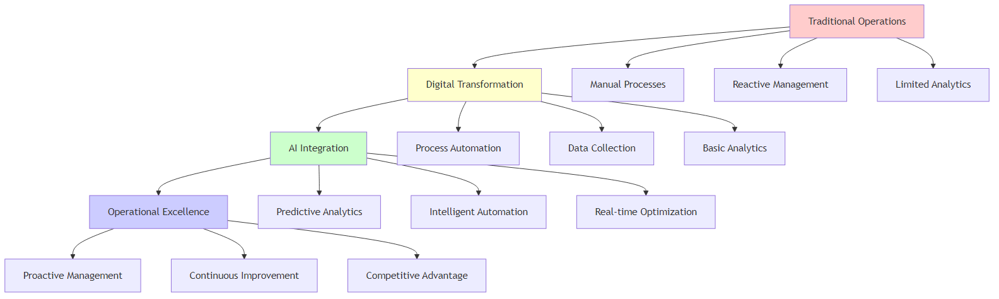
Figure 1.2: The AI Transformation Journey - From traditional operations to AI-enhanced excellence
Redefining Operational Excellence in the AI Era
Imagine a world where machines not only perform tasks but learn from every interaction, predict problems before they occur, and continuously optimize themselves. This is not science fiction—it’s the reality of operational excellence in the AI era. The landscape of operational excellence is undergoing a fundamental transformation, driven by the convergence of artificial intelligence, big data, and advanced analytics.
The Transformation Story: From Reactive to Predictive Excellence
The Challenge: Sarah Chen, Operations Director at TechFlow Manufacturing, faced a crisis. Her production line was experiencing 15% downtime due to unexpected equipment failures. Despite having a team of skilled technicians and following all traditional maintenance protocols, breakdowns kept happening at the worst possible times—during peak production periods when customer orders were highest.
The Breakthrough: When Sarah implemented AI-powered predictive maintenance, everything changed. The system learned from historical data, sensor readings, and environmental conditions to predict failures 72 hours in advance. Instead of reacting to problems, her team began preventing them. Downtime dropped to 3%, customer satisfaction soared, and the company saved $2.3 million in the first year alone.
The Lesson: This transformation represents the fundamental shift from reactive to predictive operations—the core of AI-driven operational excellence.
The shift in focus is profound. While traditional methods like Lean and Six Sigma primarily treated operations as a cost center to be minimized, AI transforms it into a source of exponential growth and competitive differentiation. For example, a company like Amazon has leveraged AI not just to cut costs in its logistics network but to create a logistical superpower that enables unprecedented speed and accuracy, driving market leadership.
The Paradigm Shift: From Reactive to Predictive Operations
| Aspect | Traditional vs AI-Enhanced Approach | Impact |
|---|---|---|
| Problem-Solving | Traditional: Reactive - Addressing issues after they occur AI-Enhanced: Predictive - Preventing issues before they occur |
Reduced downtime and costs |
| Analysis | Traditional: Manual - Human-driven data interpretation AI-Enhanced: Automated - AI-driven pattern recognition and insights |
Faster, more accurate decisions |
| Processes | Traditional: Static - Fixed methodologies and procedures AI-Enhanced: Dynamic - Adaptive and continuously improving |
Continuous optimization |
| Scalability | Traditional: Limited - Human capacity constraints AI-Enhanced: Unlimited - AI-driven scalability |
Exponential growth potential |
Historical Context: From Lean and Six Sigma to AI-Enhanced Operations
The journey of operational excellence has evolved through several distinct phases, each building upon the innovations of its predecessor:
| Phase & Time Period | Key Characteristics & Innovations | Key Limitations |
|---|---|---|
| Phase 1: Traditional Operations (Pre-1980s) |
• Manual processes and basic quality control • Reactive problem-solving approaches • Limited data collection and analysis • Subjective decision-making Innovations: Basic quality control methods |
• High variability in quality and performance • Inefficient resource utilization • Limited ability to identify root causes • Slow response to market changes |
| Phase 2: Lean and Six Sigma Era (1980s-2000s) |
• Systematic methodologies for process improvement • Statistical process control and measurement • Proactive quality management • Structured problem-solving approaches Innovations: DMAIC methodology, Value stream mapping, Statistical tools, Standardized work procedures |
Still reactive to some extent, limited automation |
| Phase 3: Digital Transformation (2000s-2015) |
• Introduction of ERP systems and basic automation • Real-time data collection capabilities • Basic process automation • Digital workflow management Innovations: ERP systems, Automated reporting, Basic predictive analytics, Digital documentation |
Limited AI capabilities, basic automation only |
| Phase 4: AI-Enhanced Operations (2015-Present) |
• Predictive and prescriptive analytics • Autonomous decision-making systems • Continuous learning and optimization • Intelligent automation Innovations: Machine learning, NLP, Computer vision, RPA |
Requires significant investment and expertise |
Core AI Technologies for Operations
The AI revolution in operations is powered by five core technologies that, when combined, create a comprehensive operational intelligence system:
Figure 1.2: AI Technology Stack - The comprehensive architecture showing data flow from sources to business applications
1. Machine Learning and Predictive Analytics
Machine learning is the brain of AI-enhanced operations, enabling systems to learn from data and make increasingly accurate predictions over time.
| Application Area | Description | Business Impact |
|---|---|---|
| Predictive Maintenance | Analyzing equipment sensor data to predict failures | Reduced unplanned downtime and maintenance costs |
| Demand Forecasting | Using historical data to predict future requirements | Improved inventory management and planning |
| Quality Prediction | Identifying potential quality issues before they occur | Enhanced product quality and reduced defects |
| Process Optimization | Continuously improving operational parameters | Increased efficiency and performance |
| Generative AI Applications | AI-generated insights, reports, and process recommendations | Accelerated decision-making and innovation |
| Agentic Framework | Autonomous AI agents for continuous process monitoring and optimization | Self-managing operations with minimal human intervention |
A manufacturing plant uses machine learning to analyze vibration patterns, temperature readings, and operational data from critical equipment. The system learns to recognize patterns that indicate impending failures, enabling proactive maintenance and reducing unplanned downtime by 40%.
2. Computer Vision and Image Recognition
Computer vision transforms quality control from a manual, error-prone process into an automated, highly accurate capability.
| Application Area | Description | Business Impact |
|---|---|---|
| Defect Detection | Identifying product defects with superhuman accuracy | Improved quality control and reduced defects |
| Safety Monitoring | Detecting unsafe conditions in real-time | Enhanced workplace safety and compliance |
| Process Verification | Ensuring correct assembly and packaging | Reduced errors and improved consistency |
| Document Processing | Automating data entry from forms and documents | Faster processing and reduced manual effort |
| Generative AI Vision | AI-generated visual content and automated image analysis | Enhanced visual intelligence and automation |
| Agentic Visual Systems | Autonomous visual agents for continuous monitoring and response | Self-managing visual quality control systems |
An automotive manufacturer implements computer vision systems that can inspect thousands of components per minute, detecting subtle defects that human inspectors might miss. The system achieves 99.9% accuracy in defect detection while operating 24/7 without fatigue.
3. Natural Language Processing (NLP)
NLP bridges the gap between human communication and machine understanding, enabling systems to process and analyze unstructured text data.
| Application Area | Description | Business Impact |
|---|---|---|
| Customer Feedback Analysis | Extracting insights from customer reviews and surveys | Enhanced customer understanding and service |
| Document Processing | Automating the analysis of reports and contracts | Faster document review and processing |
| Chatbot Support | Providing intelligent customer service | Improved customer experience and efficiency |
| Knowledge Management | Organizing and retrieving information from documents | Better information access and decision-making |
| Generative AI Language | AI-generated content, summaries, and automated text processing | Accelerated content creation and analysis |
| Agentic Language Systems | Autonomous language agents for intelligent communication and processing | Self-managing language processing workflows |
A customer service organization uses NLP to analyze thousands of customer emails and support tickets daily. The system identifies common issues, sentiment trends, and emerging problems, enabling proactive customer service and reducing response times by 60%.
4. Robotic Process Automation (RPA)
RPA represents the hands of AI-enhanced operations, automating repetitive, rule-based tasks that previously required human intervention.
| Application Area | Description | Business Impact |
|---|---|---|
| Data Entry Automation | Processing forms and documents | Reduced manual effort and improved accuracy |
| Report Generation | Creating and distributing regular reports | Faster reporting and reduced administrative burden |
| System Integration | Connecting disparate systems and databases | Improved data flow and system connectivity |
| Compliance Monitoring | Ensuring regulatory compliance | Reduced compliance risk and improved oversight |
| Generative AI Automation | AI-generated workflows and automated process optimization | Intelligent process design and continuous improvement |
| Agentic Process Systems | Autonomous process agents for self-managing workflows | Self-optimizing business processes with minimal oversight |
A financial services company uses RPA to process loan applications, automatically extracting data from various documents, performing credit checks, and generating approval recommendations. This reduces processing time from days to hours while improving accuracy.
5. Internet of Things (IoT) and Edge Computing
IoT provides the nervous system of AI-enhanced operations by collecting data from sensors and devices throughout the operational environment.
| Application Area | Description | Business Impact |
|---|---|---|
| Real-time Monitoring | Continuous tracking of equipment and processes | Immediate awareness and faster response times |
| Environmental Control | Optimizing temperature, humidity, and other conditions | Improved operational efficiency and quality |
| Asset Tracking | Monitoring the location and status of equipment and materials | Better asset utilization and reduced losses |
| Predictive Analytics | Using sensor data for advanced analytics | Proactive decision-making and optimization |
| Generative AI IoT | AI-generated insights from IoT data and automated sensor management | Intelligent sensor networks and autonomous data processing |
| Agentic IoT Systems | Autonomous IoT agents for self-managing sensor networks and edge computing | Self-optimizing IoT ecosystems with minimal human oversight |
A logistics company deploys IoT sensors throughout its warehouse and delivery network. These sensors provide real-time visibility into inventory levels, equipment status, and delivery progress, enabling dynamic route optimization and reducing delivery times by 25%.
6. Generative AI
Generative AI represents a paradigm shift in how organizations create content, generate insights, and automate complex tasks through AI systems that can produce original content and solutions.
| Application Area | Description | Business Impact |
|---|---|---|
| Content Generation | Automated creation of reports, documentation, and communications | Significant time savings and improved consistency |
| Process Optimization | Generating alternative process designs and optimization strategies | Innovative solutions and continuous improvement |
| Data Synthesis | Creating synthetic data for training and testing purposes | Enhanced model performance and reduced data collection costs |
| Scenario Planning | Generating multiple scenarios for strategic planning and risk assessment | Better preparedness and strategic decision-making |
| Code Generation | Automated generation of code and system configurations | Faster development cycles and reduced human errors |
7. Agentic Frameworks
Agentic AI frameworks enable autonomous AI agents that can plan, execute, and adapt their actions independently to achieve complex objectives without constant human oversight.
| Application Area | Description | Business Impact |
|---|---|---|
| Autonomous Operations | Self-managing systems that operate independently | Reduced operational overhead and 24/7 optimization |
| Intelligent Orchestration | Coordinating multiple systems and processes autonomously | Seamless integration and optimized resource utilization |
| Adaptive Decision Making | AI agents that learn and adapt their decision-making processes | Continuous improvement and resilience to changing conditions |
| Multi-Agent Collaboration | Multiple AI agents working together on complex tasks | Scalable problem-solving and distributed intelligence |
| Self-Healing Systems | Autonomous detection and resolution of operational issues | Minimized downtime and improved system reliability |
The Strategic Imperative
The adoption of AI in operations is no longer a matter of competitive advantage; it is rapidly becoming an essential business requirement. Organizations that successfully integrate AI are achieving unprecedented levels of efficiency, quality, and innovation.
Competitive Pressure
The competitive landscape is being fundamentally reshaped by AI adoption. Organizations that fail to adapt risk being left behind as AI-powered competitors capture market share and customer loyalty through superior operational efficiency and customer experience.
| Pressure Source | Description | Business Impact |
|---|---|---|
| Early Adopters | Companies like Amazon, Tesla, and Netflix have built competitive moats through AI | Market leadership and sustainable competitive advantages |
| Industry Disruption | Traditional players are being challenged by AI-native competitors | Market share erosion and customer migration |
| Customer Expectations | Customers expect personalized, efficient, and intelligent service | Increased customer satisfaction and loyalty requirements |
| Investor Pressure | Shareholders demand AI transformation initiatives | Capital allocation and strategic focus shifts |
ROI and Business Impact
Organizations implementing AI in operations are achieving measurable and substantial returns on investment. The financial and operational benefits extend across multiple dimensions, creating a compelling business case for AI adoption that goes beyond cost savings to include quality improvements, efficiency gains, and enhanced customer satisfaction.
| Impact Area | Measurable Results | Business Value |
|---|---|---|
| Cost Reduction | 20-30% reduction in operational costs | Improved profitability and resource optimization |
| Quality Improvement | 40-60% reduction in defects and errors | Enhanced product quality and customer satisfaction |
| Efficiency Gains | 25-50% improvement in productivity | Increased throughput and operational capacity |
| Customer Satisfaction | 15-25% improvement in customer satisfaction scores | Enhanced customer loyalty and market position |
Risk of Inaction
The consequences of delaying AI adoption extend far beyond missed opportunities. Organizations that fail to embrace AI face existential risks that can fundamentally threaten their market position, operational viability, and long-term sustainability in an increasingly AI-driven business environment.
| Risk Category | Specific Threats | Long-term Consequences |
|---|---|---|
| Competitive Disadvantage | Falling behind AI-enabled competitors | Market share erosion and potential obsolescence |
| Talent Attraction | Difficulty attracting and retaining top talent | Skills gap and organizational capability decline |
| Customer Loss | Losing customers to more intelligent competitors | Revenue decline and customer base erosion |
| Operational Inefficiency | Continued reliance on outdated processes | Cost structure disadvantage and productivity gaps |
Implementation Framework
Successfully implementing AI in operations requires a structured, phased approach that balances ambition with practical execution. This comprehensive framework provides a roadmap for organizations to systematically transform their operations through AI adoption, ensuring sustainable success and maximum value realization.
| Phase & Timeline | Key Activities | Deliverables |
|---|---|---|
| Phase 1: Assessment and Strategy (Months 1-3) | • Current State Analysis: Evaluate existing processes and capabilities • AI Readiness Assessment: Assess data quality, technology infrastructure, and organizational readiness • Strategic Planning: Define AI vision and implementation roadmap • Stakeholder Alignment: Secure executive sponsorship and organizational buy-in |
• Clear AI strategy and vision • Readiness assessment report • Organizational alignment documentation |
| Phase 2: Pilot and Proof of Concept (Months 4-6) | • Pilot Selection: Choose high-impact, manageable pilot projects • Technology Selection: Select appropriate AI tools and platforms • Data Preparation: Clean, structure, and prepare data for AI analysis • Pilot Implementation: Execute pilot projects and measure results |
• Working pilot systems • ROI analysis and results • Scalability assessment |
| Phase 3: Scaling and Integration (Months 7-12) | • Success Replication: Apply successful pilots to other areas • System Integration: Integrate AI solutions with existing systems • Process Standardization: Standardize AI implementation methodologies • Change Management: Manage organizational change and adoption |
• Integrated AI systems • Standardized methodologies • Change management documentation |
| Phase 4: Optimization and Innovation (Months 13-18) | • Performance Optimization: Continuously improve AI system performance • Advanced Capabilities: Implement more sophisticated AI features • Innovation Exploration: Explore new AI applications and opportunities • Competitive Advantage: Build sustainable competitive advantages |
• Advanced AI capabilities • Innovation roadmap • Competitive advantage strategy |
Key Success Factors
Successful AI implementation in operations depends on several critical factors that must be addressed systematically. These factors span leadership, technology, and organizational capabilities, each playing a crucial role in determining the success or failure of AI transformation initiatives.
| Success Factor Category | Key Requirements | Impact on Success |
|---|---|---|
| Leadership and Governance | • Executive Sponsorship: Strong commitment from senior leadership • Clear Vision: Well-defined AI strategy and objectives • Governance Framework: Clear decision-making processes and accountability • Resource Allocation: Adequate funding and resource commitment |
Ensures strategic alignment and organizational commitment |
| Data and Technology | • Data Quality: High-quality, clean, and relevant data • Technology Infrastructure: Scalable and flexible technology platform • Integration Capabilities: Ability to integrate with existing systems • Security and Compliance: Robust security and regulatory compliance |
Provides technical foundation for AI implementation |
| People and Culture | • Change Management: Comprehensive change management program • Skills Development: Investment in AI skills and capabilities • Cultural Transformation: Building an AI-ready organizational culture • Collaboration: Cross-functional collaboration and knowledge sharing |
Enables organizational adoption and sustainable change |
Building an AI-ready organizational culture
Engaging all stakeholders in the transformation
Common Pitfalls and How to Avoid Them
Understanding and avoiding common pitfalls is crucial for successful AI implementation. These challenges often stem from technology-first approaches, inadequate preparation, and unrealistic expectations that can derail AI initiatives and waste valuable resources.
| Common Pitfall | Problem Description | Solution |
|---|---|---|
| Technology-First Approach | Implementing AI for the sake of technology without clear business problems | Start with clear business problems and use AI as a tool to solve them |
| Insufficient Data Quality | Poor data quality leading to unreliable AI models | Invest in data governance and quality improvement before AI implementation |
| Lack of Change Management | Underestimating the importance of organizational change | Develop comprehensive change management and communication plans |
| Over-Reliance on Vendors | Depending too heavily on external vendors without building internal capabilities | Build internal AI capabilities while leveraging external expertise strategically |
| Unrealistic Expectations | Expecting immediate results without proper implementation time | Set realistic expectations and focus on incremental improvements |
Chapter 1 Self-Assessment: AI Readiness Evaluation
Rate your organization on each dimension (1-5 scale):
Data Foundation (Score: ___/25)
- Data Quality (1-5): We have clean, accurate, and well-organized data
- Data Accessibility (1-5): Data is easily accessible across departments
- Data Governance (1-5): We have clear data ownership and management policies
- Data Integration (1-5): Our systems can share data seamlessly
- Data Security (1-5): We have robust data protection measures
Technology Infrastructure (Score: ___/25)
- Cloud Readiness (1-5): We have cloud infrastructure or migration plans
- API Integration (1-5): Our systems support modern integration methods
- Scalability (1-5): Our infrastructure can handle increased workloads
- Security Framework (1-5): We have comprehensive cybersecurity measures
- Monitoring Systems (1-5): We can monitor system performance effectively
Organizational Readiness (Score: ___/25)
- Leadership Support (1-5): Senior leadership actively supports AI initiatives
- Change Management (1-5): We have experience managing organizational change
- Skills Development (1-5): We invest in employee training and development
- Cross-functional Collaboration (1-5): Teams work well together across departments
- Innovation Culture (1-5): We encourage experimentation and innovation
Business Alignment (Score: ___/25)
- Strategic Clarity (1-5): We have clear business objectives for AI
- ROI Measurement (1-5): We can measure and track business value
- Customer Focus (1-5): We understand our customers' needs deeply
- Process Optimization (1-5): We continuously improve our processes
- Competitive Advantage (1-5): We understand our competitive landscape
Total Score: ___/100
Interpretation:
- 80-100: AI-Ready - You're well-positioned for AI implementation
- 60-79: AI-Prepared - Address gaps before major AI initiatives
- 40-59: AI-Developing - Focus on foundational improvements first
- 20-39: AI-Exploring - Start with small pilot projects
- 0-19: AI-Foundation - Build basic capabilities before AI implementation
Try This: AI Opportunity Mapping Exercise
Instructions: Identify three operational areas where AI could create value:
1. Current Pain Point: ________________________________
AI Solution: ________________________________
Expected Impact: ________________________________
2. Current Pain Point: ________________________________
AI Solution: ________________________________
Expected Impact: ________________________________
3. Current Pain Point: ________________________________
AI Solution: ________________________________
Expected Impact: ________________________________
Chapter 1 Summary
This chapter has established the foundation for understanding AI's transformative impact on operational excellence. We've explored seven key AI technologies that are reshaping operations:
| AI Technology | Key Capability | Operational Impact |
|---|---|---|
| Machine Learning & Deep Learning | Pattern recognition and predictive analytics | Enables predictive maintenance and optimization |
| Computer Vision | Automated visual inspection and analysis | Transforms quality control and safety monitoring |
| Natural Language Processing | Understanding and processing human language | Automates customer service and documentation |
| Robotic Process Automation | Automated execution of repetitive tasks | Eliminates manual processes and reduces errors |
| IoT and Edge Computing | Real-time data collection and processing | Provides continuous monitoring and control |
| Generative AI | Content creation and solution generation | Accelerates innovation and process design |
| Agentic Frameworks | Autonomous decision-making and execution | Enables self-managing operational systems |
The integration of these technologies represents more than just automation—it's a fundamental shift from reactive to predictive operations. Organizations that successfully embrace this transformation will achieve unprecedented levels of efficiency, quality, and competitive advantage.
As we move forward, we'll explore how these technologies integrate with established operational excellence methodologies, creating a new paradigm of AI-enhanced operations that combines the best of human expertise with the power of artificial intelligence.
Chapter Summary
Chapter 1 has introduced the foundational AI technologies that are transforming operational excellence. We've explored seven critical AI technologies:
- Machine Learning and Deep Learning: The core engines of AI that enable systems to learn from data and make intelligent decisions
- Computer Vision: The eyes of AI systems, enabling visual recognition and analysis capabilities
- Natural Language Processing: The communication bridge between humans and machines, facilitating seamless interaction
- Robotic Process Automation: The automation layer that streamlines repetitive tasks and processes
- Internet of Things and Edge Computing: The data collection and processing infrastructure that provides real-time operational insights
- Generative AI: The creative force that generates content, insights, and solutions autonomously
- Agentic Frameworks: The autonomous systems that can plan, execute, and adapt independently
These technologies work synergistically to create intelligent operational environments where systems can sense, think, learn, and act autonomously. The key to successful AI implementation lies not in replacing human expertise but in augmenting it, creating human-AI partnerships that leverage the strengths of both.
Organizations that understand and strategically implement these AI technologies will be positioned to achieve operational excellence in the AI era. The journey from traditional operations to AI-enhanced operations requires careful planning, cultural transformation, and a commitment to continuous learning and adaptation.
In the following chapters, we'll explore how these foundational technologies integrate with established operational excellence methodologies like Lean Six Sigma, Total Quality Management, and Hoshin Kanri, creating a comprehensive framework for AI-enhanced operational excellence.
Chapter 2: AI-Powered Quality Control and Manufacturing
Revolutionizing Quality Assurance with Intelligent Systems
“Quality is not an act, it is a habit. AI is making that habit more intelligent, more consistent, and more predictive than ever before.”
– Adapted from Aristotle
Chapter Overview
This chapter delves into one of the most tangible applications of AI in operational excellence: transforming quality control and manufacturing. We will explore the historical evolution of quality assurance, examine the key AI technologies powering this revolution, and analyze real-world case studies from leading companies that have achieved remarkable results through AI-enhanced quality control.
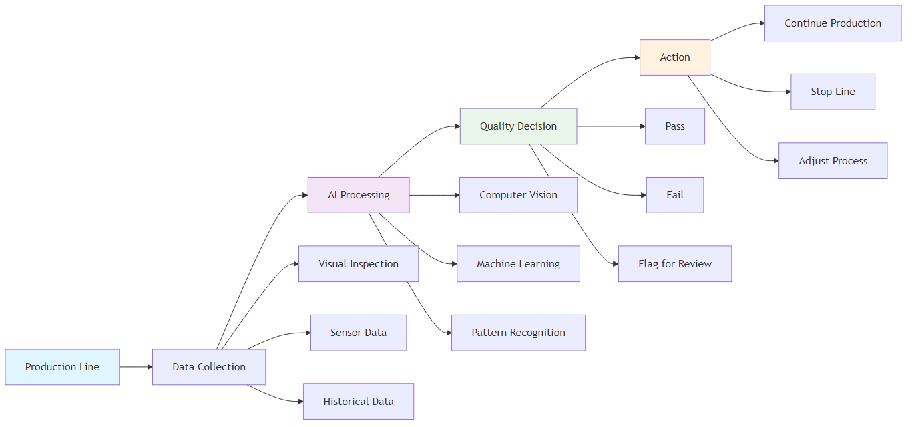
Figure 2.1: AI-Powered Quality Control System - Intelligent quality assurance workflow
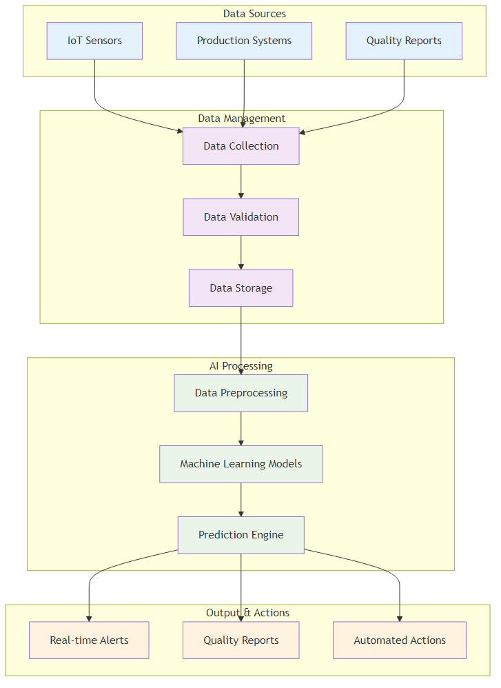
Figure 2.2: AI Quality Control System Architecture - The complete system showing data flow from sources to actions
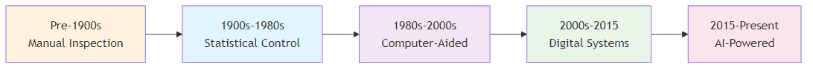
Figure 2.3: Quality Control Evolution Timeline - From manual inspection to AI-powered quality assurance
The Quality Revolution Story: When AI Became the Ultimate Inspector
The Problem: Marcus Rodriguez, Quality Manager at Precision Components Inc., was losing sleep. Despite having 50 experienced quality inspectors working three shifts, defective products were still reaching customers. The company's defect rate was 0.8%—acceptable by industry standards but costing $500,000 annually in warranty claims and lost customers.
The Human Challenge: Marcus noticed something troubling. His best inspector, Maria Santos, could spot 99.2% of defects, but after 6 hours of intense visual inspection, her accuracy dropped to 94%. Fatigue, distraction, and human limitations were creating quality gaps that AI could eliminate.
The AI Solution: When Marcus implemented computer vision AI for quality inspection, the results were transformative. The AI system achieved 99.7% accuracy consistently, 24/7, without fatigue. It could detect defects invisible to the human eye—microscopic cracks, subtle color variations, and dimensional variations of 0.001 inches.
The Outcome: Defect rates dropped to 0.1%, warranty claims decreased by 85%, and customer satisfaction scores reached all-time highs. Maria's role evolved from repetitive inspection to analyzing AI insights and training the system for new defect patterns.
The Lesson: AI doesn't replace human expertise—it amplifies it, enabling humans to focus on higher-value activities while ensuring consistent, superior quality.
The Evolution of Quality Control: From Human Eyes to AI Vision
Quality control has undergone a remarkable transformation over the past century, evolving from a subjective, human-centric process to a data-driven, intelligent system that can predict and prevent quality issues before they occur. This evolution represents a fundamental shift from reactive quality management to proactive, predictive quality assurance that leverages artificial intelligence to achieve unprecedented levels of precision, consistency, and efficiency.
| Era | Characteristics | Key Limitations |
|---|---|---|
| Era 1: Manual Inspection (Pre-1900s) | • Subjective, error-prone human inspection • Limited consistency and reliability • High labor costs and slow processing • Inability to detect subtle defects |
• Human fatigue and error rates • Inconsistent inspection standards • Limited throughput capacity • Difficulty detecting microscopic defects |
| Era 2: Statistical Process Control (1900s-1980s) | • Systematic quality measurement and control • Statistical sampling and analysis • Control charts and process monitoring • Systematic approach to quality improvement |
• Limited real-time capabilities • Statistical sampling limitations • Reactive rather than predictive • High data analysis overhead |
| Era 3: Automated Inspection (1980s-2010s) | • Machine vision and automated measurement • Reduced human error and increased consistency • Real-time quality monitoring capabilities • Basic automation of inspection processes |
• Limited adaptability to new defects • High setup and maintenance costs • Basic pattern recognition only • Limited predictive capabilities |
| Era 4: AI-Enhanced Quality Control (2010s-Present) | • Machine learning and deep learning for defect detection • Predictive quality analytics • Autonomous quality control systems • Continuous learning and improvement |
• Requires significant data and expertise • Initial implementation complexity • Ongoing model maintenance needs • Integration with existing systems |
Key AI Technologies in Quality Control
1. Computer Vision and Deep Learning
Computer vision systems powered by deep learning algorithms are revolutionizing quality inspection by enabling "superhuman" precision and consistency.
| Implementation Aspect | Description | Business Value |
|---|---|---|
| Convolutional Neural Networks (CNNs) | Specialized neural networks for image analysis | Superior image recognition and classification |
| Transfer Learning | Leveraging pre-trained models for specific applications | Faster deployment and reduced training time |
| Real-time Processing | Edge computing for immediate decision-making | Instant quality decisions and faster throughput |
| Multi-spectral Imaging | Using different light wavelengths for enhanced detection | Detection of invisible defects and quality issues |
| Defect Detection | Identifying surface defects, cracks, and imperfections | Improved product quality and reduced defects |
| Assembly Verification | Ensuring correct component placement and orientation | Reduced assembly errors and improved consistency |
| Label and Package Inspection | Verifying correct labeling and packaging | Compliance assurance and brand protection |
| Dimensional Measurement | Precise measurement of product dimensions | Consistent dimensional accuracy and quality |
| Generative AI Vision | AI-generated quality standards and automated visual inspection protocols | Dynamic quality criteria and adaptive inspection |
| Agentic Vision Systems | Autonomous visual quality agents for self-managing inspection processes | Self-optimizing quality control with minimal oversight |
Case Study: BMW Quality Control BMW implemented AI-powered computer vision systems across its production lines, achieving: - 40% reduction in quality-related defects - 60% faster detection rate compared to manual inspection - 99.9% accuracy in defect detection - 24/7 operation without fatigue or error
2. Predictive Quality Analytics
AI systems can predict quality issues before they occur, enabling proactive quality management and preventing defects from reaching customers.
| Analytics Component | Description | Business Impact |
|---|---|---|
| Machine Learning Models | Analyzing historical data to identify patterns | Proactive quality management and defect prevention |
| IoT Sensor Integration | Real-time monitoring of process parameters | Continuous quality monitoring and immediate alerts |
| Statistical Process Control | Enhanced SPC with AI-driven insights | Improved process control and quality consistency |
| Root Cause Analysis | Automated identification of quality issue causes | Faster problem resolution and prevention |
| Process Parameter Optimization | Adjusting process parameters to prevent defects | Optimized processes and reduced quality issues |
| Material Quality Prediction | Predicting quality issues based on material properties | Better material selection and quality assurance |
| Equipment Performance Monitoring | Predicting equipment-related quality issues | Proactive equipment maintenance and quality protection |
| Environmental Factor Analysis | Understanding how environmental conditions affect quality | Environmental optimization for consistent quality |
| Generative AI Analytics | AI-generated quality insights and predictive models | Dynamic quality intelligence and adaptive predictions |
| Agentic Quality Systems | Autonomous quality agents for self-managing quality processes | Self-optimizing quality management with minimal oversight |
Case Study: Global Chemical Manufacturer A global chemical manufacturer implemented predictive quality analytics, achieving: - 15% improvement in process capability - 12% reduction in yield losses - 30% reduction in customer complaints - $2.5 million annual cost savings
3. Natural Language Processing for Quality Documentation
NLP systems can analyze unstructured text from quality reports and incident logs, extracting valuable insights that would be time-consuming for humans to find.
| NLP Component | Description | Business Impact |
|---|---|---|
| Text Mining | Extracting key information from quality reports | Faster information extraction and analysis |
| Sentiment Analysis | Understanding the tone and urgency of quality issues | Prioritized quality issue resolution |
| Topic Modeling | Identifying recurring themes in quality problems | Pattern recognition and trend analysis |
| Automated Report Generation | Creating standardized quality reports | Consistent reporting and reduced manual effort |
| Quality Report Analysis | Automatically analyzing quality incident reports | Faster incident analysis and response |
| Customer Feedback Processing | Understanding quality issues from customer feedback | Enhanced customer satisfaction and service |
| Regulatory Compliance | Ensuring quality documentation meets regulatory requirements | Compliance assurance and risk reduction |
| Knowledge Management | Organizing and retrieving quality-related information | Better knowledge access and decision-making |
| Generative AI Documentation | AI-generated quality documentation and automated report insights | Dynamic documentation and intelligent reporting |
| Agentic Documentation Systems | Autonomous documentation agents for self-managing quality information | Self-optimizing quality documentation with minimal oversight |
Architectural Framework for AI-Enhanced Quality Systems
A robust AI Quality Control System Architecture provides a structured approach to implementing these technologies. The system integrates data sources, processing capabilities, and output mechanisms to deliver comprehensive quality control solutions that can scale across different manufacturing environments and quality requirements. This architectural framework ensures seamless integration, optimal performance, and sustainable operation of AI-enhanced quality systems.
| System Component | Purpose and Functionality | Key Features and Capabilities |
|---|---|---|
| Data Management Component | Handles data loading from various sources and ensures data quality across the entire quality control pipeline | • Data validation and cleaning • Real-time data streaming • Historical data storage • Data security and privacy |
| Data Preprocessing Module | Cleans, transforms, and prepares data for AI analysis, ensuring optimal model performance | • Data normalization • Feature engineering • Outlier detection • Missing data handling |
| Model Training System | Trains and validates machine learning models using historical quality data and performance metrics | • Model selection and training • Cross-validation • Hyperparameter optimization • Model performance evaluation |
| Prediction Engine | Uses trained models to make real-time predictions about quality issues and potential defects | • Real-time inference • Prediction confidence scoring • Model monitoring • Automated retraining |
| User Interface and Reporting | Provides user-friendly access to system insights and quality control information | • Real-time dashboards • Automated reporting • Alert systems • Mobile accessibility |
Case Studies in AI-Enhanced Quality
| Company | Challenge | AI Solution | Results | Key Success Factors |
|---|---|---|---|---|
| Samsung Electronics | Improve quality control across semiconductor manufacturing where microscopic defects cause product failures | AI-powered computer vision systems with deep learning algorithms trained on millions of defect images | • 40% reduction in quality defects • 60% faster detection rate • 99.9% accuracy • $50M annual savings |
• Comprehensive training data • Continuous model improvement • System integration • Change management |
| Automotive Manufacturer | High warranty claims due to undetected quality issues during production | Predictive quality analytics linking warranty claims data with production parameters | • 25% reduction in warranty claims • 30% improvement in customer satisfaction • 15% reduction in quality costs • Improved brand reputation |
• Cross-functional data integration • Advanced analytics capabilities • Strong stakeholder engagement • Continuous improvement culture |
| Pharmaceutical Manufacturer | Ensure 100% quality compliance while maintaining high production throughput | AI-enhanced quality control combining computer vision, predictive analytics, and automated reporting | • 100% quality compliance • 50% reduction in inspection time • 30% improvement in production throughput • Enhanced regulatory compliance |
• Regulatory compliance focus • Comprehensive validation process • Strong quality culture • Continuous monitoring and improvement |
Implementation Roadmap for AI-Enhanced Quality Control
Successfully implementing AI-enhanced quality control requires a systematic, phased approach that balances technical complexity with organizational readiness. This roadmap provides a structured pathway for organizations to transform their quality control operations through AI adoption, ensuring sustainable implementation and maximum value realization across all phases of the transformation journey.
| Phase | Key Activities | Deliverables |
|---|---|---|
| Phase 1: Assessment and Planning (Months 1-2) | • Current quality control process assessment • Data quality and availability evaluation • Technology infrastructure review • Stakeholder alignment and buy-in |
• Quality control maturity assessment • Data readiness report • Technology requirements specification • Implementation roadmap |
| Phase 2: Pilot Implementation (Months 3-6) | • Pilot process selection • Data collection and preparation • AI model development and training • Pilot system implementation |
• Working pilot system • Performance metrics and results • Lessons learned documentation • Scalability assessment |
| Phase 3: Scaling and Integration (Months 7-12) | • System scaling across multiple processes • Integration with existing quality systems • Process standardization • Change management implementation |
• Fully integrated quality control system • Standardized processes and procedures • Training and documentation • Performance monitoring dashboard |
| Phase 4: Optimization and Innovation (Months 13-18) | • Continuous performance optimization • Advanced feature implementation • Innovation exploration • Competitive advantage development |
• Optimized system performance • Advanced quality control capabilities • Innovation roadmap • Competitive advantage framework |
Best Practices for AI-Enhanced Quality Control
Implementing AI-enhanced quality control successfully requires adherence to proven best practices that address the technical, organizational, and cultural aspects of the transformation. These practices ensure sustainable implementation, optimal performance, and continuous improvement of AI-powered quality systems across all organizational levels and operational environments.
| Practice Area | Key Best Practices | Implementation Focus |
|---|---|---|
| Data Management | • Data Quality: Ensure high-quality, clean, and relevant data • Data Governance: Implement robust data governance frameworks • Data Security: Protect sensitive quality data • Data Integration: Integrate data from multiple sources |
Foundation for reliable AI model performance |
| Technology Selection | • Scalability: Choose scalable technology solutions • Integration: Ensure compatibility with existing systems • Maintenance: Consider ongoing maintenance requirements • Vendor Support: Evaluate vendor support and expertise |
Ensuring long-term viability and support |
| Change Management | • Stakeholder Engagement: Engage all stakeholders in the transformation • Training and Education: Provide comprehensive training programs • Communication: Maintain clear and consistent communication • Cultural Change: Build a quality-focused culture |
Organizational adoption and sustainability |
| Performance Monitoring | • Key Metrics: Define and track key performance indicators • Continuous Improvement: Implement continuous improvement processes • Feedback Loops: Establish feedback mechanisms • Benchmarking: Compare performance against industry standards |
Continuous optimization and excellence |
Future Trends in AI-Enhanced Quality Control
The future of AI-enhanced quality control is rapidly evolving, driven by technological advances that promise to revolutionize how organizations approach quality management. These emerging trends represent the next frontier in quality control, offering unprecedented capabilities for predictive quality assurance, autonomous operations, and seamless integration with smart manufacturing ecosystems that will fundamentally transform industrial quality standards.
| Future Trend | Key Capabilities | Business Impact |
|---|---|---|
| Edge AI and Real-time Processing | • Edge Computing: Processing AI models at the edge for faster response • Real-time Analytics: Immediate quality assessment and decision-making • Reduced Latency: Faster detection and response to quality issues • Bandwidth Optimization: Reduced data transmission requirements |
Instant quality decisions and minimal production delays |
| Explainable AI (XAI) | • Transparency: Making AI decision-making transparent and understandable • Regulatory Compliance: Meeting regulatory requirements for AI transparency • Trust Building: Building trust in AI systems • Human Oversight: Enabling human oversight of AI decisions |
Enhanced trust, compliance, and human-AI collaboration |
| Autonomous Quality Control | • Self-Optimizing Systems: Systems that continuously improve themselves • Predictive Maintenance: Predicting and preventing quality issues • Adaptive Learning: Systems that adapt to changing conditions • Intelligent Automation: Automated quality control processes |
Self-managing quality systems with minimal human intervention |
| Integration with Industry 4.0 | • IoT Integration: Integration with Internet of Things devices • Digital Twin Technology: Creating digital twins of physical processes • Cyber-Physical Systems: Integration of physical and digital systems • Smart Manufacturing: Intelligent manufacturing processes |
Seamless integration with smart manufacturing ecosystems |
Conclusion
AI-enhanced quality control represents a fundamental shift in how organizations approach quality management. By leveraging the power of artificial intelligence, organizations can achieve levels of quality, efficiency, and customer satisfaction that were previously impossible.
The key to success lies in understanding that AI is not a replacement for human expertise but an amplifier of human capabilities. Organizations that successfully integrate AI into their quality control processes will be better positioned to compete in an increasingly complex and demanding business environment.
The future of quality control is intelligent, predictive, and autonomous. Organizations that embrace this future will be the ones that thrive in the AI era.
Chapter 3: Strategic AI Implementation: Lessons from Industry Leaders
Learning from Successful AI Transformations
“The best way to predict the future is to invent it. At Intel, we’re not just adapting to the AI revolution—we’re driving it.”
– Pat Gelsinger, Intel CEO
Chapter Overview
This chapter moves beyond single case studies to analyze strategic approaches from industry leaders. We explore what sets top-performing companies apart, including their focus on governance, talent, and data, and learn from their successes and common pitfalls. This chapter provides a blueprint for a holistic, multi-faceted approach to AI transformation.
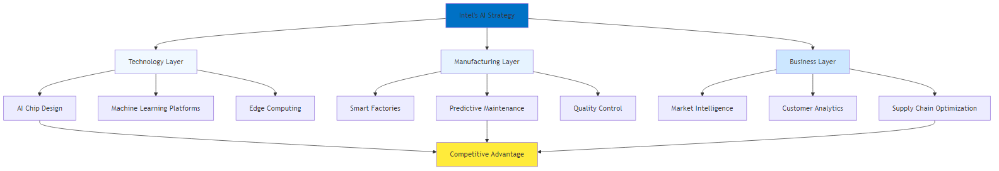
Figure 3.1: Intel AI Framework - Strategic approach to AI transformation
| Framework Component | Key Elements | Implementation Focus | Expected Outcomes |
|---|---|---|---|
| Strategic Foundation | • AI Vision & Strategy • Business Case Development • ROI Measurement • Governance Framework |
Establish clear direction and accountability | Aligned AI initiatives with business objectives |
| Data & Infrastructure | • Data Strategy • Cloud Infrastructure • Data Quality Management • Security & Compliance |
Build robust data foundation | Reliable, scalable AI platform |
| Technology & Tools | • ML Platform Selection • AI Model Development • Integration Architecture • Monitoring Systems |
Deploy appropriate technology stack | Effective AI solution delivery |
| People & Culture | • Skills Development • Change Management • AI Literacy Programs • Innovation Culture |
Build organizational capability | Successful AI adoption and scaling |
| Operations & Process | • Process Integration • Workflow Optimization • Continuous Improvement • Performance Monitoring |
Embed AI in operational processes | Sustained operational excellence |
Print Optimization Note: This figure should be redesigned with fewer boxes per row, larger text, and landscape orientation for better print readability.
The Strategic Context: Why AI is a Foundational Shift
The strategic decisions of companies like Intel, Amazon, and JPMorgan Chase reveal that AI is no longer a peripheral technology but a foundational element of competitive strategy. Intel’s journey from a traditional chipmaker to an AI-first company was a response to intense market pressures and operational challenges in semiconductor manufacturing.
Intel's Three-Pillar Strategy
Intel's transformation demonstrates how a legacy company can reinvent itself to lead in a new era:
| Strategic Pillar | Key Initiatives | Expected Outcomes |
|---|---|---|
| Pillar 1: AI-First Product Development | • AI-Enhanced Chip Design: Optimize chip architecture and performance • Automated Testing: AI-powered testing and validation processes • Predictive Design: Predict design performance and optimize parameters • Rapid Prototyping: AI-driven design iteration and optimization |
Faster time-to-market and superior chip performance |
| Pillar 2: AI-Enhanced Manufacturing | • Predictive Maintenance: AI-powered equipment monitoring and maintenance • Quality Control: Computer vision and ML for defect detection • Supply Chain Optimization: AI-driven demand forecasting and inventory management • Process Optimization: Continuous improvement through AI analytics |
Reduced costs, improved quality, and operational efficiency |
| Pillar 3: AI Solutions and Services | • AI Platform Development: Creating AI tools and platforms for customers • Consulting Services: Providing AI implementation expertise • Training and Education: Building AI capabilities in the ecosystem • Partnership Development: Collaborating with AI startups and innovators |
Market leadership and ecosystem development |
Amazon's AI-Driven Logistics Revolution
Amazon's success is built on an AI-driven logistics engine that transformed its supply chain into a superpower, demonstrating how AI can turn a cost center into a core competitive advantage.
| AI Application | Implementation | Results Achieved |
|---|---|---|
| Demand Forecasting | Predicting customer demand with remarkable accuracy using ML algorithms and historical data analysis | 75% increase in fulfillment speed |
| Route Optimization | Optimizing delivery routes in real-time using AI algorithms and traffic data | 40% improvement in delivery accuracy |
| Warehouse Automation | AI-powered robots and automation systems for inventory management and order fulfillment | 20% reduction in logistics costs |
| Customer Personalization | Personalized recommendations and experiences using AI-driven customer analytics | Enhanced customer satisfaction and loyalty |
The 10-20-70 Principle: A Framework for AI Success
BCG’s principle illustrates that AI success is as much about people and processes as technology:
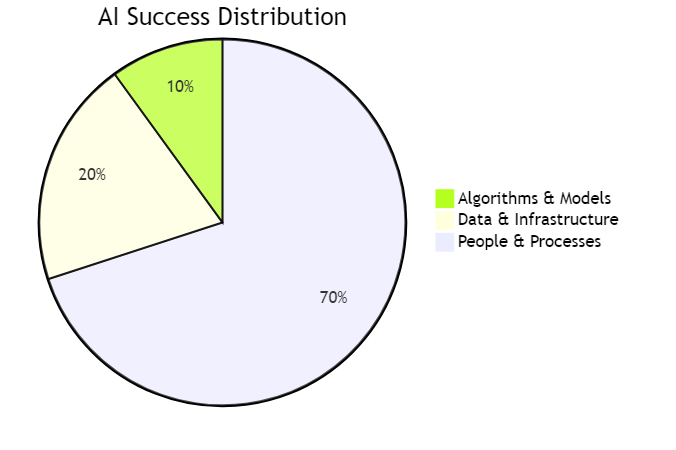
Figure 3.2: AI Success Distribution - The 10-20-70 principle showing the relative importance of different factors in AI success
The framework below provides a detailed breakdown of how organizations can structure their AI initiatives across the three critical areas:
The AI Success Framework consists of three critical components, each requiring different levels of investment and focus:
70% People & Process
The foundation of AI success lies in organizational culture and human capabilities. This includes fostering an AI-driven mindset, upskilling the workforce, and creating cross-functional teams that can effectively leverage AI technologies.
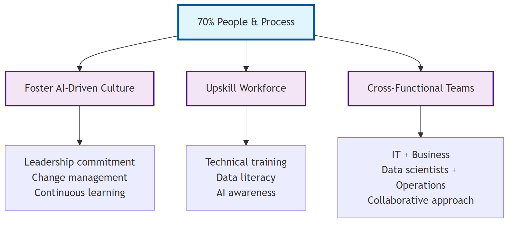
Figure 3.3: AI Success Framework - 70% People & Process Component
20% Data & Infrastructure
Robust data pipelines and scalable infrastructure form the technical backbone of AI implementations. This includes data quality management, governance frameworks, and cloud-based platforms that can support AI workloads.
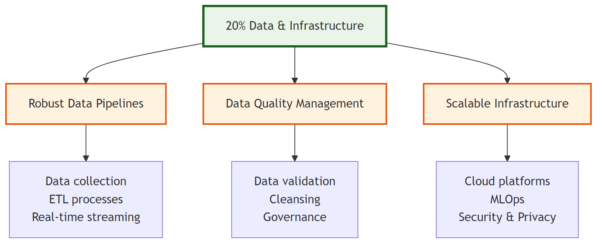
Figure 3.4: AI Success Framework - 20% Data & Infrastructure Component
10% Algorithms & Models
While algorithms and models are often the most visible aspect of AI, they represent only a small portion of the overall success. This includes cutting-edge machine learning techniques, custom model development, and ethical AI practices.
10%: Algorithms and Models
While algorithms and models are often the most visible aspect of AI, they represent only a small portion of the overall success. This includes cutting-edge machine learning techniques, custom model development, and ethical AI practices that form the technical foundation of AI implementation.
| Focus Area | Key Activities | Critical Considerations |
|---|---|---|
| Model Development | Building effective AI models and algorithms | Start with proven algorithms and techniques |
| Technology Selection | Choosing appropriate AI tools and platforms | Focus on business value rather than technical complexity |
| Performance Optimization | Continuously improving model performance | Ensure models are explainable and interpretable |
| Innovation | Exploring new AI techniques and approaches | Plan for continuous model improvement and updates |
20%: Data and Technology Infrastructure
Data and technology infrastructure forms the backbone of any successful AI implementation, providing the foundation for reliable, scalable, and secure AI operations that can support organizational growth and evolving business requirements.
| Focus Area | Key Activities | Critical Considerations |
|---|---|---|
| Data Quality | Ensuring high-quality, clean, and relevant data | Invest in data quality and governance from the start |
| Data Governance | Implementing robust data governance frameworks | Build scalable and flexible technology architecture |
| Technology Infrastructure | Building scalable and flexible technology platforms | Ensure security and compliance requirements are met |
| Integration | Connecting AI systems with existing business systems | Plan for integration with existing systems and processes |
70%: People, Processes, and Cultural Transformation
People, processes, and cultural transformation represent the largest component of AI success, requiring comprehensive organizational change management, skill development, and cultural adaptation to fully realize the potential of AI technologies across all business functions.
| Focus Area | Key Activities | Critical Considerations |
|---|---|---|
| Change Management | Managing organizational change and adoption | Invest heavily in change management and communication |
| Skills Development | Building AI capabilities and expertise | Focus on building internal AI capabilities |
| Process Redesign | Redesigning processes to leverage AI capabilities | Redesign processes to maximize AI value |
| Cultural Transformation | Building an AI-ready organizational culture | Build a culture of continuous learning and improvement |
Key Success Factors for AI Implementation
Leadership and Governance
Strong executive sponsorship and clear strategic vision are paramount for AI success, requiring comprehensive leadership commitment and robust governance frameworks that ensure strategic alignment, resource allocation, and performance accountability across all AI initiatives.
| Governance Component | Key Elements | Business Impact |
|---|---|---|
| Executive Sponsorship | • CEO Commitment: Active involvement and support from the CEO • Resource Allocation: Adequate funding and resource commitment • Strategic Alignment: Clear alignment with business strategy • Performance Accountability: Holding leaders accountable for AI results |
Ensures top-level commitment and strategic alignment |
| Governance Framework | • AI Steering Committee: Cross-functional committee to guide AI initiatives • Decision-Making Processes: Clear processes for AI-related decisions • Risk Management: Comprehensive risk assessment and mitigation • Performance Monitoring: Regular monitoring and reporting of AI performance |
Provides structured oversight and risk management |
Case Study: JPMorgan Chase JPMorgan Chase’s AI transformation was driven by strong executive leadership: - CEO Jamie Dimon personally championed AI initiatives - Established dedicated AI organization with significant resources - Implemented comprehensive governance and risk management - Achieved $1.5 billion in fraud prevention through AI
Data Quality and Infrastructure
High-quality, clean, and relevant data is the foundation of any successful AI system, requiring comprehensive data governance, robust infrastructure, and seamless integration capabilities that ensure reliable, secure, and scalable AI operations across all business functions.
| Infrastructure Component | Key Requirements | Business Impact |
|---|---|---|
| Data Quality Requirements | • Accuracy: Data must be accurate and reliable • Completeness: Data must be complete and comprehensive • Consistency: Data must be consistent across sources • Timeliness: Data must be current and up-to-date |
Ensures reliable AI model performance and decision-making |
| Data Infrastructure | • Data Architecture: Scalable and flexible data architecture • Data Governance: Robust data governance frameworks • Data Security: Comprehensive data security and privacy • Data Integration: Seamless integration of data from multiple sources |
Provides secure, scalable foundation for AI operations |
Case Study: Netflix Netflix’s AI success is built on exceptional data quality: - Comprehensive data collection from user interactions - Real-time data processing and analysis - Robust data governance and quality controls - Continuous data improvement and optimization
Talent Development and Change Management
This is perhaps the most critical success factor for AI implementation, requiring comprehensive skill development, effective change management, and cultural transformation that enables organizations to successfully adopt and leverage AI technologies across all business functions.
| Development Area | Key Components | Business Impact |
|---|---|---|
| Skills Development | • Technical Skills: Building AI technical capabilities • Business Skills: Understanding business context and requirements • Change Management: Managing organizational change effectively • Leadership Skills: Leading AI transformation initiatives |
Builds internal AI capabilities and expertise |
| Change Management | • Stakeholder Engagement: Engaging all stakeholders in the transformation • Communication: Clear and consistent communication • Training and Education: Comprehensive training programs • Cultural Change: Building an AI-ready culture |
Ensures successful organizational adoption and sustainability |
Case Study: Microsoft Microsoft’s AI transformation focused heavily on people: - Comprehensive AI training for all employees - Strong change management and communication - Cultural transformation to embrace AI - Continuous learning and development programs
Common Pitfalls and How to Avoid Them
Advanced AI implementation presents unique challenges that require comprehensive understanding and proactive mitigation strategies. These pitfalls often emerge from insufficient preparation, unrealistic expectations, and inadequate organizational readiness that can significantly impact AI project success and ROI.
| Pitfall Category | Symptoms & Impact | Solution & Best Practices |
|---|---|---|
| Technology-First Approach | • AI initiatives without clear business objectives • Technology-driven rather than business-driven decisions • Lack of measurable business outcomes • Difficulty demonstrating ROI |
• Begin with business problem identification • Focus on measurable business outcomes • Ensure clear ROI expectations • Align AI initiatives with business strategy |
| Insufficient Data Quality | • Inconsistent or inaccurate AI predictions • Difficulty achieving expected performance • High model maintenance requirements • Lack of trust in AI systems |
• Conduct comprehensive data quality assessment • Implement robust data governance frameworks • Invest in data cleaning and preparation • Establish data quality monitoring and improvement processes |
| Lack of Change Management | • Resistance to AI adoption • Low user adoption rates • Difficulty achieving expected benefits • Organizational resistance and pushback |
• Invest heavily in change management • Develop comprehensive communication plans • Provide extensive training and education • Build strong stakeholder engagement |
| Over-Reliance on External Vendors | • High dependency on external vendors • Limited internal AI capabilities • Difficulty customizing solutions • High ongoing costs |
• Build internal AI team and capabilities • Use external vendors strategically • Focus on knowledge transfer and learning • Maintain control over critical AI capabilities |
| Unrealistic Expectations | • Unrealistic timelines and expectations • Disappointment with initial results • Pressure for quick wins • Lack of patience for long-term benefits |
• Set realistic timelines and expectations • Focus on incremental improvements • Celebrate small wins and progress • Plan for long-term transformation |
Implementation Roadmap for Strategic AI Adoption
| Phase & Timeline | Key Activities | Deliverables |
|---|---|---|
| Phase 1: Foundation and Assessment (Months 1-3) | • Current State Assessment: Evaluate existing capabilities and readiness • Strategic Planning: Define AI vision and strategy • Stakeholder Alignment: Secure executive sponsorship and buy-in • Resource Planning: Allocate resources and budget |
• AI readiness assessment report • Strategic AI roadmap • Executive sponsorship and governance framework • Resource allocation plan |
| Phase 2: Pilot and Proof of Concept (Months 4-6) | • Pilot Selection: Choose high-impact, manageable pilot projects • Technology Selection: Select appropriate AI tools and platforms • Data Preparation: Clean, structure, and prepare data • Pilot Implementation: Execute pilot projects and measure results |
• Working pilot systems • Performance metrics and results • Lessons learned documentation • Scalability assessment |
| Phase 3: Scaling and Integration (Months 7-12) | • Success Replication: Apply successful pilots to other areas • System Integration: Integrate AI solutions with existing systems • Process Standardization: Standardize AI implementation methodologies • Change Management: Manage organizational change and adoption |
• Integrated AI systems • Standardized processes and procedures • Change management documentation • Performance monitoring dashboards |
| Phase 4: Optimization and Innovation (Months 13-18) | • Performance Optimization: Continuously improve AI system performance • Advanced Capabilities: Implement more sophisticated AI features • Innovation Exploration: Explore new AI applications and opportunities • Competitive Advantage: Build sustainable competitive advantages |
• Optimized AI systems • Advanced AI capabilities • Innovation roadmap • Competitive advantage framework |
Conclusion
Strategic AI implementation requires a holistic approach that goes beyond technology to encompass people, processes, and cultural transformation. Organizations that successfully navigate this transformation will be better positioned to compete in the AI era.
The key to success lies in understanding that AI is not just a technology implementation but a fundamental transformation of how organizations operate and compete. By focusing on the 10-20-70 principle and avoiding common pitfalls, organizations can successfully implement AI and achieve sustainable competitive advantages.
The future belongs to organizations that can effectively integrate AI into their operational DNA while building the people, processes, and culture needed to maximize its value.
Chapter 4: Lean Six Sigma Meets Artificial Intelligence
Enhancing Traditional Methodologies with AI
“The combination of Lean Six Sigma’s proven methodology with AI’s predictive power creates a new paradigm of operational excellence that is both systematic and intelligent.”
– Adapted from Michael George
Chapter Overview
This chapter explores how AI technologies are transforming Lean Six Sigma from a reactive, manual process to a proactive, intelligent system that can predict issues, optimize processes, and continuously improve performance. We examine how AI enhances each phase of the DMAIC process and creates new opportunities for waste elimination and process optimization.
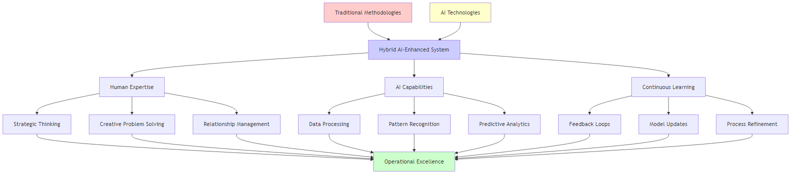
Figure 4.1: Integration of Traditional Methodologies with AI - How AI enhances Lean Six Sigma
AI-Enhanced DMAIC Process: The Intelligent Improvement Cycle
The DMAIC (Define, Measure, Analyze, Improve, Control) methodology has been the cornerstone of Six Sigma for decades. AI is now transforming each phase of this process, making it more intelligent, efficient, and effective.
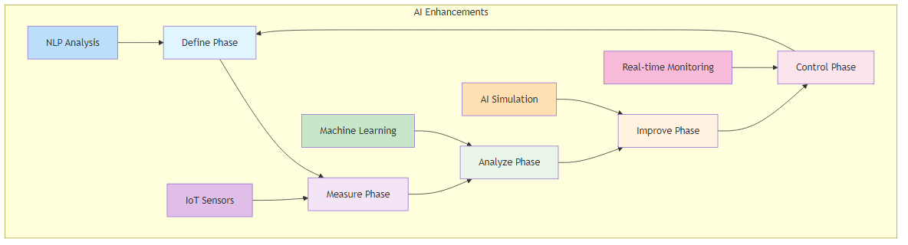
Figure 4.2: AI-Enhanced DMAIC Process - The intelligent improvement cycle with AI capabilities integrated into each phase
Define Phase: AI-Powered Problem Identification
| Approach | Traditional vs AI-Enhanced Methods | Impact |
|---|---|---|
| Data Analysis | Traditional: Manual analysis of customer feedback and complaints AI-Enhanced: NLP analyzing vast volumes from surveys, social media, and support tickets |
Faster, more comprehensive problem identification |
| Data Sources | Traditional: Limited data sources for problem identification AI-Enhanced: Sentiment analysis understanding customer emotions and satisfaction levels |
Deeper insights into customer experience |
| Assessment | Traditional: Subjective assessment of improvement opportunities AI-Enhanced: Pattern recognition identifying recurring themes and issues |
Objective, data-driven problem prioritization |
| Reporting | Traditional: Time-consuming stakeholder interviews and surveys AI-Enhanced: Automated reporting generating comprehensive problem statements |
Reduced time and improved accuracy |
Implementation Example: Telecommunications Company A telecommunications company used AI-driven sentiment analysis to scan customer reviews and social media comments, identifying that response times were slowest during peak hours and customer dissatisfaction was highest in specific geographic regions. This enabled precise problem definition and targeted improvement efforts.
Measure Phase: Intelligent Data Collection and Analysis
| Measurement Aspect | Traditional vs AI-Enhanced Approach | Benefits |
|---|---|---|
| Data Collection | Traditional: Manual data collection and entry AI-Enhanced: IoT sensors providing continuous, real-time data collection from equipment and processes |
Eliminates manual effort and provides continuous monitoring |
| Monitoring | Traditional: Limited real-time monitoring capabilities AI-Enhanced: Advanced analytics with real-time performance monitoring and analysis |
Immediate insights and faster response times |
| Analysis | Traditional: Basic statistical analysis AI-Enhanced: Automated data quality checks ensuring data accuracy and completeness |
Higher data quality and reliability |
| Accuracy | Traditional: Human error in data processing AI-Enhanced: Predictive monitoring anticipating measurement needs and data gaps |
Reduced errors and proactive measurement planning |
Implementation Example: Manufacturing Plant A manufacturing plant deployed IoT sensors with AI algorithms to monitor temperature and vibration levels on production line equipment. The system automatically detected signs of wear and established baseline measurements for improvement, eliminating manual data collection and reducing measurement errors by 90%.
Analyze Phase: Deep Pattern Recognition and Root Cause Analysis
| Analysis Component | Traditional vs AI-Enhanced Approach | Advantages |
|---|---|---|
| Statistical Analysis | Traditional: Manual statistical analysis AI-Enhanced: Machine learning algorithms analyzing complex datasets to identify hidden patterns and correlations |
Deeper insights and faster processing |
| Correlation Analysis | Traditional: Limited correlation analysis AI-Enhanced: Predictive modeling forecasting potential outcomes and identifying causal relationships |
Proactive problem prevention |
| Pattern Recognition | Traditional: Human interpretation of data patterns AI-Enhanced: Automated pattern recognition identifying anomalies and trends |
Objective, consistent analysis |
| Root Cause Investigation | Traditional: Time-consuming root cause investigation AI-Enhanced: Intelligent root cause analysis with automated hypothesis generation |
Faster problem resolution |
Identifying potential root causes before they manifest -
Discovering relationships between variables -
Prioritizing potential causes based on data evidence
Implementation Example: Automotive Manufacturer An automotive manufacturer used AI to analyze data from various sources including production parameters, material properties, and warranty claims. The system identified that certain materials in specific parts failed more frequently, leading to higher warranty claims. This enabled targeted improvements in material selection and processing.
Improve Phase: AI-Driven Solution Design and Optimization
| Improvement Aspect | Traditional vs AI-Enhanced Approach | Results |
|---|---|---|
| Solution Design | Traditional: Manual design of experiments AI-Enhanced: AI-driven simulation modeling process changes to assess impact before implementation |
Reduced experimental costs and faster validation |
| Testing Capabilities | Traditional: Limited solution testing capabilities AI-Enhanced: Generative AI proposing optimized process parameters and solutions |
More comprehensive solution exploration |
| Optimization | Traditional: Trial-and-error approach to improvement AI-Enhanced: Predictive optimization identifying the most effective improvement strategies |
Faster convergence to optimal solutions |
| Iteration Speed | Traditional: Slow iteration and optimization AI-Enhanced: Automated testing with rapid iteration and validation of improvements |
Accelerated improvement cycles |
Implementation Example: Pharmaceutical Manufacturing A pharmaceutical manufacturer used AI-generated designs of experiments to optimize production parameters. The system reduced experimental runs by 30% while achieving target quality metrics, significantly accelerating the improvement process and reducing costs.
Control Phase: Intelligent Monitoring and Continuous Improvement
| Control Element | Traditional vs AI-Enhanced Approach | Impact |
|---|---|---|
| Monitoring | Traditional: Manual monitoring of key metrics AI-Enhanced: Real-time monitoring with continuous tracking of key metrics and intelligent alerts |
Immediate awareness of process changes |
| Response | Traditional: Reactive response to deviations AI-Enhanced: Predictive alerts anticipating deviations before they occur |
Proactive problem prevention |
| Capabilities | Traditional: Limited predictive capabilities AI-Enhanced: Adaptive control limits with dynamic adjustment of control parameters |
More flexible and responsive control |
| Control Limits | Traditional: Static control limits AI-Enhanced: Automated response with intelligent systems that can automatically adjust processes |
Self-optimizing processes |
Implementation Example: Food Processing Company A food processing company implemented AI-powered predictive maintenance on its packaging machines. The system predicts when a machine is likely to fail and alerts maintenance teams proactively, ensuring process consistency and reducing downtime by 40%.
AI-Enhanced Lean and Kaizen: From Manual to Intelligent Improvement
Lean AI: Eliminating Waste Through Intelligent Automation
Traditional Lean focuses on identifying and eliminating waste (muda) through value stream mapping and continuous improvement. AI enhances this process by providing intelligent insights and automation.
| Lean AI Category | Key Capabilities | Business Impact |
|---|---|---|
| Information Consolidation | • AI-Powered Knowledge Management: Summarizing historical defect data and process information • Intelligent Documentation: Automatically generating and updating process documentation • Smart Onboarding: Accelerating new employee training through AI-powered learning systems • Knowledge Discovery: Identifying hidden patterns in historical data |
Reduces information search time, improves knowledge retention, and accelerates employee productivity |
| Task Automation | • Intelligent Workflow Automation: Automating repetitive tasks and decision-making • Smart Scheduling: Optimizing production schedules and resource allocation • Predictive Planning: Anticipating demand and planning production accordingly • Automated Reporting: Generating comprehensive performance reports |
Eliminates manual waste, improves efficiency, and enables proactive decision-making |
AI-Powered Kaizen: From Incremental to Intelligent Improvement
Kaizen, the philosophy of continuous improvement, is transformed by AI from a manual, experience-based process to an autonomous, data-driven system.
- Manual identification of improvement opportunities - Experience-based decision making - Slow iteration and learning cycles - Limited scalability
-
AI systems continuously monitor processes and identify improvement opportunities -
Using analytics and machine learning to guide improvement decisions -
AI systems learn from every interaction and continuously improve -
AI can monitor and improve multiple processes simultaneously
Implementation Example: Customer Service AI Agent An AI agent continuously analyzes customer interactions, identifies trends and pain points, and automatically updates its knowledge base. It learns from every exchange, becoming smarter and more effective with each interaction, enabling continuous, system-wide refinement of processes.
Advanced AI Applications in Lean Six Sigma
| AI Application | Key Capabilities | Case Study Results |
|---|---|---|
| Predictive Quality Management | • Early Warning Systems: Identifying quality trends before they become problems • Predictive Modeling: Forecasting quality outcomes based on process parameters • Automated Interventions: Triggering corrective actions automatically • Continuous Learning: Improving prediction accuracy over time |
Electronics Manufacturer: Achieved 85% accuracy in predicting quality problems, enabling proactive interventions and reducing defects by 60% |
| Intelligent Process Optimization | • Real-time Optimization: Continuously adjusting process parameters for optimal performance • Multi-objective Optimization: Balancing multiple performance objectives simultaneously • Adaptive Learning: Learning from process changes and improving optimization strategies • Predictive Optimization: Anticipating future conditions and optimizing accordingly |
Chemical Processing Plant: Achieved 25% improvement in production efficiency by continuously monitoring process conditions and adjusting parameters to maximize yield while maintaining quality standards |
| Smart Value Stream Mapping | • Real-time Mapping: Dynamic value stream maps that update automatically • Intelligent Analysis: AI-powered identification of waste and improvement opportunities • Predictive Mapping: Anticipating future value stream changes • Automated Optimization: Suggesting improvements based on data analysis |
Logistics Company: Reduced delivery times by 30% by providing real-time visibility into the entire delivery chain and automatically identifying bottlenecks and optimization opportunities |
Implementation Framework for AI-Enhanced Lean Six Sigma
| Phase & Timeline | Key Activities | Deliverables |
|---|---|---|
| Phase 1: Assessment and Readiness (Months 1-2) | • Current Lean Six Sigma maturity assessment • AI readiness evaluation • Data quality and availability assessment • Stakeholder alignment and training |
• Maturity assessment report • AI readiness plan • Data improvement roadmap • Training and development plan |
| Phase 2: Pilot Implementation (Months 3-6) | • Pilot project selection • AI tool selection and implementation • Data collection and preparation • Pilot execution and measurement |
• Working pilot systems • Performance metrics and results • Lessons learned documentation • Scalability assessment |
| Phase 3: Scaling and Integration (Months 7-12) | • System scaling across multiple processes • Integration with existing Lean Six Sigma systems • Process standardization • Change management implementation |
• Integrated AI-Lean Six Sigma systems • Standardized processes and procedures • Performance monitoring dashboards • Continuous improvement framework |
| Phase 4: Optimization and Innovation (Months 13-18) | • Advanced AI feature implementation • Innovation exploration • Competitive advantage development • Continuous optimization |
• Advanced AI capabilities • Innovation roadmap • Competitive advantage framework • Optimization strategy |
Best Practices for AI-Enhanced Lean Six Sigma
| Best Practice Category | Key Elements | Description |
|---|---|---|
| Data Management | • Data Quality • Data Governance • Real-time Data • Data Integration |
Ensure high-quality, clean, and relevant data with robust governance frameworks, real-time collection capabilities, and integration from multiple sources |
| Technology Selection | • Scalability • Integration • User-Friendliness • Vendor Support |
Choose scalable AI solutions that integrate with existing Lean Six Sigma tools, are easy to use, and have strong vendor support |
| Change Management | • Stakeholder Engagement • Training and Education • Communication • Cultural Change |
Engage all stakeholders, provide comprehensive training, maintain clear communication, and build a culture that embraces AI-enhanced improvement |
| Performance Monitoring | • Key Metrics • Continuous Improvement • Feedback Loops • Benchmarking |
Define and track KPIs, implement continuous improvement processes, establish feedback mechanisms, and benchmark against industry standards |
Future Trends in AI-Enhanced Lean Six Sigma
| Trend Category | Key Capabilities | Business Impact |
|---|---|---|
| Autonomous Improvement Systems | • Self-Optimizing Processes: Systems that continuously improve themselves • Intelligent Automation: Automated improvement processes • Predictive Optimization: Anticipating and preventing problems • Adaptive Learning: Systems that learn and adapt to changing conditions |
Reduces manual intervention while maintaining continuous improvement momentum |
| Integration with Industry 4.0 | • IoT Integration: Integration with Internet of Things devices • Digital Twin Technology: Creating digital twins of physical processes • Cyber-Physical Systems: Integration of physical and digital systems • Smart Manufacturing: Intelligent manufacturing processes |
Enables seamless integration with modern manufacturing technologies |
| Advanced Analytics | • Prescriptive Analytics: Providing specific recommendations for improvement • Predictive Analytics: Forecasting future performance and issues • Real-time Analytics: Immediate analysis and decision-making • Advanced Visualization: Enhanced data visualization and reporting |
Transforms data into actionable insights for strategic decision-making |
Conclusion
AI-enhanced Lean Six Sigma represents the evolution of continuous improvement methodologies. By combining the proven principles of Lean and Six Sigma with the power of artificial intelligence, organizations can achieve levels of efficiency, quality, and performance that were previously impossible.
The key to success lies in understanding that AI is not a replacement for Lean Six Sigma but an amplifier of its capabilities. Organizations that successfully integrate AI into their continuous improvement processes will be better positioned to compete in an increasingly complex and demanding business environment.
The future of operational excellence is intelligent, predictive, and continuously improving. Organizations that embrace AI-enhanced Lean Six Sigma will be the ones that thrive in the AI era.
Chapter 5: Total Productive Maintenance (TPM) in the AI Era
Predictive Maintenance and Equipment Optimization
“TPM is a holistic strategy. AI is the engine that makes that strategy not only holistic but also intelligent, predictive, and autonomous.”
– Adapted from Seiichi Nakajima
Chapter Overview
This chapter explores the evolution of TPM into TPM 4.0, integrating AI, IIoT, and Edge AI to create self-optimizing, predictive maintenance ecosystems. We examine how AI transforms traditional maintenance approaches from reactive to predictive, enabling organizations to achieve unprecedented levels of equipment reliability and operational efficiency.
The Evolution of TPM: From Reactive to Predictive Maintenance
Total Productive Maintenance (TPM) has evolved significantly since its introduction in the 1970s. Traditional TPM relies on systematic scheduling of maintenance activities and employee involvement in routine tasks. While effective, this approach is limited by its reactive nature and lack of real-time insights.
Traditional TPM Limitations
| Maintenance Approach | Key Limitations | Business Impact |
|---|---|---|
| Reactive Maintenance | • Maintenance performed only after equipment failure • Limited ability to predict failures • Inefficient resource allocation |
High unplanned downtime costs and production losses |
| Scheduled Maintenance | • Fixed maintenance intervals regardless of equipment condition • Potential for unnecessary maintenance • Risk of unexpected failures between scheduled maintenance |
Limited optimization opportunities and potential over-maintenance |
| Manual Monitoring | • Human-dependent monitoring and decision-making • Limited data collection and analysis capabilities • Subjective assessment of equipment condition • Slow response to changing conditions |
Inconsistent maintenance decisions and delayed responses |
TPM 4.0: The AI-Enhanced Evolution
TPM 4.0 represents the next generation of maintenance management, integrating advanced technologies to create intelligent, predictive maintenance systems.
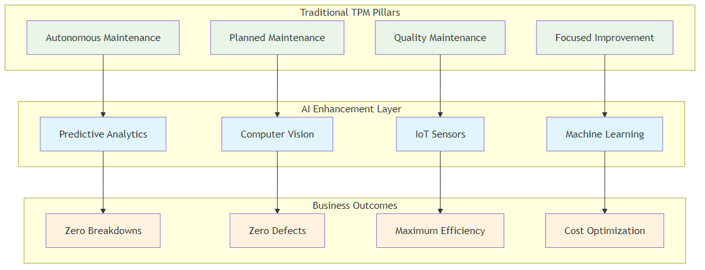
Figure 5.1: TPM 4.0 Framework - Traditional TPM pillars enhanced with AI capabilities
| TPM 4.0 Characteristic | Capability | Business Value |
|---|---|---|
| Predictive Capabilities | AI algorithms predict failures before they occur | Reduced unplanned downtime and maintenance costs |
| Real-time Monitoring | Continuous monitoring of equipment condition | Immediate awareness of performance issues |
| Intelligent Automation | Automated decision-making and response systems | Faster response times and reduced human error |
| Continuous Learning | Systems that improve over time through machine learning | Continuously improving maintenance effectiveness |
AI’s Revolutionary Impact on TPM
Improved Predictive Maintenance
AI algorithms analyze vast amounts of data from machinery and equipment, identifying patterns and predicting potential failures with high accuracy.
| Predictive Capability | Function | Outcome |
|---|---|---|
| Pattern Recognition | Identifying failure patterns from historical data | Early warning system for potential issues |
| Anomaly Detection | Detecting unusual equipment behavior | Immediate identification of abnormal conditions |
| Failure Prediction | Predicting failures with high accuracy | Proactive maintenance scheduling |
| Risk Assessment | Quantifying failure risk and impact | Prioritized maintenance planning |
Implementation Example: General Motors General Motors deployed a predictive maintenance solution using machine learning and IIoT sensors at its Arlington Assembly Plant. The system integrated sensor data with historical maintenance records to create comprehensive digital profiles of each asset. It predicted over 70% of equipment failures at least 24 hours in advance, allowing for proactive maintenance and more effective redistribution of maintenance labor.
Enhanced Condition Monitoring
AI continuously monitors equipment conditions, identifying potential issues early and enabling proactive maintenance.
| Capability | Description | Implementation Example |
|---|---|---|
| Real-time Monitoring | Continuous monitoring of equipment parameters | Rolls-Royce: Uses AI to analyze vast amounts of sensor data from jet engines, monitoring vibration patterns, temperature readings, and other critical parameters to predict potential issues and ensure the highest safety standards |
| Early Warning Systems | Alerting maintenance teams to potential issues | Enables shift from reactive to predictive maintenance, significantly improving safety and reliability |
| Condition Assessment | Comprehensive assessment of equipment health | Provides detailed equipment health status for informed maintenance decisions |
| Trend Analysis | Identifying long-term equipment degradation patterns | Helps predict future maintenance needs and optimize maintenance schedules |
Optimized Maintenance Scheduling
AI systems automate the scheduling of maintenance activities based on real-time data, reducing the risk of equipment failure and enhancing overall efficiency.
| Capability | Description | Implementation Example |
|---|---|---|
| Dynamic Scheduling | Adjusting maintenance schedules based on equipment condition | Siemens: Applies AI to predict machine failures in manufacturing plants by analyzing vibration patterns, temperature, and usage history. Predicts potential failures weeks in advance, enabling just-in-time repairs |
| Resource Optimization | Optimizing maintenance resource allocation | Ensures optimal allocation of maintenance personnel, tools, and materials based on predicted needs |
| Cost Optimization | Minimizing maintenance costs while maximizing reliability | Reduces overall maintenance costs while extending equipment life and reducing downtime |
| Priority Management | Prioritizing maintenance activities based on risk and impact | Ensures critical equipment receives priority attention based on risk assessment and business impact |
Data-Driven Decision Making
AI provides valuable insights through data analytics, enabling plant managers and engineers to make informed decisions that enhance maintenance strategies and improve overall operational performance.
| Capability | Description | Business Impact |
|---|---|---|
| Performance Analytics | Comprehensive analysis of equipment performance | Provides detailed insights into equipment efficiency, utilization, and performance trends |
| Root Cause Analysis | Identifying underlying causes of equipment issues | Enables targeted solutions and prevents recurring problems |
| Optimization Recommendations | Providing specific recommendations for improvement | Guides maintenance teams with actionable insights for performance enhancement |
| Predictive Modeling | Forecasting future equipment performance and needs | Enables proactive planning and resource allocation for future maintenance requirements |
Advanced AI Applications in TPM
Edge AI and Real-time Processing
Edge AI brings processing power closer to data sources, enabling faster decision-making and reducing latency.
| Benefit | Description | Implementation Example |
|---|---|---|
| Reduced Latency | Faster response to equipment issues | Automotive Manufacturer: Implemented Edge AI for real-time quality control in manufacturing, achieving 100x improvement in inspection speed compared to manual methods |
| Bandwidth Optimization | Reduced data transmission requirements | Processes data locally, reducing network traffic and bandwidth costs |
| Real-time Processing | Immediate analysis and decision-making | Enables immediate corrective actions with highly accurate defect detection |
| Offline Capability | Continued operation even with network issues | Maintains functionality even when network connectivity is compromised |
Digital Twin Technology
Digital twins create virtual representations of physical equipment, enabling advanced simulation and optimization.
| Capability | Description | Implementation Example |
|---|---|---|
| Virtual Simulation | Simulating equipment behavior and performance | GE Aviation: Uses digital twin technology to monitor and optimize jet engine performance, creating virtual models that continuously update based on real-time data |
| Predictive Modeling | Predicting equipment performance under different conditions | Enables predictive maintenance and performance optimization through virtual testing |
| Optimization Testing | Testing maintenance strategies without affecting physical equipment | Allows safe experimentation with different maintenance approaches and parameters |
| Performance Monitoring | Real-time monitoring of equipment performance | Provides continuous visibility into equipment health and performance metrics |
Autonomous Maintenance Systems
AI enables autonomous maintenance systems that can perform routine maintenance tasks without human intervention.
| Capability | Description | Business Impact |
|---|---|---|
| Automated Inspections | AI-powered visual inspections of equipment using computer vision and sensors | Eliminates human error and provides 24/7 monitoring coverage |
| Predictive Interventions | Automatic adjustment of equipment parameters based on predictive analytics | Prevents equipment failures before they occur |
| Self-healing Systems | Systems that can repair themselves through automated diagnostics and corrections | Minimizes downtime and reduces maintenance costs |
| Intelligent Alerts | Smart alerting systems that prioritize issues based on severity and impact | Enables proactive maintenance and optimal resource allocation |
Implementation Example: Smart Factory A smart factory implemented autonomous maintenance systems that continuously monitor equipment and automatically adjust parameters to prevent issues. The system reduced unplanned downtime by 60% and maintenance costs by 40%.
Implementation Framework for AI-Enhanced TPM
| Phase & Timeline | Key Activities | Deliverables |
|---|---|---|
| Phase 1: Assessment and Planning (Months 1-3) | • Current TPM maturity assessment • Equipment and data inventory • Technology infrastructure evaluation • Stakeholder alignment and training |
• TPM maturity assessment report • Equipment and data inventory • Technology requirements specification • Implementation roadmap |
| Phase 2: Pilot Implementation (Months 4-6) | • Pilot equipment selection • Sensor installation and data collection • AI model development and training • Pilot system implementation |
• Working pilot system • Performance metrics and results • Lessons learned documentation • Scalability assessment |
| Phase 3: Scaling and Integration (Months 7-12) | • System scaling across multiple equipment • Integration with existing maintenance systems • Process standardization • Change management implementation |
• Integrated TPM system • Standardized processes and procedures • Performance monitoring dashboards • Maintenance optimization framework |
| Phase 4: Optimization and Innovation (Months 13-18) | • Advanced AI feature implementation • Innovation exploration • Competitive advantage development • Continuous optimization |
• Advanced TPM capabilities • Innovation roadmap • Competitive advantage framework • Optimization strategy |
Best Practices for AI-Enhanced TPM
| Best Practice Category | Key Elements | Description |
|---|---|---|
| Data Management | • Data Quality • Data Governance • Real-time Data • Data Integration |
Ensure high-quality, clean, and relevant data with robust governance frameworks, real-time collection capabilities, and integration from multiple sources and systems |
| Technology Selection | • Scalability • Integration • Reliability • Vendor Support |
Choose scalable AI solutions that integrate with existing TPM systems, are reliable and robust, and have strong vendor support and expertise |
| Change Management | • Stakeholder Engagement • Training and Education • Communication • Cultural Change |
Engage all stakeholders, provide comprehensive training on AI-enhanced TPM, maintain clear communication, and build a culture that embraces AI-enhanced maintenance |
| Performance Monitoring | • Key Metrics • Continuous Improvement • Feedback Loops • Benchmarking |
Define and track KPIs, implement continuous improvement processes, establish feedback mechanisms, and benchmark against industry standards |
Future Trends in AI-Enhanced TPM
| Future Trend Category | Key Elements | Description |
|---|---|---|
| Autonomous Maintenance | • Self-healing Equipment • Intelligent Automation • Predictive Optimization • Adaptive Learning |
Equipment that can repair itself with automated maintenance processes, anticipating and preventing issues through systems that learn and adapt to changing conditions |
| Integration with Industry 4.0 | • IoT Integration • Cyber-Physical Systems • Smart Manufacturing • Connected Equipment |
Integration with Internet of Things devices, combining physical and digital systems for intelligent manufacturing processes through connected equipment networks |
| Advanced Analytics | • Prescriptive Analytics • Predictive Analytics • Real-time Analytics • Advanced Visualization |
Providing specific maintenance recommendations, forecasting future equipment performance, enabling immediate analysis and decision-making with enhanced data visualization |
Conclusion
AI-enhanced TPM represents the future of maintenance management. By integrating artificial intelligence with traditional TPM principles, organizations can achieve unprecedented levels of equipment reliability, operational efficiency, and cost optimization.
The key to success lies in understanding that AI is not a replacement for TPM but an amplifier of its capabilities. Organizations that successfully integrate AI into their maintenance processes will be better positioned to compete in an increasingly complex and demanding business environment.
The future of maintenance is intelligent, predictive, and autonomous. Organizations that embrace AI-enhanced TPM will be the ones that thrive in the AI era.
Chapter 6: The AI-Powered Strategic Compass: Hoshin Kanri
Strategic Planning in the Digital Age
“Direction is more important than speed. AI gives us the tools to navigate with both speed and certainty, ensuring every effort propels us toward our true north.”
– Adapted from Stephen R. Covey
Chapter Overview
This chapter explores how AI can supercharge Hoshin Kanri, transforming it from a static, manual exercise into a dynamic, data-driven system. We examine how AI enhances every step of the Hoshin Kanri process, from assessing the current state to continuous review and adaptation, enabling organizations to achieve unprecedented levels of strategic alignment and execution excellence.
The Hoshin Kanri Framework: A Foundation for AI Integration
Hoshin Kanri, or “direction management,” is a Lean management approach that ensures an organization’s strategic goals are aligned with daily operations. The methodology uses a “catchball” process to foster communication and shared commitment, and is structured around a seven-step annual cycle.
The Seven-Step Annual Cycle
| Step | Purpose & Key Questions | AI Enhancement |
|---|---|---|
| Step 1: Define the Vision | Purpose: Establish the organization's long-term purpose and direction Key Questions: Why does your company exist? What is its long-term purpose? |
AI can analyze market trends, competitive landscape, and internal capabilities to help define a more informed and data-driven vision |
| Step 2: Set Breakthrough Objectives | Purpose: Establish primary goals that require everyone's involvement Key Questions: What are the most critical objectives for achieving the vision? |
AI can analyze performance data and market conditions to help set more realistic and achievable breakthrough objectives |
| Step 3: Establish Annual Goals | Purpose: Break breakthrough goals into ambitious but realistic yearly targets Key Questions: What specific targets must we achieve this year? |
AI can provide predictive analytics to help set more accurate and achievable annual goals |
| Step 4: Deploy Goals Across the Organization | Purpose: Cascade goals from the top down, with feedback loops Key Questions: How do we translate organizational goals into individual objectives? |
AI can help optimize goal deployment and ensure alignment across all levels of the organization |
| Step 5: Execute the Plan | Purpose: Teams begin work toward the goals, often using Lean and Six Sigma Key Questions: How do we execute our plan effectively? |
AI can provide real-time monitoring and optimization of execution activities |
| Step 6: Monthly Reviews | Purpose: Frequent check-ins ensure progress stays on track Key Questions: Are we making progress toward our goals? |
AI can automate monthly reviews and provide predictive insights about future performance |
| Step 7: Annual Review | Purpose: Assess what has been achieved and identify what needs to evolve Key Questions: What did we achieve? What needs to change? |
AI can provide comprehensive analysis of performance and recommendations for improvement |
AI Enhancement of the Hoshin Kanri Process
| Hoshin Kanri Phase | Traditional Approach | AI-Enhanced Approach | Business Impact |
|---|---|---|---|
| Assess the Current State | • Manual data collection and analysis • Limited data sources and perspectives • Time-consuming analysis processes • Subjective interpretation of results |
• Data Synthesis: AI tools rapidly synthesize large amounts of data from multiple sources • Pattern Recognition: Identifying trends and patterns missed by human analysis • Real-time Analysis: Providing near real-time insights during crises or market shifts • Predictive Insights: Forecasting future trends and potential challenges |
Enables more informed strategic planning and goal setting through comprehensive, data-driven insights |
| Execution and Review | • Manual tracking and reporting • Limited real-time visibility • Reactive problem-solving • Inefficient communication and coordination |
• Real-time Monitoring: AI tools provide real-time visibility into execution progress • Predictive Analytics: Forecasting potential issues and opportunities • Automated Reporting: Generating comprehensive reports automatically • Intelligent Alerts: Proactive notification of issues and opportunities |
Enables faster response times and improved project success rates through proactive monitoring |
| Strategic Alignment | • Manual alignment processes • Limited visibility into alignment gaps • Reactive alignment adjustments • Inefficient communication of strategic objectives |
• Continuous Monitoring: AI continuously monitors alignment between strategic objectives and operational activities • Gap Analysis: Identifying and quantifying alignment gaps • Automated Recommendations: Providing specific recommendations for improving alignment • Predictive Alignment: Anticipating potential alignment issues |
Enables targeted interventions and improved overall performance through continuous alignment monitoring |
Implementation Examples:
- Global Manufacturing Company: Used AI to assess current state across multiple dimensions, analyzing financial systems, operational metrics, customer feedback, and market trends for comprehensive strategic planning.
- Technology Company: Implemented AI-enhanced execution monitoring providing real-time visibility into project progress and automatic issue identification with corrective action recommendations.
- Retail Chain: Used AI to monitor strategic alignment across store networks, automatically identifying stores not aligned with corporate goals for targeted interventions.
Case Studies and Practical Examples
| Company | Challenge | Solution | Results | Key Success Factors |
|---|---|---|---|---|
| Toyota Global Operations Alignment |
Aligning global operations with strategic objectives across multiple regions and cultures | Implemented Hoshin Kanri methodology as a pioneer organization | • Improved strategic alignment across global operations • Enhanced communication and coordination • Better resource allocation and utilization • Increased employee engagement and commitment |
• Strong leadership commitment • Comprehensive training • Continuous improvement • Data-driven decision making |
| Xerox UK Customer Satisfaction Improvement |
Improving customer satisfaction across more than 50 different locations | Implemented Hoshin Kanri with clear strategic focus on customer satisfaction | • 25% increase in customer satisfaction scores over three years • Improved cross-location coordination • Enhanced customer experience |
• Clear strategic focus • Effective goal cascading • Regular reviews • Strong executive sponsorship |
| Global Consumer Goods Company Supply Chain Optimization |
Optimizing supply chain operations for better efficiency and customer satisfaction | Integrated machine learning algorithms into Hoshin Kanri process | • Reduced inventory costs by 20% • Improved delivery times by 30% • Enhanced customer satisfaction • Increased operational efficiency |
• Predictive analytics • Optimization algorithms • Real-time monitoring • Automated decision making |
Implementation Framework for AI-Enhanced Hoshin Kanri
| Phase & Timeline | Key Activities | Deliverables |
|---|---|---|
| Phase 1: Assessment and Planning (Months 1-3) | • Current Hoshin Kanri maturity assessment • AI readiness evaluation • Data quality and availability assessment • Stakeholder alignment and training |
• Maturity assessment report • AI readiness plan • Data improvement roadmap • Training and development plan |
| Phase 2: Pilot Implementation (Months 4-6) | • Pilot process selection • AI tool selection and implementation • Data collection and preparation • Pilot execution and measurement |
• Working pilot system • Performance metrics and results • Lessons learned documentation • Scalability assessment |
| Phase 3: Scaling and Integration (Months 7-12) | • System scaling across multiple processes • Integration with existing Hoshin Kanri systems • Process standardization • Change management implementation |
• Integrated AI-Hoshin Kanri system • Standardized processes and procedures • Performance monitoring dashboards • Strategic alignment framework |
| Phase 4: Optimization and Innovation (Months 13-18) | • Advanced AI feature implementation • Innovation exploration • Competitive advantage development • Continuous optimization |
• Advanced AI capabilities • Innovation roadmap • Competitive advantage framework • Optimization strategy |
Best Practices for AI-Enhanced Hoshin Kanri
| Practice Area | Key Requirements | Implementation Guidelines |
|---|---|---|
| Data Management | • Data Quality: Ensure high-quality, clean, and relevant data • Data Governance: Implement robust data governance frameworks • Real-time Data: Enable real-time data collection and processing • Data Integration: Integrate data from multiple sources and systems |
Establish comprehensive data management policies and ensure seamless data flow across all strategic planning processes |
| Technology Selection | • Scalability: Choose scalable AI solutions that can grow with your organization • Integration: Ensure compatibility with existing Hoshin Kanri systems and processes • User-Friendliness: Select tools that are easy to use and understand • Vendor Support: Evaluate vendor support and expertise |
Conduct thorough evaluation and pilot testing to ensure technology alignment with strategic planning goals |
| Change Management | • Stakeholder Engagement: Engage all stakeholders in the transformation • Training and Education: Provide comprehensive training on AI-enhanced Hoshin Kanri • Communication: Maintain clear and consistent communication • Cultural Change: Build a culture that embraces AI-enhanced strategic planning |
Develop comprehensive change management strategy with clear communication and training programs |
| Performance Monitoring | • Key Metrics: Define and track key performance indicators • Continuous Improvement: Implement continuous improvement processes • Feedback Loops: Establish feedback mechanisms for ongoing optimization • Benchmarking: Compare performance against industry standards |
Implement real-time monitoring dashboards and establish regular review cycles for continuous optimization |
Future Trends in AI-Enhanced Hoshin Kanri
| Trend Category | Key Capabilities | Business Impact |
|---|---|---|
| Autonomous Strategic Planning | • Self-Optimizing Strategies: Strategies that continuously improve themselves • Intelligent Automation: Automated strategic planning processes • Predictive Planning: Anticipating and planning for future scenarios • Adaptive Strategies: Strategies that adapt to changing conditions |
Enables fully autonomous strategic planning with minimal human intervention while maintaining strategic alignment |
| Integration with Advanced Analytics | • Prescriptive Analytics: Providing specific recommendations for strategic actions • Predictive Analytics: Forecasting future performance and trends • Real-time Analytics: Immediate analysis and decision-making • Advanced Visualization: Enhanced data visualization and reporting |
Transforms strategic data into actionable insights for enhanced decision-making and competitive advantage |
| AI-Powered Decision Making | • Intelligent Decision Support: AI-powered decision support systems • Automated Decision Making: Automated routine strategic decisions • Predictive Decision Making: Anticipating decisions that need to be made • Optimized Decision Making: Optimizing decision-making processes |
Accelerates strategic decision-making while improving quality and consistency of strategic choices |
Conclusion
AI-enhanced Hoshin Kanri represents the evolution of strategic planning and execution. By integrating artificial intelligence with traditional Hoshin Kanri principles, organizations can achieve unprecedented levels of strategic alignment, execution excellence, and competitive advantage.
The key to success lies in understanding that AI is not a replacement for Hoshin Kanri but an amplifier of its capabilities. Organizations that successfully integrate AI into their strategic planning and execution processes will be better positioned to compete in an increasingly complex and demanding business environment.
The future of strategic management is intelligent, predictive, and continuously improving. Organizations that embrace AI-enhanced Hoshin Kanri will be the ones that thrive in the AI era.
Chapter 7: Total Quality Management Enhanced by AI
Intelligent Quality Management Systems
“Quality is not an act, it is a habit. AI is making that habit more intelligent, more consistent, and more predictive than ever before.”
– Adapted from Aristotle
Chapter Overview
This chapter explores how AI elevates TQM from a manual, organization-wide effort to a dynamic, intelligent system. By integrating AI into TQM's core principles, we can achieve new levels of quality, efficiency, and customer satisfaction that were previously impossible.
The transformation of Total Quality Management through AI represents one of the most significant opportunities for operational excellence in the digital age. Traditional TQM, while effective, often relies on periodic assessments, manual data collection, and human interpretation of quality metrics. AI-enhanced TQM enables real-time quality monitoring, predictive quality management, and automated quality improvement processes that operate continuously and at scale.
This chapter examines the evolution from traditional TQM to AI-enhanced TQM, providing practical frameworks for implementation, real-world case studies, and comprehensive best practices. We explore how organizations can leverage AI technologies such as machine learning, computer vision, and natural language processing to create intelligent quality management systems that not only detect and prevent quality issues but also predict and eliminate them before they occur.
The integration of AI into TQM creates new possibilities for quality management that extend far beyond traditional boundaries. Organizations implementing AI-enhanced TQM are achieving unprecedented levels of quality consistency, customer satisfaction, and operational efficiency while reducing costs and improving employee engagement through more meaningful work.
AI-Enhanced TQM: A New Paradigm
Total Quality Management (TQM) is a philosophy centered on continuous improvement and customer focus. The traditional TQM approach, with its emphasis on quality circles, statistical process control, and employee involvement, is effective but can be limited by the speed and scale of human analysis.
Traditional TQM Limitations
| Limitation Category | Specific Issues | Business Impact |
|---|---|---|
| Manual Processes | • Time-consuming quality control procedures • Limited real-time monitoring capabilities • Human error in quality assessment • Slow response to quality issues |
Increased operational costs and delayed quality improvements |
| Limited Data Analysis | • Basic statistical analysis • Limited correlation analysis • Manual reporting and documentation • Inefficient knowledge management |
Missed opportunities for optimization and improvement |
| Reactive Approach | • Quality issues addressed after they occur • Limited predictive capabilities • Slow continuous improvement cycles • Inefficient resource allocation |
Higher defect rates and customer dissatisfaction |
AI-Enhanced TQM Capabilities
| Capability Category | AI-Enhanced Features | Expected Outcomes |
|---|---|---|
| Intelligent Automation | • Automated quality control processes • Real-time monitoring and analysis • Intelligent decision-making systems • Continuous learning and improvement |
Reduced manual effort and faster quality responses |
| Advanced Analytics | • Machine learning for pattern recognition • Predictive quality analytics • Real-time performance monitoring • Comprehensive data analysis |
Proactive quality management and better insights |
| Proactive Approach | • Predictive quality management • Proactive issue prevention • Rapid continuous improvement • Optimized resource allocation |
Higher quality standards and customer satisfaction |
AI Quality Metrics and Monitoring
AI-enhanced TQM introduces new dimensions to quality measurement and monitoring, enabling organizations to track quality metrics in real-time and predict quality trends before issues occur. This section explores the comprehensive quality metrics framework that AI makes possible.
Figure 7.1: AI Quality Architecture - Comprehensive framework showing how AI integrates with quality management systems
| Quality Dimension | Traditional Metrics | AI-Enhanced Metrics | Measurement Frequency | Business Value |
|---|---|---|---|---|
| Process Quality | • Defect rates • Rework percentages • Cycle time variations |
• Real-time process monitoring • Predictive defect analysis • Dynamic cycle time optimization • Process efficiency scoring |
Continuous (real-time) | Immediate issue detection and prevention |
| Product Quality | • Inspection results • Customer complaints • Warranty claims |
• Computer vision quality inspection • Predictive quality scoring • Automated quality feedback loops • Quality trend analysis |
Real-time with predictive alerts | Proactive quality management |
| Service Quality | • Customer satisfaction surveys • Service level agreements • Response times |
• Sentiment analysis of customer interactions • Predictive service quality scoring • Automated SLA monitoring • Service optimization recommendations |
Continuous with daily reports | Enhanced customer experience |
| System Quality | • System uptime • Performance benchmarks • Error logs |
• Intelligent system health monitoring • Predictive maintenance alerts • Automated performance optimization • System quality scoring |
Real-time with predictive insights | Improved system reliability |
Intelligent Quality Dashboards
AI-powered quality dashboards provide real-time visibility into quality performance across all organizational dimensions. These dashboards not only display current quality metrics but also provide predictive insights and automated recommendations for quality improvement.
| Dashboard Component | Key Features | Data Sources | User Benefits |
|---|---|---|---|
| Real-time Quality Monitor | • Live quality metrics display • Alert system for quality issues • Trend analysis and forecasting • Automated quality scoring |
• IoT sensors • Quality management systems • Customer feedback platforms • Process monitoring tools |
Immediate quality issue awareness and response |
| Predictive Quality Analytics | • Quality trend predictions • Risk assessment scoring • Preventive action recommendations • Quality impact modeling |
• Historical quality data • Process performance metrics • External factors data • Machine learning models |
Proactive quality management and planning |
| Quality Performance Insights | • Root cause analysis • Quality improvement opportunities • Benchmark comparisons • ROI calculations for quality initiatives |
• Quality management databases • Industry benchmarks • Financial systems • Performance analytics |
Data-driven quality improvement decisions |
| Stakeholder Communication | • Automated quality reports • Customizable quality views • Mobile quality access • Quality achievement tracking |
• Quality management systems • Communication platforms • Mobile applications • Reporting tools |
Enhanced quality transparency and engagement |
AI-Powered Customer Focus
AI enhances the TQM principle of customer focus by providing a deeper, more granular understanding of customer needs.
| Aspect | Traditional Approach | AI-Enhanced Approach | Business Impact |
|---|---|---|---|
| Feedback Collection | Manual customer feedback collection | Automated collection from multiple channels (emails, support tickets, social media) | Comprehensive understanding of customer sentiment and needs |
| Data Analysis | Limited analysis of customer data | Natural Language Processing (NLP) analyzing vast amounts of customer feedback and sentiment analysis understanding customer emotions | Deep insights into customer satisfaction and pain points |
| Customer Service | Reactive customer service | Predictive customer analytics anticipating needs and personalized customer experience | Proactive problem-solving and improved satisfaction |
| Satisfaction Measurement | Basic customer satisfaction measurement | Real-time sentiment tracking and predictive satisfaction modeling | Continuous improvement and early warning systems |
Implementation Example: E-commerce Platform An e-commerce platform used AI to analyze customer feedback and behavior patterns. The system identified specific pain points in the customer journey and automatically suggested improvements. This enabled proactive problem-solving and improved customer satisfaction scores by 35%.
Intelligent Continuous Improvement
AI transforms continuous improvement from episodic to truly continuous by enabling systems that constantly monitor, analyze, and improve processes.
| Improvement Aspect | Traditional Approach | AI-Enhanced Approach | Business Impact |
|---|---|---|---|
| Opportunity Identification | Manual identification of improvement opportunities | Automated Opportunity Identification: AI systems continuously monitor processes and identify improvement opportunities | Continuous discovery of optimization potential |
| Implementation Frequency | Periodic improvement initiatives | Real-time Optimization: Continuous adjustment of process parameters for optimal performance | Maintains peak performance at all times |
| Decision Making | Limited data-driven decision making | Predictive Improvement: Anticipating potential issues and implementing preventive measures | Proactive problem prevention and optimization |
| Implementation Speed | Slow implementation cycles | Rapid Implementation: Fast iteration and implementation of improvements | Accelerated time-to-value for improvements |
Implementation Example: Manufacturing Company A manufacturing company implemented AI-powered continuous improvement systems that monitored production processes in real-time. The system automatically identified optimization opportunities and implemented improvements, resulting in a 25% increase in production efficiency and a 40% reduction in defects.
Data-Driven Decision Making
While TQM has always been data-driven, AI takes it to an entirely new level by enabling real-time analysis and intelligent decision-making.
Traditional Decision Making
- Manual data collection and analysis
- Limited real-time capabilities
- Subjective interpretation of data
- Slow decision-making processes
AI-Enhanced Decision Making
- Real-time Data Analysis:
Instant analysis of operational data
- Intelligent Insights:
AI-powered interpretation and recommendations
- Predictive Decision Making:
Anticipating future scenarios and making proactive decisions
- Automated Decision Execution:
Implementing decisions automatically when appropriate
Implementation Example: Healthcare Organization A healthcare organization used AI to analyze patient data and operational metrics in real-time. The system provided intelligent insights and recommendations for improving patient care and operational efficiency, resulting in improved patient outcomes and reduced costs.
Case Studies in AI-Enhanced TQM
| Company | Challenge | AI Solution | Results | Key Success Factors |
|---|---|---|---|---|
| Merck Drug Inspection |
Improve quality control in drug inspection while reducing false rejects and enhancing efficiency | Implemented generative AI to create synthetic defect-image data for training models, enabling more accurate defect detection | • 50% reduction in false rejects • Enhanced inspection efficiency • Improved quality control accuracy • Reduced waste and costs |
• Comprehensive data collection and preparation • Advanced AI model development • Continuous model improvement • Strong change management |
| General Electric Production Optimization |
Improve production quality and efficiency across manufacturing operations | Implemented AI-enhanced production optimization systems that monitored and optimized production processes in real-time | • 60% reduction in defect rates • Improved production efficiency • Enhanced quality control • Reduced operational costs |
• Real-time monitoring and analysis • Advanced AI algorithms • Comprehensive data integration • Strong stakeholder engagement |
Implementation Framework for AI-Enhanced TQM
| Phase & Timeline | Key Activities | Deliverables |
|---|---|---|
| Phase 1: Assessment and Planning (Months 1-3) | • Current TQM maturity assessment • AI readiness evaluation • Data quality and availability assessment • Stakeholder alignment and training |
• Maturity assessment report • AI readiness plan • Data improvement roadmap • Training and development plan |
| Phase 2: Pilot Implementation (Months 4-6) | • Pilot process selection • AI tool selection and implementation • Data collection and preparation • Pilot execution and measurement |
• Working pilot system • Performance metrics and results • Lessons learned documentation • Scalability assessment |
| Phase 3: Scaling and Integration (Months 7-12) | • System scaling across multiple processes • Integration with existing TQM systems • Process standardization • Change management implementation |
• Integrated AI-TQM system • Standardized processes and procedures • Performance monitoring dashboards • Quality improvement framework |
| Phase 4: Optimization and Innovation (Months 13-18) | • Advanced AI feature implementation • Innovation exploration • Competitive advantage development • Continuous optimization |
• Advanced AI capabilities • Innovation roadmap • Competitive advantage framework • Optimization strategy |
Best Practices for AI-Enhanced TQM
| Practice Area | Key Requirements | Implementation Guidelines |
|---|---|---|
| Data Management | • Data Quality: Ensure high-quality, clean, and relevant data • Data Governance: Implement robust data governance frameworks • Real-time Data: Enable real-time data collection and processing • Data Integration: Integrate data from multiple sources and systems |
Establish data quality standards, implement governance policies, and ensure seamless data flow across systems |
| Technology Selection | • Scalability: Choose scalable AI solutions that can grow with your organization • Integration: Ensure compatibility with existing TQM systems and processes • User-Friendliness: Select tools that are easy to use and understand • Vendor Support: Evaluate vendor support and expertise |
Conduct thorough evaluation, pilot testing, and ensure vendor alignment with organizational needs |
| Change Management | • Stakeholder Engagement: Engage all stakeholders in the transformation • Training and Education: Provide comprehensive training on AI-enhanced TQM • Communication: Maintain clear and consistent communication • Cultural Change: Build a culture that embraces AI-enhanced quality management |
Develop comprehensive change management plan with clear communication and training strategies |
| Performance Monitoring | • Key Metrics: Define and track key performance indicators • Continuous Improvement: Implement continuous improvement processes • Feedback Loops: Establish feedback mechanisms for ongoing optimization • Benchmarking: Compare performance against industry standards |
Implement real-time monitoring dashboards and establish regular review cycles for continuous optimization |
Future Trends in AI-Enhanced TQM
| Trend Category | Key Capabilities | Business Impact |
|---|---|---|
| Autonomous Quality Management | • Self-Optimizing Quality Systems: Quality systems that continuously improve themselves • Intelligent Automation: Automated quality management processes • Predictive Quality Management: Anticipating and preventing quality issues • Adaptive Quality Systems: Quality systems that adapt to changing conditions |
Enables fully autonomous quality operations with minimal human intervention |
| Integration with Industry 4.0 | • IoT Integration: Integration with Internet of Things devices • Digital Twin Technology: Creating digital twins of quality processes • Cyber-Physical Systems: Integration of physical and digital quality systems • Smart Quality Management: Intelligent quality management processes |
Creates seamless integration with modern manufacturing and operational technologies |
| Advanced Analytics | • Prescriptive Analytics: Providing specific recommendations for quality improvement • Predictive Analytics: Forecasting future quality performance and issues • Real-time Analytics: Immediate analysis and decision-making • Advanced Visualization: Enhanced data visualization and reporting |
Transforms quality data into actionable insights for strategic decision-making |
AI-Driven Quality Innovation
AI-enhanced TQM enables organizations to move beyond traditional quality management to create innovative quality solutions that anticipate customer needs and market demands. This section explores how AI drives quality innovation and creates new opportunities for competitive advantage.
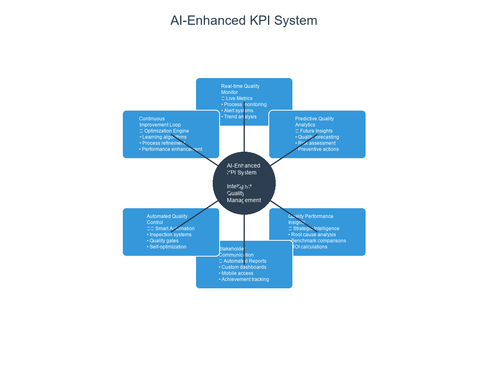
Figure 7.2: AI-Enhanced KPI System - Intelligent monitoring and optimization of quality performance indicators
| Innovation Area | AI Capabilities | Innovation Opportunities | Competitive Advantage |
|---|---|---|---|
| Predictive Quality Design | • Machine learning for quality prediction • Computer vision for design validation • Simulation and modeling • Automated design optimization |
• Design quality from the start • Reduce design iterations • Optimize for manufacturability • Predict customer satisfaction |
Faster time-to-market with higher quality |
| Intelligent Quality Automation | • Automated quality inspection • Intelligent quality control systems • Self-optimizing processes • Automated quality reporting |
• 24/7 quality monitoring • Consistent quality standards • Reduced human error • Continuous improvement |
Superior quality consistency and efficiency |
| Customer-Centric Quality | • Sentiment analysis • Behavioral pattern recognition • Predictive customer needs • Personalized quality experiences |
• Anticipate customer preferences • Customize quality standards • Proactive quality improvements • Enhanced customer loyalty |
Higher customer satisfaction and retention |
| Quality Ecosystem Integration | • Supply chain quality integration • Partner quality collaboration • End-to-end quality visibility • Integrated quality platforms |
• Seamless quality across partners • Collaborative quality improvement • Holistic quality management • Ecosystem-wide optimization |
Integrated quality excellence across value chain |
Quality Innovation Roadmap
Organizations can systematically develop AI-driven quality innovation capabilities through a structured roadmap that builds foundational capabilities while pursuing innovative opportunities.
| Phase | Duration | Key Activities | Innovation Outcomes | Success Metrics |
|---|---|---|---|---|
| Foundation Building | 6-12 months | • Establish AI quality infrastructure • Develop quality data capabilities • Train quality teams on AI • Implement basic AI quality tools |
• Basic AI quality monitoring • Automated quality reporting • Initial quality insights • Quality process digitization |
• 50% reduction in manual quality tasks • 30% improvement in quality response time • 95% data quality accuracy |
| Intelligence Development | 12-18 months | • Deploy predictive quality models • Implement intelligent quality automation • Develop quality dashboards • Integrate quality across systems |
• Predictive quality management • Intelligent quality automation • Real-time quality insights • Integrated quality visibility |
• 40% reduction in quality issues • 60% improvement in quality prediction accuracy • 80% automation of quality processes |
| Innovation Acceleration | 18-24 months | • Develop advanced quality AI models • Implement quality innovation labs • Create quality ecosystem partnerships • Launch quality innovation initiatives |
• Advanced quality AI capabilities • Quality innovation culture • Ecosystem quality integration • Market-leading quality innovations |
• 25% improvement in customer satisfaction • 50% reduction in quality costs • 3+ quality innovation breakthroughs |
| Transformation Leadership | 24+ months | • Lead industry quality standards • Share quality innovations • Develop quality thought leadership • Create quality ecosystem value |
• Industry quality leadership • Quality innovation influence • Quality ecosystem leadership • Sustainable quality advantage |
• Industry recognition for quality innovation • Quality thought leadership position • Ecosystem quality value creation |
Conclusion
AI-enhanced TQM represents the evolution of quality management. By integrating artificial intelligence with traditional TQM principles, organizations can achieve unprecedented levels of quality, efficiency, and customer satisfaction.
The key to success lies in understanding that AI is not a replacement for TQM but an amplifier of its capabilities. Organizations that successfully integrate AI into their quality management processes will be better positioned to compete in an increasingly complex and demanding business environment.
The future of quality management is intelligent, predictive, and continuously improving. Organizations that embrace AI-enhanced TQM will be the ones that thrive in the AI era.
Chapter 8: AI-Powered Customer Satisfaction and Experience
Delivering Exceptional Customer Experiences
“The customer experience is the next competitive battleground. AI is our most powerful weapon in this war.”
– Adapted from Jerry Gregoire
Chapter Overview
This chapter explores how AI transforms customer satisfaction from a reactive, survey-based approach to a proactive, intelligent system that anticipates customer needs and delivers personalized experiences. We examine how AI enhances every aspect of customer interaction, from initial contact to post-purchase support.
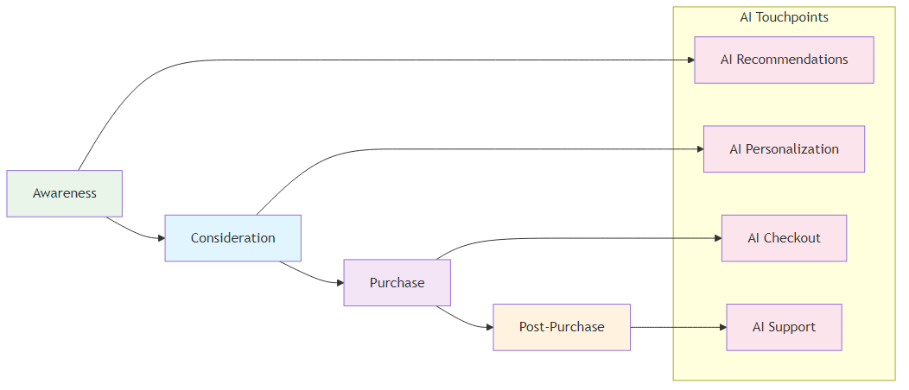
Figure 8.1: AI-Enhanced Customer Journey - How AI transforms each stage of the customer experience
The Evolution of Customer Satisfaction Measurement
Customer satisfaction has evolved significantly from simple surveys to sophisticated, AI-powered systems that provide real-time insights and predictive capabilities.
| Measurement Aspect | Traditional Approach | AI-Enhanced Approach | Business Impact |
|---|---|---|---|
| Survey-Based Measurement | • Periodic customer satisfaction surveys • Limited response rates and sample sizes • Delayed feedback and analysis • Subjective interpretation of results |
• Continuous monitoring of customer interactions • Real-time sentiment analysis • Immediate identification of issues • Proactive problem resolution |
Enables real-time customer satisfaction monitoring and immediate response |
| Problem Resolution | • Customer issues addressed after they occur • Limited proactive problem prevention • Slow response times to customer concerns • Inefficient resource allocation |
• Anticipating customer needs and preferences • Predicting potential customer issues • Forecasting customer satisfaction trends • Proactive customer experience optimization |
Transforms reactive service into proactive customer experience management |
| Analytics & Personalization | • Simple statistical analysis of survey data • Limited correlation analysis • Manual reporting and documentation • Inefficient knowledge management |
• Personalized customer experiences • Dynamic content and recommendations • Adaptive customer service • Continuous learning and improvement |
Delivers personalized experiences that continuously improve customer satisfaction |
AI Technologies in Customer Satisfaction
Natural Language Processing (NLP)
NLP enables organizations to understand and analyze customer feedback at scale, providing insights that were previously impossible to obtain.
-
Understanding customer emotions and satisfaction levels -
Identifying key themes and issues in customer feedback -
Understanding customer intentions and needs -
Creating personalized responses to customer inquiries
Implementation Example: Customer Service Platform A customer service platform used NLP to analyze thousands of customer support tickets daily. The system identified common issues, sentiment trends, and emerging problems, enabling proactive customer service and reducing response times by 60%.
Machine Learning for Customer Analytics
Machine learning algorithms analyze customer behavior patterns to predict satisfaction and identify opportunities for improvement.
-
Identifying distinct customer groups with different needs -
Anticipating when customers might leave -
Forecasting customer satisfaction scores -
Suggesting products and services based on customer preferences
Implementation Example: E-commerce Platform An e-commerce platform used machine learning to analyze customer behavior and predict satisfaction levels. The system identified customers at risk of dissatisfaction and automatically triggered interventions, improving overall customer satisfaction by 25%.
Computer Vision for Customer Experience
Computer vision enhances customer experience by providing visual insights and automated quality control.
| Application Area | Description | Business Impact |
|---|---|---|
| Visual Quality Control | Ensuring product quality meets customer expectations through automated visual inspection | Maintains consistent product quality and reduces customer complaints |
| Customer Behavior Analysis | Understanding how customers interact with products through visual monitoring | Provides insights for product improvement and customer experience optimization |
| Automated Inspections | Ensuring consistent product quality through automated visual inspections | Reduces human error and improves inspection efficiency |
| Visual Feedback Analysis | Analyzing visual customer feedback from images and videos | Enables comprehensive understanding of customer sentiment and preferences |
Implementation Example: Retail Chain A retail chain implemented computer vision systems to monitor store conditions and customer interactions. The system automatically identified issues that could affect customer satisfaction and alerted management for immediate action.
AI-Enhanced Customer Journey Mapping
| Journey Mapping Aspect | Traditional Approach | AI-Enhanced Approach | Business Impact |
|---|---|---|---|
| Process & Scope | • Time-consuming manual mapping exercises • Limited data-driven insights • Static journey maps • Focus on major touchpoints only |
• Dynamic customer journey maps that update in real-time • Continuous monitoring of customer interactions • Analysis of all customer touchpoints • Identification of hidden pain points |
Provides comprehensive, real-time understanding of customer experience |
| Optimization & Monitoring | • Inefficient optimization processes • Limited real-time monitoring • Reactive optimization • Inefficient resource allocation |
• Immediate identification of journey issues • Proactive journey optimization • Predictive journey optimization • Intelligent resource allocation |
Enables proactive optimization and efficient resource utilization |
Figure 8.1: AI-Enhanced Customer Journey - Mapping the customer experience with AI touchpoints throughout the journey
Implementation Example: Financial Services Company A financial services company used AI to create dynamic customer journey maps that updated in real-time based on customer interactions. The system identified specific pain points in the customer journey and automatically suggested improvements, resulting in a 30% improvement in customer satisfaction.
Predictive Customer Satisfaction
| Satisfaction Aspect | Traditional Approach | AI-Enhanced Approach | Business Impact |
|---|---|---|---|
| Measurement Approach | • Satisfaction measured after customer interactions • Limited predictive capabilities • Slow response to satisfaction issues • Inefficient resource allocation |
• Predicting customer satisfaction before issues occur • Anticipating customer needs and preferences • Proactive problem prevention • Optimized resource allocation |
Transforms reactive satisfaction management into proactive customer experience optimization |
| Analytics & Monitoring | • Simple statistical analysis • Limited correlation analysis • Manual reporting and documentation • Inefficient knowledge management |
• Machine learning for pattern recognition • Predictive modeling for satisfaction forecasting • Real-time performance monitoring • Comprehensive data analysis |
Enables data-driven decision making and continuous optimization |
Implementation Example: Telecommunications Company A telecommunications company implemented AI-powered predictive satisfaction systems that analyzed customer behavior patterns to predict satisfaction levels. The system identified customers at risk of dissatisfaction and automatically triggered interventions, improving overall customer satisfaction by 40%.
Case Studies in AI-Enhanced Customer Satisfaction
| Company | Challenge | AI Solution | Results | Key Success Factors |
|---|---|---|---|---|
| Amazon Customer Experience |
Provide personalized customer experiences at scale while maintaining high customer satisfaction | Implemented AI-powered recommendation systems and customer service automation that provided personalized experiences based on customer behavior and preferences | • 35% improvement in customer satisfaction • Enhanced personalization capabilities • Improved customer retention • Increased customer lifetime value |
• Comprehensive data collection and analysis • Advanced AI algorithms • Continuous learning and improvement • Strong customer focus |
| Netflix Content Recommendation |
Provide personalized content recommendations to improve customer satisfaction and retention | Implemented AI-powered recommendation systems that analyzed customer viewing patterns to provide personalized content suggestions | • 25% improvement in customer satisfaction • Enhanced content discovery • Improved customer retention • Increased viewing time |
• Advanced machine learning algorithms • Comprehensive data analysis • Continuous model improvement • Strong focus on user experience |
Implementation Framework for AI-Enhanced Customer Satisfaction
| Phase & Timeline | Key Activities | Deliverables |
|---|---|---|
| Phase 1: Assessment and Planning (Months 1-3) | • Current customer satisfaction maturity assessment • AI readiness evaluation • Data quality and availability assessment • Stakeholder alignment and training |
• Maturity assessment report • AI readiness plan • Data improvement roadmap • Training and development plan |
| Phase 2: Pilot Implementation (Months 4-6) | • Pilot process selection • AI tool selection and implementation • Data collection and preparation • Pilot execution and measurement |
• Working pilot system • Performance metrics and results • Lessons learned documentation • Scalability assessment |
| Phase 3: Scaling and Integration (Months 7-12) | • System scaling across multiple processes • Integration with existing customer satisfaction systems • Process standardization • Change management implementation |
• Integrated AI-customer satisfaction system • Standardized processes and procedures • Performance monitoring dashboards • Customer experience optimization framework |
| Phase 4: Optimization and Innovation (Months 13-18) | • Advanced AI feature implementation • Innovation exploration • Competitive advantage development • Continuous optimization |
• Advanced AI capabilities • Innovation roadmap • Competitive advantage framework • Optimization strategy |
Best Practices for AI-Enhanced Customer Satisfaction
| Practice Area | Key Requirements | Implementation Guidelines |
|---|---|---|
| Data Management | • Data Quality: Ensure high-quality, clean, and relevant customer data • Data Governance: Implement robust data governance frameworks • Real-time Data: Enable real-time data collection and processing • Data Integration: Integrate data from multiple customer touchpoints |
Establish comprehensive data management policies and ensure seamless data flow across all customer touchpoints |
| Technology Selection | • Scalability: Choose scalable AI solutions that can grow with your organization • Integration: Ensure compatibility with existing customer systems • User-Friendliness: Select tools that are easy to use and understand • Vendor Support: Evaluate vendor support and expertise |
Conduct thorough evaluation and pilot testing to ensure technology alignment with customer satisfaction goals |
| Change Management | • Stakeholder Engagement: Engage all stakeholders in the transformation • Training and Education: Provide comprehensive training on AI-enhanced customer satisfaction • Communication: Maintain clear and consistent communication • Cultural Change: Build a culture that embraces AI-enhanced customer experience |
Develop comprehensive change management strategy with clear communication and training programs |
| Performance Monitoring | • Key Metrics: Define and track key customer satisfaction indicators • Continuous Improvement: Implement continuous improvement processes • Feedback Loops: Establish feedback mechanisms for ongoing optimization • Benchmarking: Compare performance against industry standards |
Implement real-time monitoring dashboards and establish regular review cycles for continuous optimization |
Compare performance against industry standards
Future Trends in AI-Enhanced Customer Satisfaction
| Trend Category | Key Capabilities | Business Impact |
|---|---|---|
| Autonomous Customer Experience | • Self-Optimizing Customer Systems: Customer systems that continuously improve themselves • Intelligent Automation: Automated customer experience processes • Predictive Customer Experience: Anticipating and preventing customer issues • Adaptive Customer Systems: Customer systems that adapt to changing conditions |
Enables fully autonomous customer experience management with minimal human intervention |
| Integration with Advanced Analytics | • Prescriptive Analytics: Providing specific recommendations for customer experience improvement • Predictive Analytics: Forecasting future customer satisfaction and behavior • Real-time Analytics: Immediate analysis and decision-making • Advanced Visualization: Enhanced data visualization and reporting |
Transforms customer data into actionable insights for strategic decision-making |
| AI-Powered Personalization | • Intelligent Personalization: AI-powered personalized customer experiences • Dynamic Content: Content that adapts to customer preferences • Adaptive Interfaces: User interfaces that adapt to customer needs • Continuous Learning: Systems that learn and improve from customer interactions |
Delivers highly personalized experiences that continuously evolve with customer preferences |
Conclusion
AI-enhanced customer satisfaction represents the evolution of customer experience management. By integrating artificial intelligence with traditional customer satisfaction approaches, organizations can achieve unprecedented levels of customer satisfaction, loyalty, and competitive advantage.
The key to success lies in understanding that AI is not a replacement for customer focus but an amplifier of customer experience capabilities. Organizations that successfully integrate AI into their customer satisfaction processes will be better positioned to compete in an increasingly complex and demanding business environment.
The future of customer experience is intelligent, predictive, and continuously improving. Organizations that embrace AI-enhanced customer satisfaction will be the ones that thrive in the AI era.
Chapter 9: AI in Software Development Lifecycle
Accelerating Development with Intelligent Automation
“Software is eating the world, and AI is the chef. The future belongs to those who can harness both.”
– Adapted from Marc AndreessenChapter Overview
This chapter explores how AI is transforming the software development lifecycle (SDLC) from a manual, error-prone process to an intelligent, automated system. We examine how AI enhances every phase of software development, from requirements gathering to deployment and maintenance.
The Evolution of Software Development
Software development has evolved significantly from traditional waterfall methodologies to agile and DevOps approaches. AI is now transforming it into an intelligent, automated process that can predict issues, optimize performance, and continuously improve.
Traditional Software Development Challenges
Challenge Category Specific Issues Business Impact Manual Processes • Time-consuming manual coding and testing
• Human error in code development
• Limited automated testing capabilities
• Slow deployment and release cyclesExtended development timelines and higher costs Quality Issues • High defect rates in production
• Limited code quality assessment
• Inefficient bug detection and fixing
• Poor performance optimizationCustomer dissatisfaction and maintenance overhead Resource Constraints • Limited developer productivity
• High development costs
• Slow time-to-market
• Inefficient resource allocationCompetitive disadvantage and missed opportunities AI-Enhanced Software Development
AI Enhancement Area Capabilities Benefits Intelligent Automation • Automated code generation and testing
• AI-powered code review and optimization
• Intelligent deployment and monitoring
• Continuous learning and improvementFaster development cycles and reduced manual effort Advanced Quality Control • Predictive defect detection
• Automated code quality assessment
• Intelligent bug fixing and optimization
• Proactive performance monitoringHigher code quality and fewer production issues Enhanced Productivity • Increased developer productivity
• Reduced development costs
• Faster time-to-market
• Optimized resource allocationCompetitive advantage and cost efficiency AI Technologies in Software Development
Problem Area Traditional Approach AI-Enhanced Approach Code Quality & Defects • Manual code reviews and quality checks
• Reactive defect detection after issues occur
• Limited performance analysis
• Time-consuming manual processes• Machine learning algorithms analyze code patterns for quality assessment
• Predictive defect identification before issues occur
• Automated performance optimization suggestions
• AI-powered code review automationRequirements Management • Manual requirements analysis and documentation
• Time-consuming requirements-to-code translation
• Manual test case creation
• Inconsistent requirements validation• NLP converts natural language requirements into technical specifications
• Automated test case generation from requirements
• AI-generated technical documentation
• Automated requirements validation and consistency checksUI/UX Testing • Manual visual testing and validation
• Limited cross-platform testing coverage
• Manual accessibility compliance checks
• Subjective user experience evaluation• Computer vision enables automated visual testing for consistency
• Automated cross-platform testing across devices
• AI-powered accessibility compliance verification
• Automated user experience analysis and optimizationDevelopment Efficiency • Manual development processes
• Limited automation capabilities
• Reactive problem-solving
• Inconsistent development practices• AI-powered development automation
• Intelligent code generation and optimization
• Predictive problem identification
• Automated best practice enforcementImplementation Examples:
- Software Development Company: Implemented AI-powered code analysis tools that automatically reviewed code for quality issues and potential defects, reducing defect rates by 40% and improving code quality significantly.
- Financial Services Company: Used NLP to convert business requirements into technical specifications and automated test cases, reducing requirements analysis time by 60% and improving translation accuracy.
- Mobile App Development Company: Implemented computer vision systems for automated UI testing across different devices and platforms, reducing testing time by 70% and improving test coverage.
AI-Enhanced SDLC Phases
Requirements Gathering and Analysis
AI transforms requirements gathering from a manual, error-prone process to an intelligent, automated system.
Approach Key Characteristics Implementation Example Traditional Approach • Manual requirements collection and analysis
• Limited stakeholder input and feedback
• Subjective requirements interpretation
• Inefficient requirements validationTime-consuming manual processes with high potential for errors and miscommunication AI-Enhanced Approach • Automated Requirements Collection: AI tools automatically collect and analyze requirements from multiple sources
• Stakeholder Feedback Analysis: NLP analyzes stakeholder feedback and identifies key requirements
• Requirements Validation: AI validates requirements completeness and consistency
• Requirements Optimization: AI suggests optimizations and improvements to requirementsEnterprise Software Company: Used AI to automate requirements gathering and analysis. The system collected requirements from multiple sources, analyzed stakeholder feedback, and automatically generated technical specifications, reducing requirements gathering time by 50% Design and Architecture
AI enhances software design and architecture by providing intelligent recommendations and automated optimization.
Approach Key Characteristics Implementation Example Traditional Approach • Manual design and architecture decisions
• Limited optimization capabilities
• Subjective design choices
• Inefficient architecture validationTime-consuming manual processes with limited optimization and validation capabilities AI-Enhanced Approach • Intelligent Design Recommendations: AI suggests optimal design patterns and architectures
• Automated Architecture Validation: AI validates architecture decisions and identifies potential issues
• Performance Optimization: AI suggests performance optimizations and improvements
• Scalability Analysis: AI analyzes architecture scalability and suggests improvementsCloud Computing Company: Used AI to optimize software architecture design. The system analyzed performance requirements and automatically suggested optimal architecture patterns, resulting in 30% improvement in application performance Development and Coding
AI transforms software development by providing intelligent coding assistance and automated code generation.
Approach Key Characteristics Implementation Example Traditional Approach • Manual coding and development
• Limited automated assistance
• High potential for human error
• Inefficient code optimizationTime-consuming manual coding with limited assistance and high error potential AI-Enhanced Approach • Intelligent Code Generation: AI generates code based on requirements and specifications
• Code Review Automation: AI automatically reviews code for quality issues and potential defects
• Performance Optimization: AI suggests code optimizations and improvements
• Best Practice Enforcement: AI enforces coding standards and best practicesSoftware Development Team: Implemented AI-powered coding assistance tools that provided intelligent code suggestions and automated code review. This increased developer productivity by 25% and improved code quality significantly Testing and Quality Assurance
AI enhances testing and quality assurance by providing intelligent, automated testing capabilities.
Approach Key Characteristics Implementation Example Traditional Approach • Manual testing processes
• Limited test coverage
• High testing costs
• Slow test executionTime-consuming manual testing with limited coverage and high costs AI-Enhanced Approach • Automated Test Generation: AI automatically generates test cases based on requirements and code
• Intelligent Test Execution: AI optimizes test execution and identifies critical test paths
• Predictive Defect Detection: AI predicts potential defects and focuses testing efforts
• Continuous Testing: AI provides continuous testing and monitoring capabilitiesE-commerce Platform: Implemented AI-powered testing systems that automatically generated and executed test cases. The system improved test coverage by 60% and reduced testing time by 40% Deployment and Operations
AI transforms deployment and operations by providing intelligent, automated deployment and monitoring capabilities.
Approach Key Characteristics Implementation Example Traditional Approach • Manual deployment processes
• Limited monitoring capabilities
• Reactive problem resolution
• Inefficient resource allocationManual deployment with limited monitoring and reactive problem-solving AI-Enhanced Approach • Intelligent Deployment: AI optimizes deployment strategies and reduces deployment risks
• Automated Monitoring: AI provides continuous monitoring and alerting capabilities
• Predictive Operations: AI predicts potential issues and proactively addresses them
• Resource Optimization: AI optimizes resource allocation and utilizationFinancial Services Company: Implemented AI-powered deployment and operations systems that provided intelligent deployment strategies and automated monitoring. This reduced deployment time by 50% and improved system reliability significantly Case Studies in AI-Enhanced Software Development
Company Challenge & Solution Results & Success Factors Microsoft
AI-Powered Development ToolsChallenge:
Improve developer productivity and code quality across development teams
Solution:
Implemented AI-powered development tools including GitHub Copilot and Visual Studio IntelliCode that provided intelligent code suggestions and automated code reviewResults:
• 30% improvement in developer productivity
• Enhanced code quality and consistency
• Reduced development time
• Improved developer satisfaction
Key Success Factors:
• Advanced AI algorithms
• Comprehensive training data
• Continuous learning and improvement
• Strong developer adoption
AI-Enhanced TestingChallenge:
Improve testing efficiency and coverage for large-scale applications
Solution:
Implemented AI-powered testing systems that automatically generated and executed test cases, providing comprehensive test coverage and intelligent test optimizationResults:
• 50% improvement in test coverage
• Reduced testing time by 40%
• Enhanced test quality and reliability
• Improved application stability
Key Success Factors:
• Comprehensive test data collection
• Advanced AI algorithms
• Continuous model improvement
• Strong integration with development processesImplementation Framework for AI-Enhanced Software Development
Phase & Timeline Key Activities Deliverables Phase 1: Assessment and Planning (Months 1-3) • Current SDLC maturity assessment
• AI readiness evaluation
• Data quality and availability assessment
• Stakeholder alignment and training• Maturity assessment report
• AI readiness plan
• Data improvement roadmap
• Training and development planPhase 2: Pilot Implementation (Months 4-6) • Pilot process selection
• AI tool selection and implementation
• Data collection and preparation
• Pilot execution and measurement• Working pilot system
• Performance metrics and results
• Lessons learned documentation
• Scalability assessmentPhase 3: Scaling and Integration (Months 7-12) • System scaling across multiple processes
• Integration with existing SDLC systems
• Process standardization
• Change management implementation• Integrated AI-SDLC system
• Standardized processes and procedures
• Performance monitoring dashboards
• Development optimization frameworkPhase 4: Optimization and Innovation (Months 13-18) • Advanced AI feature implementation
• Innovation exploration
• Competitive advantage development
• Continuous optimization• Advanced AI capabilities
• Innovation roadmap
• Competitive advantage framework
• Optimization strategyBest Practices for AI-Enhanced Software Development
Practice Area Key Requirements Implementation Guidelines Data Management • Data Quality: Ensure high-quality, clean, and relevant development data
• Data Governance: Implement robust data governance frameworks
• Real-time Data: Enable real-time data collection and processing
• Data Integration: Integrate data from multiple development sourcesEstablish comprehensive data management policies and ensure seamless data flow across all development processes Technology Selection • Scalability: Choose scalable AI solutions that can grow with your organization
• Integration: Ensure compatibility with existing development tools and processes
• User-Friendliness: Select tools that are easy to use and understand
• Vendor Support: Evaluate vendor support and expertiseConduct thorough evaluation and pilot testing to ensure technology alignment with development goals Change Management • Stakeholder Engagement: Engage all stakeholders in the transformation
• Training and Education: Provide comprehensive training on AI-enhanced development
• Communication: Maintain clear and consistent communication
• Cultural Change: Build a culture that embraces AI-enhanced developmentDevelop comprehensive change management strategy with clear communication and training programs Performance Monitoring • Key Metrics: Define and track key development performance indicators
• Continuous Improvement: Implement continuous improvement processes
• Feedback Loops: Establish feedback mechanisms for ongoing optimization
• Benchmarking: Compare performance against industry standardsImplement real-time monitoring dashboards and establish regular review cycles for continuous optimization Future Trends in AI-Enhanced Software Development
Trend Category Key Capabilities Business Impact Autonomous Software Development • Self-Optimizing Development: Development processes that continuously improve themselves
• Intelligent Automation: Automated development processes
• Predictive Development: Anticipating and preventing development issues
• Adaptive Development: Development processes that adapt to changing requirementsEnables fully autonomous software development with minimal human intervention Integration with Advanced Analytics • Prescriptive Analytics: Providing specific recommendations for development improvement
• Predictive Analytics: Forecasting future development performance and issues
• Real-time Analytics: Immediate analysis and decision-making
• Advanced Visualization: Enhanced data visualization and reportingTransforms development data into actionable insights for strategic decision-making AI-Powered Development Tools • Intelligent IDEs: AI-powered integrated development environments
• Automated Code Generation: Advanced code generation capabilities
• Intelligent Testing: AI-powered testing and quality assurance
• Continuous Learning: Development tools that learn and improve from usageDelivers highly intelligent development tools that continuously evolve with usage patterns Conclusion
AI-enhanced software development represents the evolution of software engineering. By integrating artificial intelligence with traditional software development methodologies, organizations can achieve unprecedented levels of productivity, quality, and innovation.
The key to success lies in understanding that AI is not a replacement for human developers but an amplifier of development capabilities. Organizations that successfully integrate AI into their software development processes will be better positioned to compete in an increasingly complex and demanding business environment.
The future of software development is intelligent, automated, and continuously improving. Organizations that embrace AI-enhanced software development will be the ones that thrive in the AI era.
Chapter 10: Leadership in the AI Era
Leading Organizations Through AI Transformation
“The best leaders are those who can adapt to change, embrace innovation, and guide their organizations through transformation. In the AI era, this has never been more important.”
– Adapted from John C. MaxwellChapter Overview
This chapter explores the critical role of leadership in AI transformation and how leaders must adapt their skills, strategies, and mindsets to successfully guide their organizations through the AI revolution. We examine the key leadership competencies needed in the AI era and provide practical guidance for developing AI-ready leadership capabilities.
The Leadership Challenge in the AI Era
The AI revolution presents unprecedented challenges and opportunities for leaders. Traditional leadership approaches that worked in the past may not be sufficient to navigate the complex, rapidly changing landscape of AI transformation.
Traditional Leadership Limitations
Leadership Limitation Characteristics Impact Command and Control • Top-down decision-making processes
• Limited input from diverse perspectives
• Slow response to changing conditions
• Inefficient resource allocationCreates rigid organizational structures that cannot adapt quickly to AI-driven changes Reactive Management • Responding to issues after they occur
• Limited predictive capabilities
• Inefficient problem-solving approaches
• Poor strategic planningResults in missed opportunities and inability to leverage AI for proactive decision-making Limited Technology Understanding • Limited understanding of AI capabilities
• Inability to make informed technology decisions
• Poor technology investment strategies
• Inefficient technology adoptionLeads to poor AI implementation decisions and missed competitive advantages AI-Era Leadership Requirements
Leadership Requirement Key Elements Business Impact Adaptive Leadership • Flexible and responsive leadership approaches
• Ability to adapt to rapidly changing conditions
• Continuous learning and development
• Strategic agility and resilienceEnables organizations to quickly respond to AI-driven market changes and opportunities Data-Driven Decision Making • Evidence-based decision-making processes
• Understanding of AI capabilities and limitations
• Ability to interpret and act on data insights
• Strategic use of analytics and AIImproves decision quality and enables faster, more accurate strategic choices Technology Fluency • Understanding of AI technologies and applications
• Ability to make informed technology decisions
• Strategic technology investment and adoption
• Effective technology governanceEnsures optimal AI technology investments and effective implementation strategies Key Leadership Competencies for the AI Era
Strategic Vision and AI Literacy
Leaders must develop a clear strategic vision for AI transformation and understand how AI can create value for their organizations.
Competency Area Key Elements Implementation Focus Strategic Vision • AI Strategy Development: Creating comprehensive AI strategies aligned with business objectives
• Value Proposition: Understanding how AI creates value for customers and stakeholders
• Competitive Positioning: Using AI to create sustainable competitive advantages
• Future Planning: Anticipating and planning for AI-driven changesDeveloping long-term AI roadmaps that align with organizational goals and market opportunities AI Literacy • Technology Understanding: Understanding AI technologies and their capabilities
• Application Knowledge: Knowing how AI can be applied in different business contexts
• Limitation Awareness: Understanding AI limitations and potential risks
• Ethical Considerations: Considering ethical implications of AI applicationsBuilding foundational knowledge to make informed AI decisions and guide ethical implementation Implementation Example: CEO Transformation A CEO of a traditional manufacturing company transformed his leadership approach by developing AI literacy and creating a comprehensive AI strategy. He personally led the AI transformation initiative, resulting in 40% improvement in operational efficiency and enhanced competitive positioning.
Change Management and Cultural Transformation
AI transformation requires significant organizational change and cultural transformation. Leaders must be skilled change managers who can guide their organizations through complex transformations.
Transformation Area Key Elements Implementation Focus Change Management • Stakeholder Engagement: Engaging all stakeholders in the transformation process
• Communication: Clear and consistent communication about AI transformation
• Training and Development: Providing comprehensive training and development programs
• Resistance Management: Addressing and managing resistance to changeEnsuring smooth transition and organizational buy-in for AI initiatives Cultural Transformation • Innovation Culture: Building a culture that embraces innovation and experimentation
• Learning Organization: Creating an organization that continuously learns and adapts
• Collaboration: Fostering collaboration between humans and AI systems
• Risk Tolerance: Developing tolerance for calculated risks and experimentationCreating an environment that supports and sustains AI-driven innovation Implementation Example: Cultural Transformation A retail company’s leadership team successfully transformed the organizational culture to embrace AI. They implemented comprehensive training programs, created innovation labs, and fostered a culture of experimentation, resulting in successful AI adoption across the organization.
Data-Driven Decision Making
Leaders must develop the ability to make data-driven decisions and use AI insights to inform strategic choices.
Decision-Making Component Key Elements Business Impact Data Literacy • Data Understanding: Understanding data types, sources, and quality
• Analytics Interpretation: Ability to interpret analytics and AI insights
• Statistical Knowledge: Basic understanding of statistics and probability
• Bias Recognition: Recognizing and addressing data and AI biasesEnables leaders to make informed decisions based on reliable data insights Decision-Making Process • Evidence-Based Decisions: Making decisions based on data and evidence
• AI-Augmented Decision Making: Using AI to enhance decision-making processes
• Risk Assessment: Assessing risks and uncertainties in decision-making
• Continuous Learning: Learning from decisions and improving over timeImproves decision quality and reduces uncertainty in strategic choices Implementation Example: Data-Driven Leadership A financial services company’s leadership team implemented data-driven decision-making processes. They used AI analytics to inform strategic decisions, resulting in improved performance and better resource allocation.
Technology Governance and Ethics
Leaders must establish effective governance frameworks for AI technologies and ensure ethical AI use.
Governance Area Key Elements Implementation Focus Technology Governance • AI Governance Framework: Establishing comprehensive AI governance frameworks
• Risk Management: Managing AI-related risks and uncertainties
• Compliance: Ensuring compliance with relevant regulations and standards
• Performance Monitoring: Monitoring AI system performance and impactCreating structured frameworks for responsible AI implementation and oversight Ethical Leadership • Ethical AI Use: Ensuring ethical use of AI technologies
• Bias Mitigation: Addressing and mitigating AI biases
• Transparency: Promoting transparency in AI decision-making
• Accountability: Ensuring accountability for AI system outcomesBuilding trust and ensuring responsible AI deployment across the organization Implementation Example: Ethical AI Leadership A healthcare organization’s leadership team established comprehensive AI governance and ethics frameworks. They ensured ethical AI use in patient care, resulting in improved patient outcomes and enhanced trust.
Leadership Development for the AI Era
Continuous Learning and Development
Leaders must commit to continuous learning and development to stay current with AI technologies and trends.
Development Component Key Elements Implementation Focus Learning Strategies • Formal Education: Participating in formal AI education and training programs
• Experiential Learning: Learning through hands-on experience with AI technologies
• Networking: Building networks with AI experts and practitioners
• Mentoring: Seeking mentorship from AI-savvy leadersCreating comprehensive learning pathways for AI leadership development Development Areas • Technical Skills: Developing basic technical understanding of AI
• Strategic Thinking: Enhancing strategic thinking and planning capabilities
• Change Management: Improving change management and leadership skills
• Innovation Management: Developing innovation management capabilitiesBuilding essential competencies for effective AI leadership Implementation Example: Leadership Development A technology company’s leadership team implemented comprehensive AI leadership development programs. They provided training, mentoring, and hands-on experience with AI technologies, resulting in enhanced leadership capabilities and successful AI transformation.
Building AI-Ready Teams
Leaders must build teams that are ready to work with AI technologies and drive AI transformation.
Team Building Component Key Elements Implementation Focus Team Development • Skills Assessment: Assessing current team skills and identifying gaps
• Training Programs: Implementing comprehensive training and development programs
• Recruitment: Recruiting talent with AI skills and capabilities
• Retention: Retaining and developing AI talentBuilding the human capital necessary for successful AI implementation Team Structure • Cross-Functional Teams: Building cross-functional teams that include AI expertise
• Collaboration: Fostering collaboration between technical and business teams
• Innovation Teams: Creating dedicated innovation teams for AI initiatives
• Change Agents: Identifying and developing change agents within the organizationCreating organizational structures that support AI innovation and adoption Implementation Example: Team Building A manufacturing company’s leadership team built AI-ready teams by implementing comprehensive training programs, recruiting AI talent, and creating cross-functional innovation teams. This resulted in successful AI implementation and improved operational performance.
Case Studies in AI Leadership
Leader & Company Challenge Leadership Approach Results Key Success Factors Satya Nadella
MicrosoftTransform from traditional software company to AI-first organization • Clear Vision: Established clear vision for AI transformation
• Cultural Change: Transformed organizational culture to embrace AI
• Investment Strategy: Made significant investments in AI research and development
• Partnership Strategy: Built strategic partnerships with AI leaders• Successful transformation to AI-first organization
• Enhanced competitive positioning
• Improved financial performance
• Enhanced innovation capabilities• Strong leadership commitment
• Clear strategic vision
• Cultural transformation
• Significant investment in AIJeff Bezos
AmazonMaintain position as technology leader while expanding into new markets • Customer Focus: Maintained strong focus on customer experience
• Innovation Culture: Fostered culture of continuous innovation
• Technology Investment: Made significant investments in AI technologies
• Experimentation: Encouraged experimentation and risk-taking• Maintained market leadership position
• Enhanced customer experience
• Improved operational efficiency
• Successful expansion into new markets• Strong customer focus
• Innovation culture
• Significant technology investment
• Willingness to experimentImplementation Framework for AI Leadership Development
This framework provides a structured approach to developing AI-ready leadership capabilities through four distinct phases, each building upon the previous one to create comprehensive leadership transformation.
Phase Overview:
- Phase 1: Assessment and Planning - Evaluate current capabilities and create development roadmap
- Phase 2: Development and Training - Build foundational AI leadership skills and knowledge
- Phase 3: Application and Practice - Apply skills in real-world AI transformation initiatives
- Phase 4: Optimization and Innovation - Develop advanced capabilities and drive innovation
Phase & Timeline Key Activities Deliverables Phase 1: Assessment and Planning (Months 1-3) • Current leadership capabilities assessment
• AI readiness evaluation
• Skills gap analysis
• Development planning• Leadership assessment report
• AI readiness plan
• Skills development roadmap
• Training and development planPhase 2: Development and Training (Months 4-6) • Leadership training program implementation
• AI education and training
• Hands-on experience with AI technologies
• Mentoring and coaching• Enhanced leadership capabilities
• AI literacy and understanding
• Practical AI experience
• Mentoring relationshipsPhase 3: Application and Practice (Months 7-12) • Application of AI leadership skills
• Leading AI transformation initiatives
• Building AI-ready teams
• Implementing AI governance frameworks• AI transformation leadership experience
• AI-ready teams
• Governance frameworks
• Performance improvementsPhase 4: Optimization and Innovation (Months 13-18) • Advanced AI leadership capabilities
• Innovation leadership
• Competitive advantage development
• Continuous improvement• Advanced leadership capabilities
• Innovation leadership skills
• Competitive advantage framework
• Continuous improvement strategyBest Practices for AI Leadership
Best Practice Category Key Elements Description Continuous Learning • Stay Current: Stay current with AI technologies and trends
• Learn from Others: Learn from other organizations' AI experiences
• Experiment: Experiment with AI technologies and applications
• Share Knowledge: Share knowledge and experiences with othersMaintaining relevance and staying ahead in the rapidly evolving AI landscape Strategic Thinking • Long-term Vision: Develop long-term vision for AI transformation
• Strategic Planning: Create comprehensive strategic plans
• Risk Management: Manage risks and uncertainties effectively
• Performance Monitoring: Monitor performance and adjust strategiesEnsuring AI initiatives align with long-term organizational goals and deliver sustainable value Change Management • Stakeholder Engagement: Engage all stakeholders in transformation
• Communication: Maintain clear and consistent communication
• Training and Development: Provide comprehensive training and developmentManaging organizational change effectively to ensure successful AI adoption Technology Governance • Governance Framework: Establish comprehensive governance frameworks
• Risk Management: Manage technology risks effectively
• Compliance: Ensure compliance with regulations and standards
• Performance Monitoring: Monitor technology performance and impactEnsuring responsible and effective management of AI technologies and systems Future Trends in AI Leadership
Future Trend Category Key Elements Description Autonomous Leadership • AI-Augmented Leadership: AI-augmented leadership decision-making
• Predictive Leadership: Predictive leadership capabilities
• Adaptive Leadership: Adaptive leadership approaches
• Continuous Learning: Continuous learning and improvementLeadership approaches that leverage AI to enhance decision-making and adaptability Integration with Advanced Analytics • Prescriptive Leadership: Prescriptive leadership recommendations
• Predictive Analytics: Predictive leadership analytics
• Real-time Analytics: Real-time leadership insights
• Advanced Visualization: Enhanced leadership dashboardsAdvanced analytics integration providing real-time insights and recommendations for leadership decisions AI-Powered Leadership Development • Personalized Learning: Personalized leadership development
• Intelligent Coaching: AI-powered leadership coaching
• Performance Analytics: Leadership performance analytics
• Continuous Improvement: Continuous leadership improvementAI-driven personalized learning and development programs for leadership growth Conclusion
Leadership in the AI era requires new skills, capabilities, and mindsets. Leaders must develop AI literacy, embrace change management, and build AI-ready organizations to successfully navigate the AI transformation.
The key to success lies in understanding that AI is not a replacement for human leadership but an amplifier of leadership capabilities. Leaders who successfully develop AI leadership competencies will be better positioned to guide their organizations through the AI transformation and achieve sustainable competitive advantages.
The future of leadership is intelligent, adaptive, and continuously learning. Leaders who embrace AI-enhanced leadership will be the ones who thrive in the AI era.
Chapter 11: Prescriptive Analytics and Future Trends
Predicting and Shaping the Future of Operations
“The future belongs to those who can see beyond the data and prescribe the actions that will create the outcomes we desire.”
– Adapted from Peter Drucker
Chapter Overview
This chapter explores the cutting edge of AI in operational excellence: prescriptive analytics and emerging trends that will shape the future of AI-enhanced operations. We examine how prescriptive analytics goes beyond prediction to provide actionable recommendations, and explore the technologies and trends that will define the next generation of operational excellence.
The Evolution of Analytics: From Descriptive to Prescriptive
Analytics has evolved through several distinct phases, each building upon the capabilities of its predecessor to provide deeper insights and greater value.
Descriptive Analytics: What Happened?
| Analytics Approach | Key Characteristics | Business Impact |
|---|---|---|
| Traditional Approach | • Historical data analysis and reporting • Basic statistical analysis • Manual report generation • Limited real-time capabilities |
Provides historical insights but limited real-time visibility and slow decision-making |
| AI-Enhanced Descriptive Analytics | • Real-time Dashboards: Dynamic dashboards that update in real-time • Automated Reporting: AI-generated reports and insights • Advanced Visualization: Interactive and intelligent data visualization • Pattern Recognition: AI-powered pattern identification and analysis |
Enables real-time visibility and faster, more informed decision-making |
Implementation Example: Manufacturing Company A manufacturing company implemented AI-enhanced descriptive analytics that provided real-time visibility into production performance. The system automaticallygenerated reports and identified patterns in production data, enabling faster decision-making and improved operational efficiency.
Diagnostic Analytics: Why Did It Happen?
| Analytics Approach | Key Characteristics | Business Impact |
|---|---|---|
| Traditional Approach | • Manual root cause analysis • Limited correlation analysis • Subjective interpretation • Slow problem resolution |
Limited ability to quickly identify and understand underlying causes of issues |
| AI-Enhanced Diagnostic Analytics | • Automated Root Cause Analysis: AI-powered identification of root causes • Correlation Analysis: Advanced correlation and causation analysis • Intelligent Insights: AI-generated insights and explanations • Predictive Diagnostics: Anticipating potential issues before they occur |
Enables rapid identification of root causes and proactive issue prevention |
Implementation Example: Healthcare Organization A healthcare organization used AI-enhanced diagnostic analytics to identify the root causes of patient readmissions. The system analyzed multiple data sources and automatically identified patterns and correlations, enabling targeted interventions and improved patient outcomes.
Predictive Analytics: What Will Happen?
| Analytics Approach | Key Characteristics | Business Impact |
|---|---|---|
| Traditional Approach | • Basic forecasting models • Limited prediction accuracy • Manual model development • Static predictions |
Limited ability to accurately forecast future events and trends |
| AI-Enhanced Predictive Analytics | • Machine Learning Models: Advanced machine learning for accurate predictions • Real-time Predictions: Continuous prediction updates based on new data • Multi-variable Analysis: Complex multi-variable prediction models • Continuous Learning: Models that improve over time |
Enables accurate forecasting and proactive planning for future events |
Implementation Example: Financial Services Company A financial services company implemented AI-enhanced predictive analytics to forecast customer churn. The system used machine learning models to predict which customers were likely to leave, enabling proactive retention strategies and reducing churn by 25%.
Prescriptive Analytics: What Should We Do?
| Analytics Approach | Key Characteristics | Business Impact |
|---|---|---|
| Traditional Approach | • Manual recommendation generation • Limited optimization capabilities • Subjective decision-making • Slow implementation |
Limited ability to generate optimal recommendations and implement them quickly |
| AI-Enhanced Prescriptive Analytics | • Intelligent Recommendations: AI-generated actionable recommendations • Optimization Algorithms: Advanced optimization for complex decisions • Automated Decision Making: Automated implementation of recommendations • Continuous Optimization: Continuous improvement of recommendations |
Enables optimal decision-making and automated implementation of recommendations |
Implementation Example: Supply Chain Company A supply chain company implemented AI-enhanced prescriptive analytics to optimize inventory levels and distribution routes. The system provided specific recommendations for inventory adjustments and route optimization, resulting in 30% reduction in costs and improved customer satisfaction.
Key Technologies in Prescriptive Analytics
Machine Learning and Deep Learning
Machine learning and deep learning algorithms form the foundation of prescriptive analytics, enabling complex pattern recognition and optimization.
| Technology Application | Key Capabilities | Business Impact |
|---|---|---|
| Machine Learning & Deep Learning | • Optimization Algorithms: Advanced algorithms for complex optimization problems • Pattern Recognition: Identifying complex patterns in large datasets • Predictive Modeling: Creating accurate predictive models • Continuous Learning: Systems that learn and improve over time |
Enables sophisticated analysis and optimization of complex business processes |
Implementation Example: Retail Chain A retail chain implemented machine learning algorithms for demand forecasting and inventory optimization. The system learned from historical sales data and automatically generated recommendations for inventory levels and pricing strategies, resulting in improved profitability and reduced waste.
Optimization Algorithms
Optimization algorithms are the core of prescriptive analytics, providing specific recommendations for optimal actions.
| Algorithm Type | Key Applications & Capabilities | Business Impact |
|---|---|---|
| Linear Programming | Optimizing resource allocation and scheduling with linear constraints | Maximizes efficiency in resource utilization and operational planning |
| Integer Programming | Optimizing discrete decision variables for whole number solutions | Enables optimal decision-making for discrete choices like equipment selection |
| Stochastic Optimization | Optimizing under uncertainty with probabilistic constraints | Provides robust solutions that account for real-world variability |
| Multi-objective Optimization | Balancing multiple objectives simultaneously using Pareto optimality | Enables balanced decision-making across competing priorities |
Implementation Example: Manufacturing Company A manufacturing company implemented optimization algorithms to optimize production scheduling and resource allocation. The system considered multiple constraints and objectives to generate optimal production plans, resulting in improved efficiency and reduced costs.
Simulation and Modeling
Simulation and modeling technologies enable organizations to test different scenarios and evaluate the impact of potential actions.
| Simulation Type | Key Applications & Capabilities | Business Impact |
|---|---|---|
| Monte Carlo Simulation | Simulating complex scenarios with uncertainty using random sampling | Enables risk assessment and decision-making under uncertainty |
| Agent-based Modeling | Modeling complex systems with multiple interacting agents | Provides insights into emergent behaviors in complex systems |
| System Dynamics | Modeling dynamic systems and feedback loops over time | Enables understanding of long-term system behavior and trends |
| Scenario Analysis | Analyzing different future scenarios and their potential outcomes | Supports strategic planning and contingency preparation |
Implementation Example: Logistics Company A logistics company implemented simulation models to evaluate different distribution strategies. The system simulated various scenarios and provided recommendations for optimal distribution networks, resulting in improved efficiency and reduced costs.
Advanced Applications of Prescriptive Analytics
Supply Chain Optimization
Prescriptive analytics is transforming supply chain management by providing intelligent recommendations for optimization.
| Capability Area | Key Applications & Benefits | Business Impact |
|---|---|---|
| Demand Forecasting | Accurate prediction of future demand using advanced analytics and market intelligence | Reduces stockouts and overstock situations, improving customer satisfaction |
| Inventory Optimization | Optimal inventory levels and locations across the supply chain network | Minimizes carrying costs while maintaining service levels |
| Route Optimization | Optimal transportation routes and schedules considering multiple constraints | Reduces transportation costs and delivery times |
| Supplier Selection | Optimal supplier selection and management based on performance metrics | Ensures reliable supply and optimal cost-quality balance |
Implementation Example: Global Retailer A global retailer implemented prescriptive analytics for supply chain optimization. The system provided specific recommendations for inventory levels, distribution routes, and supplier selection, resulting in 25% reduction in costs and improved customer satisfaction.
Manufacturing Optimization
Prescriptive analytics is revolutionizing manufacturing by providing intelligent recommendations for process optimization.
| Optimization Area | Key Applications & Benefits | Business Impact |
|---|---|---|
| Production Scheduling | Optimal production schedules and sequences considering capacity and demand | Maximizes throughput while minimizing setup times and delays |
| Quality Control | Predictive quality control and defect prevention using real-time monitoring | Reduces defect rates and improves product quality consistency |
| Maintenance Optimization | Predictive maintenance and resource allocation based on equipment condition | Minimizes unplanned downtime and extends equipment life |
| Resource Optimization | Optimal resource allocation and utilization across production lines | Improves overall equipment effectiveness and resource efficiency |
Implementation Example: Automotive Manufacturer An automotive manufacturer implemented prescriptive analytics for manufacturing optimization. The system provided specific recommendations for production scheduling, quality control, and maintenance, resulting in improved efficiency and reduced costs.
Financial Optimization
Prescriptive analytics is transforming financial management by providing intelligent recommendations for financial optimization.
| Optimization Area | Key Applications & Benefits | Business Impact |
|---|---|---|
| Portfolio Optimization | Optimal investment portfolio allocation considering risk and return objectives | Maximizes returns while managing risk within acceptable parameters |
| Risk Management | Predictive risk assessment and mitigation strategies | Reduces financial exposure and improves risk-adjusted returns |
| Cash Flow Optimization | Optimal cash flow management and working capital optimization | Improves liquidity and reduces financing costs |
| Cost Optimization | Optimal cost structure and allocation across business units | Reduces overall costs while maintaining operational effectiveness |
Implementation Example: Investment Firm An investment firm implemented prescriptive analytics for portfolio optimization. The system provided specific recommendations for portfolio allocation and risk management, resulting in improved returns and reduced risk.
Emerging Trends in AI and Operational Excellence
Edge AI and Real-time Processing
Edge AI brings processing power closer to data sources, enabling faster decision-making and reducing latency.
| Edge AI Benefit | Key Capabilities & Applications | Business Impact |
|---|---|---|
| Reduced Latency | Faster response to operational issues with local processing | Enables real-time decision-making and immediate corrective actions |
| Bandwidth Optimization | Reduced data transmission requirements through local processing | Lowers network costs and improves system reliability |
| Real-time Processing | Immediate analysis and decision-making at the data source | Enables proactive operations and faster issue resolution |
| Offline Capability | Continued operation even with network connectivity issues | Ensures operational continuity and system resilience |
Implementation Example: Smart Factory A smart factory implemented Edge AI for real-time quality control. The system processed data locally and made immediate decisions about product quality, reducing latency and improving response times.
Explainable AI (XAI)
Explainable AI makes AI decision-making transparent and understandable, enabling trust and adoption.
| XAI Benefit | Key Capabilities & Applications | Business Impact |
|---|---|---|
| Transparency | Making AI decision-making transparent and understandable to stakeholders | Enables informed decision-making and builds confidence in AI recommendations |
| Regulatory Compliance | Meeting regulatory requirements for AI transparency and accountability | Ensures compliance with evolving AI regulations and standards |
| Trust Building | Building trust in AI systems through explainable decision processes | Increases user acceptance and adoption of AI-driven solutions |
| Human Oversight | Enabling human oversight and validation of AI decisions | Maintains human control while leveraging AI capabilities |
Implementation Example: Healthcare Organization A healthcare organization implemented explainable AI for diagnostic assistance. The system provided explanations for its recommendations, enabling doctors to understand and trust the AI system.
Autonomous Systems
Autonomous systems represent the future of operational excellence, with systems that can operate independently and continuously improve.
| Autonomous Capability | Key Features & Applications | Business Impact |
|---|---|---|
| Self-Optimization | Systems that continuously optimize themselves based on performance data | Reduces manual intervention and improves operational efficiency |
| Autonomous Decision Making | Systems that make decisions independently within defined parameters | Enables faster response times and reduces decision-making bottlenecks |
| Continuous Learning | Systems that learn and improve over time through experience | Improves system performance and adapts to changing conditions |
| Adaptive Behavior | Systems that adapt to changing conditions and requirements | Ensures system resilience and maintains optimal performance |
Implementation Example: Smart Grid A smart grid implemented autonomous systems for energy distribution optimization. The system continuously optimized energy distribution and adapted to changing demand patterns, resulting in improved efficiency and reduced costs.
Quantum Computing
Quantum computing represents the next frontier in computational power, enabling complex optimization problems that are currently intractable.
| Quantum Application | Key Capabilities & Benefits | Business Impact |
|---|---|---|
| Complex Optimization | Solving complex optimization problems that are intractable for classical computers | Enables optimization of previously unsolvable problems in logistics, finance, and manufacturing |
| Cryptography | Advanced encryption and security using quantum principles | Provides unprecedented security for sensitive data and communications |
| Simulation | Complex simulation and modeling of quantum systems | Accelerates research in materials science, chemistry, and drug discovery |
| Machine Learning | Advanced machine learning algorithms using quantum computing principles | Enables faster training and more powerful AI models |
Implementation Example: Pharmaceutical Company A pharmaceutical company used quantum computing for drug discovery optimization. The system solved complex molecular optimization problems, accelerating drug discovery and development.
Future Trends and Predictions
AI-Augmented Human Intelligence
The future will see increased collaboration between humans and AI systems, with AI augmenting human capabilities rather than replacing them.
| Trend Area | Key Developments & Applications | Future Impact |
|---|---|---|
| Human-AI Collaboration | Increased collaboration between humans and AI systems in decision-making processes | Combines human intuition with AI analytical power for superior outcomes |
| Augmented Decision Making | AI-augmented human decision-making with real-time insights and recommendations | Enables faster, more informed decisions while maintaining human judgment |
| Enhanced Creativity | AI-enhanced human creativity and innovation through intelligent assistance | Accelerates innovation cycles and enables breakthrough solutions |
| Continuous Learning | AI-powered continuous learning and skill development for humans | Enables lifelong learning and rapid skill acquisition |
Autonomous Organizations
Organizations will become increasingly autonomous, with AI systems managing many operational decisions independently.
| Autonomous Trend | Key Developments & Applications | Future Impact |
|---|---|---|
| Self-Managing Systems | Systems that manage themselves independently with minimal human intervention | Reduces operational overhead and enables 24/7 autonomous operations |
| Autonomous Operations | Operations that run autonomously with self-healing and self-optimizing capabilities | Ensures continuous operations and optimal performance without manual intervention |
| Continuous Optimization | Continuous optimization and improvement of organizational processes | Maintains peak performance and adapts to changing market conditions |
| Adaptive Organizations | Organizations that adapt to changing conditions and requirements autonomously | Enables rapid response to market changes and competitive pressures |
AI Ethics and Governance
As AI becomes more pervasive, ethical considerations and governance will become increasingly important.
| Governance Area | Key Developments & Requirements | Future Impact |
|---|---|---|
| Ethical AI | Ensuring ethical use of AI technologies with fairness and bias mitigation | Builds trust and ensures responsible AI deployment across industries |
| AI Governance | Comprehensive AI governance frameworks with clear policies and procedures | Ensures consistent and responsible AI implementation across organizations |
| Transparency | Ensuring transparency in AI decision-making and algorithmic processes | Enables auditability and builds stakeholder confidence in AI systems |
| Accountability | Ensuring accountability for AI system outcomes and decision impacts | Establishes clear responsibility and liability frameworks for AI systems |
Implementation Framework for Prescriptive Analytics
This framework provides a structured approach to implementing prescriptive analytics capabilities through four distinct phases, each building upon the previous one to create comprehensive analytics transformation.
Phase Overview:
- Phase 1: Assessment and Planning - Evaluate current capabilities and create implementation roadmap
- Phase 2: Pilot Implementation - Test prescriptive analytics on selected processes
- Phase 3: Scaling and Integration - Expand across multiple processes and integrate systems
- Phase 4: Optimization and Innovation - Develop advanced capabilities and drive innovation
| Phase & Timeline | Key Activities | Deliverables |
|---|---|---|
| Phase 1: Assessment and Planning (Months 1-3) | • Current analytics maturity assessment • Prescriptive analytics readiness evaluation • Data quality and availability assessment • Stakeholder alignment and training |
• Analytics maturity assessment report • Prescriptive analytics readiness plan • Data improvement roadmap • Training and development plan |
| Phase 2: Pilot Implementation (Months 4-6) | • Pilot process selection • Prescriptive analytics tool selection and implementation • Data collection and preparation • Pilot execution and measurement |
• Working prescriptive analytics system • Performance metrics and results • Lessons learned documentation • Scalability assessment |
| Phase 3: Scaling and Integration (Months 7-12) | • System scaling across multiple processes • Integration with existing analytics systems • Process standardization • Change management implementation |
• Integrated prescriptive analytics system • Standardized processes and procedures • Performance monitoring dashboards • Optimization framework |
| Phase 4: Optimization and Innovation (Months 13-18) | • Advanced prescriptive analytics feature implementation • Innovation exploration • Competitive advantage development • Continuous optimization |
• Advanced prescriptive analytics capabilities • Innovation roadmap • Competitive advantage framework • Optimization strategy |
Best Practices for Prescriptive Analytics
| Best Practice Category | Key Elements | Description |
|---|---|---|
| Data Management | • Data Quality: Ensure high-quality, clean, and relevant data • Data Governance: Implement robust data governance frameworks • Real-time Data: Enable real-time data collection and processing • Data Integration: Integrate data from multiple sources and systems |
Ensures reliable data foundation for accurate prescriptive analytics |
| Technology Selection | • Scalability: Choose scalable prescriptive analytics solutions • Integration: Ensure compatibility with existing systems • User-Friendliness: Select tools that are easy to use and understand • Vendor Support: Evaluate vendor support and expertise |
Ensures optimal technology choices that support long-term success |
| Change Management | • Stakeholder Engagement: Engage all stakeholders in the transformation • Training and Education: Provide comprehensive training on prescriptive analytics • Communication: Maintain clear and consistent communication • Cultural Change: Build a culture that embraces prescriptive analytics |
Ensures successful adoption and implementation of prescriptive analytics |
| Performance Monitoring | • Key Metrics: Define and track key performance indicators • Continuous Improvement: Implement continuous improvement processes • Feedback Loops: Establish feedback mechanisms for ongoing optimization • Benchmarking: Compare performance against industry standards |
Ensures ongoing optimization and continuous improvement of prescriptive analytics |
Conclusion
Prescriptive analytics represents the cutting edge of AI in operational excellence. By providing specific, actionable recommendations, prescriptive analytics enables organizations to achieve unprecedented levels of performance and competitive advantage.
The key to success lies in understanding that prescriptive analytics is not just about technology but about creating value through intelligent decision-making. Organizations that successfully implement prescriptive analytics will be better positioned to compete in an increasingly complex and demanding business environment.
The future of operational excellence is intelligent, predictive, and prescriptive. Organizations that embrace prescriptive analytics will be the ones that thrive in the AI era.
Chapter 12: Implementation Roadmap and Best Practices
Your Guide to Successful AI Implementation
“The best strategy in the world is worthless without effective execution. AI transformation requires both strategic vision and tactical excellence.”
– Adapted from Peter Drucker
Chapter Overview
This chapter provides a comprehensive implementation roadmap for AI transformation in operational excellence. We examine the key success factors, common pitfalls, and best practices that organizations must consider when embarking on their AI journey. This chapter serves as a practical guide for turning AI vision into reality.
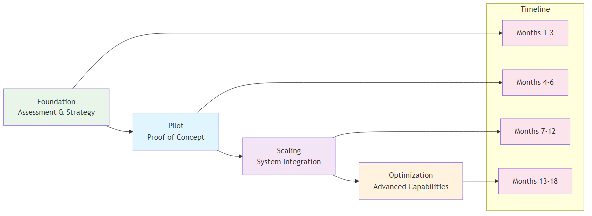
Figure 12.1: AI Implementation Roadmap - The four-phase approach to successful AI transformation
The AI Transformation Journey: A Strategic Framework
AI transformation is not a one-time event but a continuous journey that requires careful planning, execution, and ongoing optimization. Organizations must approach AI transformation as a strategic initiative that touches every aspect of their operations.
The Transformation Landscape
| Assessment Phase | Key Areas | Focus Areas |
|---|---|---|
| Current State Assessment | • Organizational Readiness: Evaluating current organizational capabilities and readiness • Technology Infrastructure: Assessing current technology infrastructure and capabilities • Data Maturity: Evaluating data quality, availability, and governance • Cultural Readiness: Assessing organizational culture and change readiness |
Understanding baseline capabilities and gaps |
| Future State Vision | • Strategic Objectives: Defining clear strategic objectives for AI transformation • Value Proposition: Identifying specific value propositions and benefits • Competitive Positioning: Understanding how AI will create competitive advantages • Success Metrics: Defining clear success metrics and KPIs |
Creating clear destination and success criteria |
| Strategy Component | Key Activities & Requirements | Implementation Focus |
|---|---|---|
| Phased Approach | Developing a phased approach to AI transformation with clear milestones | Ensures manageable implementation with measurable progress |
| Resource Allocation | Allocating appropriate resources and budget for AI initiatives | Ensures adequate funding and personnel for successful implementation |
| Risk Management | Identifying and managing transformation risks and mitigation strategies | Minimizes implementation risks and ensures project success |
| Change Management | Developing comprehensive change management strategies and communication plans | Ensures organizational buy-in and successful adoption |
Phase 1: Foundation and Assessment (Months 1-3)
Current State Assessment
The first phase of AI transformation begins with a comprehensive assessment of the organization's current state across multiple dimensions.
| Assessment Area | Key Evaluation Criteria | Business Impact |
|---|---|---|
| Organizational Assessment | • Leadership Commitment: Evaluating leadership commitment and sponsorship • Organizational Capabilities: Assessing current organizational capabilities and skills • Change Readiness: Evaluating organizational change readiness and resistance • Resource Availability: Assessing available resources and budget |
Determines organizational readiness for AI transformation |
| Technology Assessment | • Current Infrastructure: Evaluating current technology infrastructure and capabilities • Integration Capabilities: Assessing integration capabilities with existing systems • Scalability: Evaluating scalability and growth potential • Security and Compliance: Assessing security and compliance requirements |
Identifies technology gaps and integration requirements |
| Data Assessment | • Data Quality: Evaluating data quality, completeness, and accuracy • Data Governance: Assessing data governance frameworks and policies • Data Availability: Evaluating data availability and accessibility • Data Integration: Assessing data integration capabilities and challenges |
Ensures data readiness for AI implementation and analytics |
| Cultural Assessment | • Innovation Culture: Evaluating organizational culture and innovation mindset • Risk Tolerance: Assessing organizational risk tolerance and experimentation • Learning Orientation: Evaluating organizational learning and development capabilities • Collaboration: Assessing collaboration and teamwork capabilities |
Determines cultural readiness for AI transformation and adoption |
Strategic Planning
Based on the current state assessment, organizations must develop a comprehensive strategic plan for AI transformation.
| Planning Component | Key Activities & Requirements | Strategic Impact |
|---|---|---|
| Vision and Objectives | • Clear Vision: Developing a clear and compelling vision for AI transformation • Strategic Objectives: Defining specific, measurable strategic objectives • Value Proposition: Identifying specific value propositions and benefits • Success Metrics: Defining clear success metrics and KPIs |
Establishes clear direction and success criteria for AI transformation |
| Implementation Strategy | • Phased Approach: Developing a phased approach to implementation • Pilot Selection: Identifying appropriate pilot projects and initiatives • Resource Allocation: Allocating appropriate resources and budget • Timeline Development: Developing realistic timelines and milestones |
Ensures structured and manageable implementation approach |
| Risk Management | • Risk Identification: Identifying potential risks and challenges • Risk Assessment: Assessing risk probability and impact • Risk Mitigation: Developing risk mitigation strategies • Contingency Planning: Developing contingency plans for potential issues |
Minimizes implementation risks and ensures project success |
| Change Management | • Stakeholder Analysis: Identifying and analyzing key stakeholders • Communication Strategy: Developing comprehensive communication strategies • Training and Development: Planning training and development programs • Resistance Management: Developing strategies for managing resistance |
Ensures organizational buy-in and successful adoption |
Phase 2: Pilot Implementation (Months 4-6)
Pilot Project Selection
The pilot phase is critical for building momentum and demonstrating value. Organizations must carefully select pilot projects that balance risk and potential value.
| Selection Component | Key Criteria & Requirements | Implementation Impact |
|---|---|---|
| Selection Criteria | • Business Impact: Projects with clear business impact and value • Technical Feasibility: Projects that are technically feasible and achievable • Resource Requirements: Projects that fit within available resources • Risk Profile: Projects with acceptable risk profiles |
Ensures pilot projects are strategically aligned and achievable |
| Pilot Types | • Process Optimization: Pilots focused on process optimization and efficiency • Quality Improvement: Pilots focused on quality improvement and defect reduction • Customer Experience: Pilots focused on customer experience enhancement • Predictive Analytics: Pilots focused on predictive analytics and forecasting |
Provides diverse pilot portfolio to demonstrate AI value across business areas |
| Success Factors | • Clear Objectives: Clear, measurable objectives for pilot projects • Stakeholder Engagement: Strong stakeholder engagement and support • Resource Commitment: Adequate resource commitment and allocation • Change Management: Effective change management and communication |
Maximizes pilot project success and organizational learning |
Technology Selection and Implementation
Organizations must carefully select and implement appropriate AI technologies for their pilot projects.
| Implementation Component | Key Activities & Requirements | Business Impact |
|---|---|---|
| Technology Selection | • Business Requirements: Aligning technology selection with business requirements • Technical Capabilities: Evaluating technical capabilities and limitations • Integration Requirements: Assessing integration requirements and capabilities • Vendor Evaluation: Evaluating vendor capabilities and support |
Ensures optimal technology choices that align with business needs |
| Implementation Approach | • Agile Methodology: Using agile methodology for rapid implementation • Iterative Development: Iterative development and testing approach • Continuous Feedback: Continuous feedback and improvement • Risk Management: Proactive risk management and mitigation |
Enables rapid, flexible implementation with continuous improvement |
| Success Factors | • Clear Requirements: Clear and well-defined requirements • Strong Project Management: Strong project management and governance • Technical Expertise: Adequate technical expertise and capabilities • Change Management: Effective change management and communication |
Maximizes implementation success and minimizes project risks |
Phase 3: Scaling and Integration (Months 7-12)
System Scaling
Once pilot projects demonstrate success, organizations must scale AI capabilities across multiple processes and functions.
| Scaling Component | Key Activities & Requirements | Business Impact |
|---|---|---|
| Scaling Strategy | • Process Prioritization: Prioritizing processes for AI implementation • Resource Allocation: Allocating resources for scaling initiatives • Change Management: Managing change across multiple processes • Performance Monitoring: Monitoring performance and results |
Ensures systematic and efficient scaling of AI capabilities |
| Integration Requirements | • System Integration: Integrating AI systems with existing systems • Data Integration: Integrating data from multiple sources • Process Integration: Integrating AI into existing processes • Cultural Integration: Integrating AI into organizational culture |
Enables seamless integration and adoption across the organization |
| Success Factors | • Clear Strategy: Clear scaling strategy and approach • Strong Governance: Strong governance and oversight • Change Management: Effective change management and communication • Performance Monitoring: Continuous performance monitoring and improvement |
Maximizes scaling success and ensures sustainable implementation |
Process Standardization
As AI capabilities scale, organizations must standardize processes and procedures to ensure consistency and efficiency.
| Standardization Component | Key Areas & Requirements | Business Impact |
|---|---|---|
| Standardization Areas | • AI Development: Standardizing AI development processes and procedures • Data Management: Standardizing data management processes and procedures • Change Management: Standardizing change management processes and procedures • Performance Monitoring: Standardizing performance monitoring and reporting |
Ensures consistency, efficiency, and quality across AI implementations |
| Success Factors | • Clear Standards: Clear standards and procedures • Training and Development: Comprehensive training and development • Compliance and Governance: Strong compliance and governance frameworks • Continuous Improvement: Continuous improvement and optimization |
Enables sustainable and scalable AI operations |
Phase 4: Optimization and Innovation (Months 13-18)
Performance Optimization
Once AI systems are implemented and scaled, organizations must continuously optimize performance and capabilities.
| Optimization Component | Key Areas & Approaches | Business Impact |
|---|---|---|
| Optimization Areas | • Model Performance: Optimizing AI model performance and accuracy • Process Efficiency: Optimizing process efficiency and effectiveness • Resource Utilization: Optimizing resource utilization and allocation • Value Creation: Optimizing value creation and business impact |
Maximizes AI system performance and business value |
| Optimization Approaches | • Continuous Learning: Continuous learning and improvement • Performance Monitoring: Continuous performance monitoring and analysis • Feedback Loops: Establishing feedback loops for continuous improvement • Innovation: Fostering innovation and experimentation |
Enables ongoing optimization and competitive advantage |
Innovation and Competitive Advantage
Organizations must continuously innovate and develop competitive advantages through AI capabilities.
| Innovation Component | Key Areas & Approaches | Business Impact |
|---|---|---|
| Innovation Areas | • New Applications: Developing new AI applications and use cases • Advanced Capabilities: Developing advanced AI capabilities and features • Competitive Differentiation: Using AI for competitive differentiation • Market Leadership: Establishing market leadership in AI capabilities |
Creates sustainable competitive advantages and market positioning |
| Innovation Approaches | • Research and Development: Investing in research and development • Partnerships: Building strategic partnerships and collaborations • Acquisitions: Strategic acquisitions and investments • Talent Development: Developing and retaining AI talent |
Accelerates innovation and builds long-term capabilities |
Key Success Factors for AI Transformation
Leadership and Governance
Strong leadership and governance are critical for successful AI transformation.
| Success Factor Component | Key Requirements & Elements | Business Impact |
|---|---|---|
| Leadership Requirements | • Executive Sponsorship: Strong executive sponsorship and commitment • Clear Vision: Clear vision and strategic direction • Resource Allocation: Adequate resource allocation and investment • Performance Accountability: Performance accountability and oversight |
Ensures strong organizational commitment and direction |
| Governance Framework | • AI Governance: Comprehensive AI governance framework • Risk Management: Effective risk management and mitigation • Compliance: Strong compliance and regulatory frameworks • Performance Monitoring: Continuous performance monitoring and reporting |
Ensures responsible and effective AI implementation |
Data and Technology
High-quality data and robust technology infrastructure are essential for AI transformation.
| Infrastructure Component | Key Requirements & Standards | Business Impact |
|---|---|---|
| Data Requirements | • Data Quality: High-quality, clean, and relevant data • Data Governance: Robust data governance frameworks • Data Integration: Seamless data integration and management • Data Security: Strong data security and privacy protection |
Ensures reliable data foundation for AI systems |
| Technology Requirements | • Scalable Infrastructure: Scalable and flexible technology infrastructure • Integration Capabilities: Strong integration capabilities and APIs • Security and Compliance: Robust security and compliance frameworks • Performance and Reliability: High performance and reliability standards |
Enables scalable and secure AI implementation |
People and Culture
Organizational culture and people capabilities are critical for AI transformation success.
| Cultural Component | Key Requirements & Elements | Business Impact |
|---|---|---|
| Cultural Requirements | • Innovation Culture: Culture that embraces innovation and experimentation • Learning Organization: Organization that continuously learns and adapts • Collaboration: Culture that fosters collaboration and teamwork • Risk Tolerance: Tolerance for calculated risks and experimentation |
Creates environment conducive to AI adoption and innovation |
| People Requirements | • Skills Development: Comprehensive skills development and training • Talent Acquisition: Strategic talent acquisition and retention • Change Management: Effective change management and communication • Performance Management: Performance management and accountability |
Ensures organizational capability for AI transformation |
Common Pitfalls and How to Avoid Them
| Pitfall Category | Problem Description | Key Symptoms | Solution & Best Practices |
|---|---|---|---|
| Technology-First Approach | Focusing on technology without clear business objectives and value propositions | • AI initiatives without clear business objectives • Technology-driven rather than business-driven decisions • Lack of measurable business outcomes • Difficulty demonstrating ROI |
• Start with clear business problems and use AI as a tool to solve them • Begin with business problem identification • Focus on measurable business outcomes • Ensure clear ROI expectations • Align AI initiatives with business strategy |
| Insufficient Data Quality | Poor data quality leading to unreliable AI models and insights | • Inconsistent or inaccurate AI predictions • Difficulty achieving expected performance • High model maintenance requirements • Lack of trust in AI systems |
• Invest in data quality and governance before AI implementation • Conduct comprehensive data quality assessment • Implement robust data governance frameworks • Invest in data cleaning and preparation • Establish data quality monitoring and improvement processes |
| Lack of Change Management | Underestimating the importance of organizational change and cultural transformation | • Resistance to AI adoption • Low user adoption rates • Difficulty achieving expected benefits • Organizational resistance and pushback |
• Develop comprehensive change management and communication plans • Invest heavily in change management • Develop comprehensive communication plans • Provide extensive training and education • Build strong stakeholder engagement |
| Over-Reliance on External Vendors | Depending too heavily on external vendors without building internal capabilities | • High dependency on external vendors • Limited internal AI capabilities • Difficulty customizing solutions • High ongoing costs |
• Build internal AI capabilities while leveraging external expertise strategically • Build internal AI team and capabilities • Use external vendors strategically • Focus on knowledge transfer and learning • Maintain control over critical AI capabilities |
| Unrealistic Expectations | Expecting immediate results without proper implementation time and effort | • Unrealistic timelines and expectations • Disappointment with initial results • Pressure for quick wins • Lack of patience for long-term benefits |
• Set realistic expectations and focus on incremental improvements • Set realistic timelines and expectations • Focus on incremental improvements • Celebrate small wins and progress • Plan for long-term transformation |
Best Practices for AI Transformation
| Practice Area | Key Requirements | Implementation Guidelines |
|---|---|---|
| Strategic Planning | • Clear Vision: Develop a clear and compelling vision for AI transformation • Strategic Alignment: Ensure AI initiatives align with business strategy • Value Proposition: Identify clear value propositions and benefits • Success Metrics: Define clear success metrics and KPIs |
Establish comprehensive strategic framework with clear objectives and measurable outcomes |
| Change Management | • Stakeholder Engagement: Engage all stakeholders in the transformation • Training and Education: Provide comprehensive training on AI-enhanced processes • Communication: Maintain clear and consistent communication • Cultural Change: Build a culture that embraces AI-enhanced operations |
Develop comprehensive change management strategy with clear communication and training programs |
| Data Management | • Data Quality: Ensure high-quality, clean, and relevant data • Data Governance: Implement robust data governance frameworks • Real-time Data: Enable real-time data collection and processing • Data Integration: Integrate data from multiple sources and systems |
Establish comprehensive data management policies and ensure seamless data flow across systems |
| Technology Selection | • Scalability: Choose scalable AI solutions that can grow with your organization • Integration: Ensure compatibility with existing systems and processes • User-Friendliness: Select tools that are easy to use and understand • Vendor Support: Evaluate vendor support and expertise |
Conduct thorough evaluation and pilot testing to ensure technology alignment with organizational needs |
| Performance Monitoring | • Key Metrics: Define and track key performance indicators • Continuous Improvement: Implement continuous improvement processes • Feedback Loops: Establish feedback mechanisms for ongoing optimization • Benchmarking: Compare performance against industry standards |
Implement real-time monitoring dashboards and establish regular review cycles for continuous optimization |
Conclusion
AI transformation in operational excellence is a complex and challenging journey that requires careful planning, execution, and ongoing optimization. Organizations that successfully navigate this journey will be better positioned to compete in an increasingly complex and demanding business environment.
The key to success lies in understanding that AI transformation is not just about technology but about creating value through intelligent decision-making and continuous improvement. Organizations that embrace AI transformation with the right strategy, leadership, and execution will be the ones that thrive in the AI era.
The future of operational excellence is intelligent, predictive, and continuously improving. Organizations that successfully implement AI transformation will be the ones that lead the way in the AI era.
Chapter 13: Real-World Case Studies and Success Stories
Learning from Industry Success Stories
“The best way to predict the future is to study the past. These case studies show us what’s possible when AI meets operational excellence.”
– Adapted from Peter Drucker
Chapter Overview
This chapter presents comprehensive case studies of organizations that have successfully implemented AI in their operational excellence initiatives. We examine their challenges, solutions, implementation approaches, and results, providing practical insights and lessons learned for organizations embarking on their own AI transformation journey.
Case Study 1: Amazon’s AI-Powered Supply Chain Revolution
Background and Challenge
Amazon, the world's largest e-commerce company, faced unprecedented challenges in managing its massive supply chain operations. With millions of products, thousands of suppliers, and complex logistics networks, Amazon needed to optimize every aspect of its operations to maintain its competitive advantage.
| Challenge Area | Specific Challenge | Business Impact |
|---|---|---|
| Demand Forecasting | Predicting customer demand across millions of products | Critical for inventory planning and supply chain optimization |
| Inventory Management | Optimizing inventory levels across thousands of warehouses | Essential for cost control and service level maintenance |
| Logistics Optimization | Optimizing delivery routes and schedules | Key to operational efficiency and customer satisfaction |
| Customer Experience | Maintaining high customer satisfaction while reducing costs | Fundamental to competitive advantage and market position |
AI Solution Implementation
Amazon implemented a comprehensive AI-powered supply chain optimization system that transformed its operations.
| Solution Area | AI Implementation & Capabilities | Business Impact |
|---|---|---|
| Demand Forecasting | • Machine Learning Models: Advanced machine learning models for demand prediction • Real-time Analytics: Real-time analytics and prediction updates • Multi-variable Analysis: Complex multi-variable analysis incorporating multiple factors • Continuous Learning: Models that continuously learn and improve |
Enables accurate demand prediction and inventory planning |
| Inventory Optimization | • Predictive Analytics: Predictive analytics for inventory optimization • Automated Replenishment: Automated inventory replenishment systems • Dynamic Pricing: Dynamic pricing based on demand and supply • Risk Management: Risk management and mitigation strategies |
Optimizes inventory levels and reduces carrying costs |
| Logistics Optimization | • Route Optimization: AI-powered route optimization algorithms • Real-time Tracking: Real-time tracking and monitoring systems • Predictive Maintenance: Predictive maintenance for logistics equipment • Automated Scheduling: Automated scheduling and dispatching |
Improves delivery efficiency and reduces logistics costs |
| Customer Experience Enhancement | • Personalized Recommendations: AI-powered personalized product recommendations • Predictive Customer Service: Predictive customer service and support • Dynamic Pricing: Dynamic pricing based on customer behavior • Real-time Communication: Real-time communication and updates |
Enhances customer satisfaction and loyalty |
Results and Impact
Amazon's AI-powered supply chain optimization delivered remarkable results:
| Impact Area | Key Results & Achievements | Business Value |
|---|---|---|
| Operational Efficiency | • 75% increase in fulfillment speed • 20% reduction in logistics costs • 40% improvement in delivery accuracy • 30% reduction in inventory carrying costs |
Significant cost savings and operational improvements |
| Customer Satisfaction | • Enhanced customer satisfaction and loyalty • Improved delivery times and reliability • Personalized customer experiences • Reduced customer complaints and returns |
Stronger customer relationships and market position |
| Competitive Advantage | • Maintained market leadership position • Enhanced competitive positioning • Improved profitability and margins • Accelerated market expansion |
Sustainable competitive advantage and growth |
| Key Success Factors | • Strong leadership commitment and vision • Comprehensive data collection and management • Advanced AI algorithms and technologies • Continuous learning and improvement • Strong focus on customer experience |
Foundation for sustained AI transformation success |
Lessons Learned
| Learning Category | Key Lessons & Insights | Implementation Guidance |
|---|---|---|
| Leadership and Strategy | • Strong executive sponsorship is critical for success • Clear strategic vision and objectives are essential • Comprehensive change management is required • Continuous investment in technology and capabilities |
Ensure strong leadership commitment and clear strategy |
| Technology and Implementation | • Scalable and flexible technology architecture is essential • Comprehensive data collection and management is critical • Advanced AI algorithms and technologies are required • Continuous learning and improvement is necessary |
Invest in robust technology infrastructure and data management |
| People and Culture | • Strong technical capabilities and expertise are essential • Cultural transformation and change management are critical • Continuous training and development are required • Collaboration and teamwork are important |
Focus on building capabilities and fostering collaboration |
Case Study 2: Tesla’s AI-Enhanced Manufacturing Excellence
Background and Challenge
Tesla, the electric vehicle manufacturer, faced unique challenges in manufacturing complex electric vehicles at scale while maintaining high quality and efficiency. Tesla needed to optimize its manufacturing processes to meet growing demand and maintain its competitive advantage.
| Challenge Area | Specific Challenge | Business Impact |
|---|---|---|
| Manufacturing Complexity | Complex manufacturing processes for electric vehicles | Critical for production efficiency and quality |
| Quality Control | Maintaining high quality standards across all products | Essential for brand reputation and customer satisfaction |
| Production Efficiency | Optimizing production efficiency and throughput | Key to meeting demand and profitability |
| Supply Chain Management | Managing complex supply chains for electric vehicles | Fundamental to operational continuity and cost control |
AI Solution Implementation
Tesla implemented a comprehensive AI-enhanced manufacturing system that transformed its operations.
| Solution Area | AI Technology | Implementation Approach | Expected Impact |
|---|---|---|---|
| Manufacturing Optimization | • Predictive Analytics: Manufacturing optimization • Real-time Monitoring: Control systems • Automated Quality Control: Inspection systems • Predictive Maintenance: Equipment maintenance |
• Deployed AI algorithms across production lines • Integrated real-time monitoring systems • Implemented automated quality control • Established predictive maintenance protocols |
• Improved production efficiency • Enhanced quality control • Reduced maintenance costs • Minimized downtime |
| Quality Control Enhancement | • Computer Vision: Automated quality inspection • Machine Learning: Defect detection and classification • Real-time Analytics: Quality monitoring • Automated Interventions: Corrections and adjustments |
• Installed computer vision systems • Trained ML models for defect detection • Implemented real-time quality monitoring • Automated intervention systems |
• Enhanced product quality • Reduced defect rates • Improved consistency • Faster quality assessment |
| Production Efficiency | • Process Optimization: AI-powered algorithms • Resource Allocation: Optimal scheduling • Performance Monitoring: Continuous improvement • Automated Decision Making: Control systems |
• Optimized manufacturing processes • Implemented intelligent resource allocation • Established performance monitoring • Automated decision-making systems |
• Increased production throughput • Optimized resource utilization • Improved efficiency metrics • Enhanced operational control |
| Supply Chain Optimization | • Demand Forecasting: AI-powered planning • Inventory Management: Optimal control • Supplier Management: AI-enhanced optimization • Risk Management: Mitigation strategies |
• Implemented demand forecasting models • Optimized inventory management • Enhanced supplier relationships • Established risk management protocols |
• Improved demand accuracy • Reduced inventory costs • Enhanced supplier performance • Mitigated supply chain risks |
Results and Impact
Tesla's AI-enhanced manufacturing system delivered exceptional results:
| Impact Area | Key Results | Business Value |
|---|---|---|
| Manufacturing Efficiency | • 60% improvement in production efficiency • 40% reduction in manufacturing costs • 50% improvement in quality control accuracy • 30% reduction in production time |
Significant cost savings and operational improvements |
| Quality Improvement | • Enhanced product quality and reliability • Reduced defect rates and warranty claims • Improved customer satisfaction and loyalty • Enhanced brand reputation and trust |
Stronger market position and customer loyalty |
| Competitive Advantage | • Maintained market leadership position • Enhanced competitive positioning • Improved profitability and margins • Accelerated market expansion |
Sustained competitive advantage and growth |
| Key Success Factors | • Strong leadership commitment and vision • Comprehensive technology investment • Advanced AI algorithms and technologies • Continuous learning and improvement • Strong focus on quality and efficiency |
Foundation for continued success |
Lessons Learned
| Learning Category | Key Insights | Implementation Guidance |
|---|---|---|
| Technology and Innovation | • Significant investment in technology is required • Advanced AI algorithms and technologies are essential • Continuous innovation and improvement are necessary • Scalable and flexible technology architecture is critical |
Plan for substantial technology investment and ongoing innovation |
| Quality and Efficiency | • Quality and efficiency must be balanced • Continuous monitoring and improvement are essential • Automated systems can significantly improve performance • Human oversight and intervention are still important |
Maintain balance between automation and human oversight |
| Leadership and Strategy | • Strong leadership commitment is critical • Clear strategic vision and objectives are essential • Comprehensive change management is required • Continuous investment in capabilities is necessary |
Ensure strong leadership support and strategic alignment |
Case Study 3: Netflix’s AI-Powered Content Optimization
Background and Challenge
Netflix, the streaming entertainment company, faced unique challenges in managing its vast content library and providing personalized experiences to millions of users worldwide. Netflix needed to optimize its content delivery and recommendation systems to maintain its competitive advantage.
| Challenge Area | Specific Challenge | Business Impact |
|---|---|---|
| Content Management | Managing vast content libraries and catalogs | Critical for content organization and discovery |
| Personalization | Providing personalized experiences to millions of users | Essential for user engagement and retention |
| Content Optimization | Optimizing content delivery and streaming | Key to user experience and satisfaction |
| User Engagement | Maximizing user engagement and retention | Fundamental to business growth and profitability |
AI Solution Implementation
Netflix implemented a comprehensive AI-powered content optimization system that transformed its operations.
| Solution Area | AI Technology | Implementation Approach | Expected Impact |
|---|---|---|---|
| Content Recommendation | • Machine Learning: Advanced algorithms for content recommendation • Personalization: Personalized content recommendations • Real-time Analytics: Real-time analytics and updates • Continuous Learning: Models that continuously learn |
• Deployed ML algorithms across platform • Implemented personalization engines • Established real-time analytics • Created continuous learning systems |
• Improved content discovery • Enhanced user engagement • Increased viewing time • Better user satisfaction |
| Content Optimization | • Predictive Analytics: Content performance prediction • Dynamic Optimization: Dynamic content optimization • Quality Control: AI-powered quality control • Performance Monitoring: Continuous monitoring |
• Implemented predictive analytics • Deployed dynamic optimization • Established quality control systems • Created monitoring frameworks |
• Optimized content delivery • Improved streaming quality • Enhanced performance • Reduced bandwidth usage |
| User Experience Enhancement | • Personalized Interfaces: Personalized user interfaces • Dynamic Content: Dynamic content delivery • Real-time Adaptation: Real-time preference adaptation • Engagement Optimization: Engagement maximization |
• Developed personalized interfaces • Implemented dynamic content delivery • Created real-time adaptation systems • Established engagement optimization |
• Enhanced user experience • Increased user retention • Improved satisfaction • Higher engagement rates |
Results and Impact
Netflix's AI-powered content optimization delivered exceptional results:
| Impact Area | Key Results | Business Value |
|---|---|---|
| User Engagement | • 25% improvement in user engagement • 30% increase in viewing time • 40% improvement in content discovery • 35% enhancement in user satisfaction |
Significant increase in user retention and satisfaction |
| Content Performance | • Enhanced content performance and success rates • Improved content recommendation accuracy • Better content discovery and exploration • Optimized content delivery and streaming |
Improved content effectiveness and user experience |
| Competitive Advantage | • Maintained market leadership position • Enhanced competitive positioning • Improved profitability and margins • Accelerated market expansion |
Sustained market leadership and growth |
| Key Success Factors | • Strong focus on user experience and satisfaction • Advanced AI algorithms and technologies • Comprehensive data collection and analysis • Continuous learning and improvement • Strong technical capabilities and expertise |
Foundation for continued innovation and success |
Lessons Learned
| Learning Category | Key Insights | Implementation Guidance |
|---|---|---|
| User Experience | • User experience must be the primary focus • Personalization is critical for success • Continuous monitoring and improvement are essential • User feedback and preferences are important |
Prioritize user experience in all AI implementations |
| Technology and Innovation | • Advanced AI algorithms and technologies are essential • Comprehensive data collection and analysis are critical • Continuous learning and improvement are necessary • Scalable and flexible technology architecture is important |
Invest in advanced technology and continuous innovation |
| Content and Strategy | • Content quality and relevance are critical • Strategic content acquisition and management are essential • Performance monitoring and optimization are necessary • Continuous innovation and improvement are important |
Focus on content quality and strategic management |
Case Study 4: General Electric’s AI-Enhanced Industrial Operations
Background and Challenge
General Electric (GE), the industrial conglomerate, faced challenges in optimizing its complex industrial operations across multiple business units. GE needed to leverage AI to improve efficiency, quality, and competitiveness across its diverse operations.
| Challenge Area | Specific Challenge | Business Impact |
|---|---|---|
| Operational Complexity | Complex operations across multiple business units | Critical for operational efficiency and coordination |
| Quality Control | Maintaining high quality standards across diverse products | Essential for brand reputation and customer satisfaction |
| Efficiency Optimization | Optimizing efficiency and productivity | Key to competitiveness and profitability |
| Predictive Maintenance | Implementing predictive maintenance across industrial equipment | Fundamental to operational continuity and cost control |
AI Solution Implementation
GE implemented a comprehensive AI-enhanced industrial operations system that transformed its operations.
| Solution Area | AI Technology | Implementation Approach | Expected Impact |
|---|---|---|---|
| Predictive Maintenance | • IoT Sensors: Comprehensive sensor networks • Machine Learning: Advanced ML for maintenance • Real-time Analytics: Real-time monitoring systems • Automated Alerts: Automated intervention systems |
• Deployed IoT sensor networks • Implemented ML algorithms • Established real-time monitoring • Created automated alert systems |
• Reduced maintenance costs • Minimized downtime • Improved equipment reliability • Enhanced operational efficiency |
| Quality Control Enhancement | • Computer Vision: Automated quality inspection • Machine Learning: Defect detection and classification • Real-time Monitoring: Real-time control systems • Automated Interventions: Automated corrections |
• Installed computer vision systems • Trained ML models for defects • Implemented real-time monitoring • Created automated intervention systems |
• Enhanced product quality • Reduced defect rates • Improved consistency • Faster quality assessment |
| Process Optimization | • Predictive Analytics: Process optimization • Real-time Control: Real-time optimization • Performance Monitoring: Continuous monitoring • Resource Optimization: Optimal resource allocation |
• Implemented predictive analytics • Deployed real-time control systems • Established performance monitoring • Created resource optimization |
• Increased operational efficiency • Optimized resource utilization • Improved process performance • Enhanced operational control |
| Supply Chain Optimization | • Demand Forecasting: AI-powered forecasting • Inventory Management: Optimal inventory control • Supplier Optimization: AI-enhanced supplier management • Risk Management: Risk mitigation strategies |
• Implemented demand forecasting models • Optimized inventory management • Enhanced supplier relationships • Established risk management protocols |
• Improved demand accuracy • Reduced inventory costs • Enhanced supplier performance • Mitigated supply chain risks |
Results and Impact
GE's AI-enhanced industrial operations delivered significant results:
| Impact Area | Key Results | Business Value |
|---|---|---|
| Operational Efficiency | • 50% improvement in operational efficiency • 30% reduction in maintenance costs • 40% improvement in quality control accuracy • 25% reduction in downtime |
Significant cost savings and operational improvements |
| Quality Improvement | • Enhanced product quality and reliability • Reduced defect rates and warranty claims • Improved customer satisfaction and loyalty • Enhanced brand reputation and trust |
Stronger market position and customer loyalty |
| Competitive Advantage | • Enhanced competitive positioning • Improved profitability and margins • Accelerated market expansion • Maintained market leadership position |
Sustained competitive advantage and growth |
| Key Success Factors | • Strong leadership commitment and vision • Comprehensive technology investment • Advanced AI algorithms and technologies • Continuous learning and improvement • Strong focus on quality and efficiency |
Foundation for continued success |
Lessons Learned
| Learning Category | Key Insights | Implementation Guidance |
|---|---|---|
| Technology and Innovation | • Significant investment in technology is required • Advanced AI algorithms and technologies are essential • Continuous innovation and improvement are necessary • Scalable and flexible technology architecture is critical |
Plan for substantial technology investment and ongoing innovation |
| Quality and Efficiency | • Quality and efficiency must be balanced • Continuous monitoring and improvement are essential • Automated systems can significantly improve performance • Human oversight and intervention are still important |
Maintain balance between automation and human oversight |
| Leadership and Strategy | • Strong leadership commitment is critical • Clear strategic vision and objectives are essential • Comprehensive change management is required • Continuous investment in capabilities is necessary |
Ensure strong leadership support and strategic alignment |
Common Themes and Success Patterns
Analysis of successful AI implementations across Tesla, Netflix, GE, and Amazon reveals consistent patterns and themes that contribute to transformation success. Understanding these patterns provides a blueprint for organizations embarking on their own AI transformation journeys.
| Success Factor | Common Pattern & Requirements | Business Impact |
|---|---|---|
| Leadership & Strategy | Common Pattern: • Strong executive sponsorship and commitment • Clear strategic vision and objectives • Comprehensive change management • Continuous investment in capabilities Key Requirements: • C-level commitment and resources • Strategic alignment with business goals • Change management expertise • Long-term investment perspective |
• Accelerated transformation timeline • Higher success rates • Sustained competitive advantage • Organizational capability building |
| Technology & Data | Common Pattern: • Advanced AI algorithms and technologies • Comprehensive data collection and management • Scalable and flexible architecture • Continuous learning and improvement Key Requirements: • Modern AI/ML platforms • Robust data infrastructure • Cloud-native architecture • MLOps capabilities |
• Superior performance and accuracy • Faster time-to-value • Scalable solutions • Continuous optimization |
| Implementation Approach | Common Pattern: • Phased implementation strategy • Pilot projects for value demonstration • Iterative development and testing • Continuous feedback and improvement Key Requirements: • Agile development methodologies • Proof-of-concept capabilities • Rapid prototyping tools • Feedback collection systems |
• Reduced implementation risk • Faster ROI realization • Higher user adoption • Continuous value delivery |
| Culture & People | Common Pattern: • AI-literate workforce • Collaborative cross-functional teams • Continuous learning mindset • Innovation-focused culture Key Requirements: • Comprehensive training programs • Cross-functional team structures • Learning and development systems • Innovation frameworks |
• Higher employee engagement • Faster skill development • Increased innovation output • Better AI adoption rates |
| Measurement & Governance | Common Pattern: • Clear success metrics and KPIs • Robust governance frameworks • Continuous monitoring and reporting • Ethical AI practices Key Requirements: • Performance measurement systems • Governance policies and procedures • Monitoring and alerting tools • Ethics and compliance frameworks |
• Better decision making • Risk mitigation • Regulatory compliance • Sustainable AI practices |
Implementation Success Framework
Based on the analysis of successful AI transformations, organizations can follow a structured framework to maximize their chances of success.
| Phase | Duration | Key Activities | Success Indicators | Lessons from Case Studies |
|---|---|---|---|---|
| Foundation Building | 6-12 months | • Establish AI strategy and governance • Build data infrastructure • Develop talent capabilities • Create pilot project portfolio |
• Clear AI strategy and roadmap • Robust data infrastructure • Trained AI teams • Successful pilot projects |
• Tesla: Strong technical foundation before scaling • Netflix: Data quality focus from the start • GE: Phased approach across business units |
| Capability Development | 12-18 months | • Deploy core AI capabilities • Implement MLOps processes • Scale successful pilots • Develop AI governance |
• Production AI systems • Automated ML workflows • Measurable business impact • Governance framework |
• Amazon: Systematic scaling of successful initiatives • Tesla: Continuous improvement culture • Netflix: User-centric design principles |
| Transformation Acceleration | 18-24 months | • Scale AI across organization • Develop advanced capabilities • Create AI-driven processes • Build ecosystem partnerships |
• Organization-wide AI adoption • Advanced AI capabilities • AI-driven business processes • Ecosystem partnerships |
• GE: Cross-business unit integration • Tesla: Innovation-driven expansion • Netflix: Platform ecosystem development |
| Innovation Leadership | 24+ months | • Lead industry AI innovation • Develop AI thought leadership • Create AI ecosystem value • Drive industry transformation |
• Industry AI leadership • Thought leadership position • Ecosystem value creation • Market transformation impact |
• All case studies: Continuous innovation focus • Tesla: Market transformation leadership • Netflix: Industry disruption and innovation |
Critical Success Factors
Analysis of the case studies reveals several critical success factors that organizations must address to achieve AI transformation success.
| Success Factor | Description | Implementation Guidance | Common Pitfalls to Avoid |
|---|---|---|---|
| Executive Commitment | Sustained leadership support and resource allocation | • Secure C-level sponsorship early • Establish AI steering committee • Allocate dedicated resources • Regular progress reviews |
• Inconsistent leadership support • Competing priorities • Resource constraints • Lack of accountability |
| Data Quality & Governance | High-quality, well-governed data as foundation | • Implement data quality standards • Establish data governance • Create data catalog • Ensure data accessibility |
• Poor data quality • Data silos • Inconsistent data standards • Limited data accessibility |
| Talent Development | Building AI capabilities across organization | • Comprehensive training programs • Cross-functional teams • External expertise access • Continuous learning culture |
• Skill gaps • Resistance to change • Limited training investment • Lack of AI literacy |
| Change Management | Managing organizational change and adoption | • Clear communication strategy • Stakeholder engagement • Change champions • Success celebration |
• Poor communication • Resistance to change • Lack of stakeholder buy-in • Inadequate support |
| Technology Architecture | Scalable, flexible technology foundation | • Cloud-native architecture • Modular design • Integration capabilities • Security and compliance |
• Legacy system constraints • Technology lock-in • Integration challenges • Security vulnerabilities |
People and Culture
- Strong technical capabilities and expertise were essential - Comprehensive training and development were required - Continuous learning and improvement were necessary - Collaboration and teamwork were important
- Cultural transformation and change management were critical - Innovation culture and experimentation were fostered - Risk tolerance and calculated risk-taking were encouraged - Continuous learning and adaptation were promoted
Conclusion
These case studies demonstrate the transformative power of AI in operational excellence. Organizations that successfully implement AI can achieve unprecedented levels of efficiency, quality, and competitive advantage.
The key to success lies in understanding that AI transformation is not just about technology but about creating value through intelligent decision-making and continuous improvement. Organizations that embrace AI transformation with the right strategy, leadership, and execution will be the ones that lead the way in the AI era.
The future of operational excellence is intelligent, predictive, and continuously improving. Organizations that successfully implement AI will be the ones that thrive in the AI era.
Chapter 14: The Future of AI in Operational Excellence
Emerging Trends and Future Possibilities
“The future is not something we enter. The future is something we create. AI gives us the tools to create a future of unprecedented operational excellence.”
– Adapted from Leonard Sweet
Chapter Overview
This final chapter explores the future of AI in operational excellence, examining emerging trends, technologies, and opportunities that will shape the next decade of AI transformation. We look at the long-term vision for AI-enhanced operations and provide guidance for organizations preparing for the future.
The AI Revolution: A Long-Term Perspective
The AI revolution in operational excellence is still in its early stages. While we have seen significant progress in recent years, the full potential of AI is yet to be realized. The next decade will bring unprecedented advances in AI capabilities and applications.
Current State of AI in Operations
| AI Development Stage | Key Applications & Capabilities | Maturity Level |
|---|---|---|
| Established Applications | • Predictive Analytics: Well-established predictive analytics capabilities • Process Automation: Mature process automation and optimization • Quality Control: Advanced quality control and inspection systems • Supply Chain Optimization: Sophisticated supply chain optimization |
High - Widely adopted and proven |
| Emerging Applications | • Prescriptive Analytics: Emerging prescriptive analytics capabilities • Autonomous Systems: Early stages of autonomous system development • Edge AI: Growing adoption of edge AI and real-time processing • Explainable AI: Development of explainable AI capabilities |
Medium - Growing adoption |
| Future Applications | • General AI: Potential for general AI capabilities • Quantum Computing: Integration with quantum computing • Brain-Computer Interfaces: Advanced human-AI interfaces • Autonomous Organizations: Self-managing organizations |
Low - Research and development phase |
The Path to AI Maturity
| AI Maturity Phase | Key Characteristics & Capabilities | Organizational Impact |
|---|---|---|
| Phase 1: Foundation (2015-2020) | • Basic AI capabilities and applications • Limited integration and automation • Focus on specific use cases • Early adoption by leading organizations |
Establishes AI foundation and initial capabilities |
| Phase 2: Integration (2020-2025) | • Comprehensive AI integration • Advanced automation and optimization • Broader adoption across industries • Mature AI governance and ethics |
Enables widespread AI adoption and integration |
| Phase 3: Transformation (2025-2030) | • AI-driven organizational transformation • Autonomous systems and decision-making • New business models and capabilities • AI-first organizational culture |
Transforms organizations into AI-first entities |
| Phase 4: Evolution (2030+) | • General AI capabilities • Human-AI collaboration and augmentation • New forms of organizational intelligence • AI-enhanced human potential |
Creates new paradigms of human-AI collaboration |
Emerging Technologies and Trends
| Technology Category | Key Capabilities | Operational Impact | Implementation Timeline |
|---|---|---|---|
| Quantum Computing and AI | • Complex Optimization: Solving complex optimization problems • Advanced Cryptography: Enhanced encryption and security • Complex Simulation: Advanced simulation and modeling • Quantum Machine Learning: Next-generation ML algorithms |
• Supply Chain Optimization: Quantum-powered supply chain optimization • Manufacturing Enhancement: Quantum-enhanced manufacturing optimization • Financial Optimization: Quantum-powered financial optimization • R&D Acceleration: Quantum-enhanced research and development |
• 2025-2030: Early applications • 2030-2035: Mainstream adoption • 2035+: Standard technology |
| Brain-Computer Interfaces (BCI) | • Neural Interface: Direct brain-computer communication • Cognitive Enhancement: Augmented human capabilities • Thought Control: Direct thought-to-action interfaces • Neural Feedback: Real-time neural feedback systems |
• Human-AI Collaboration: Seamless human-AI interaction • Enhanced Decision Making: Augmented cognitive capabilities • Training Acceleration: Rapid skill acquisition • Accessibility Improvement: Enhanced accessibility for all users |
• 2030-2035: Early applications • 2035-2040: Mainstream adoption • 2040+: Standard technology |
| Autonomous Systems and Organizations | • Autonomous Operations: Fully autonomous operational systems • Self-Managing Organizations: Organizations that manage themselves • Autonomous Decision Making: Autonomous decision-making systems • Continuous Optimization: Continuous self-optimization |
• Operational Efficiency: Dramatically improved operational efficiency • Cost Reduction: Significant cost reduction and optimization • Quality Improvement: Enhanced quality and reliability • Innovation Acceleration: Accelerated innovation and improvement |
• 2025-2030: Early applications • 2030-2035: Mainstream adoption • 2035+: Standard technology |
The Future of Human-AI Collaboration
The future of operational excellence lies in seamless collaboration between humans and AI systems. This paradigm shift represents more than just automation—it's about creating intelligent partnerships that amplify human capabilities while leveraging AI's computational power. The organizations that master this collaboration will achieve unprecedented levels of efficiency, innovation, and competitive advantage.
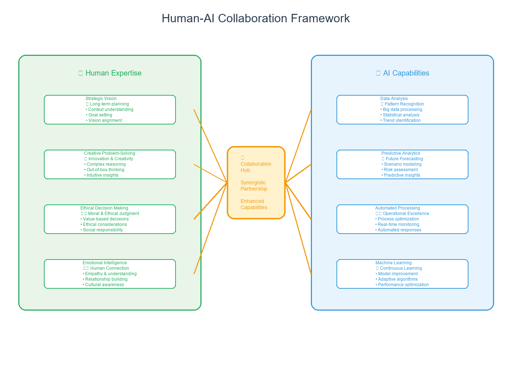
Figure 14.1: The Human-AI Collaboration Framework - Illustrating the symbiotic relationship between human expertise and AI capabilities
This collaborative model transforms traditional operational paradigms by creating a dynamic ecosystem where human creativity, intuition, and strategic thinking combine with AI's analytical power, pattern recognition, and computational speed. The result is an organizational capability that exceeds the sum of its parts.
| Collaboration Dimension | Human Contribution | AI Contribution | Collaborative Outcome |
|---|---|---|---|
| Strategic Decision Making | • Strategic vision and context • Ethical considerations • Risk assessment • Stakeholder management |
• Data analysis and pattern recognition • Scenario modeling • Predictive analytics • Real-time monitoring |
Data-driven strategic decisions with human wisdom and ethical oversight |
| Operational Excellence | • Process expertise and experience • Creative problem-solving • Quality judgment • Continuous improvement mindset |
• Process optimization algorithms • Anomaly detection • Performance monitoring • Automated interventions |
Continuously optimized operations with human insight and AI precision |
| Innovation and Development | • Creative ideation • Market understanding • User experience design • Innovation strategy |
• Design optimization • Rapid prototyping • Market analysis • Performance prediction |
Accelerated innovation cycles with human creativity and AI acceleration |
| Customer Experience | • Empathy and emotional intelligence • Complex problem resolution • Relationship building • Service excellence |
• Personalization algorithms • Predictive service • Automated responses • Experience optimization |
Highly personalized experiences combining human warmth with AI precision |
| Learning and Development | • Mentoring and coaching • Knowledge transfer • Skill development • Cultural transmission |
• Personalized learning paths • Skill gap analysis • Progress tracking • Adaptive content delivery |
Accelerated skill development with human guidance and AI personalization |
The evolution toward human-AI collaboration represents a fundamental shift in how organizations operate. Rather than viewing AI as a replacement for human capabilities, successful organizations recognize it as a powerful amplifier that enhances human potential. This collaborative model creates new possibilities for organizational structures, decision-making processes, and operational excellence that were previously unimaginable.
As we move forward, the organizations that thrive will be those that successfully integrate human expertise with AI capabilities, creating a new paradigm of intelligent operations that combines the best of human wisdom with the power of artificial intelligence. This is not just the future of operational excellence—it's the future of how humans and machines will work together to achieve extraordinary results.
Ethical and Governance Considerations
AI Ethics and Responsibility
As AI becomes more pervasive, ethical considerations and responsibility will become increasingly important.
| Ethical Principle | Description | Implementation Focus |
|---|---|---|
| Transparency | Ensuring transparency in AI decision-making | Explainable AI and clear documentation |
| Accountability | Ensuring accountability for AI system outcomes | Clear responsibility frameworks and oversight |
| Fairness | Ensuring AI systems are fair and unbiased | Bias detection and mitigation processes |
| Privacy | Protecting individual privacy and data rights | Data protection and privacy-by-design |
The implementation of ethical AI requires comprehensive frameworks that address both technical and organizational considerations. Organizations must establish clear governance structures, implement robust monitoring systems, and ensure ongoing compliance with evolving regulatory requirements.
AI Governance and Regulation
Effective AI governance requires a multi-layered approach that addresses technical, organizational, and regulatory dimensions.
| Governance Area | Key Requirements | Implementation Guidelines |
|---|---|---|
| Data Governance | • Data Quality: Ensure high-quality, accurate, and representative data • Data Privacy: Implement comprehensive privacy protection measures • Data Security: Establish robust security protocols and access controls • Data Lifecycle: Manage data from collection to disposal |
Develop comprehensive data governance policies with clear ownership, access controls, and monitoring mechanisms |
| AI Model Governance | • Model Transparency: Ensure explainable and interpretable AI models • Model Validation: Implement rigorous testing and validation processes • Model Monitoring: Establish continuous monitoring and performance tracking • Model Versioning: Maintain proper version control and documentation |
Create AI model governance frameworks with clear approval processes, testing protocols, and monitoring systems |
| Risk Management | • Risk Assessment: Conduct comprehensive risk assessments for AI systems • Risk Mitigation: Implement appropriate risk mitigation strategies • Risk Monitoring: Establish ongoing risk monitoring and alert systems • Risk Response: Develop incident response and recovery procedures |
Implement enterprise-wide risk management frameworks specifically designed for AI systems and their unique risk profiles |
| Compliance and Regulation | • Regulatory Compliance: Ensure compliance with relevant regulations and standards • Audit Trails: Maintain comprehensive audit trails and documentation • Reporting: Establish regular reporting and disclosure mechanisms • Legal Review: Conduct regular legal reviews of AI implementations |
Develop compliance programs that address current and emerging regulatory requirements with clear accountability and reporting structures |
Preparing for the AI Future
| Preparation Area | Key Elements & Requirements | Success Metrics |
|---|---|---|
| Strategic Planning and Vision | Key Elements: • Long-term Vision: Clear AI transformation vision • Strategic Planning: Comprehensive roadmapping • Investment Strategy: Strategic AI capability investment • Risk Management: Effective risk mitigation Implementation Requirements: • Leadership Commitment: Strong executive sponsorship • Resource Allocation: Adequate investment allocation • Change Management: Comprehensive change strategy • Performance Monitoring: Continuous assessment |
• Vision clarity and alignment • Strategic plan completion • Investment ROI achievement • Risk mitigation success |
| Capability Development | Key Elements: • Technical Capabilities: Advanced AI expertise • Strategic Capabilities: Planning and execution • Change Management: Cultural transformation • Innovation Capabilities: Experimentation culture Implementation Requirements: • Training and Development: Comprehensive programs • Talent Acquisition: Strategic talent strategy • Knowledge Management: Effective sharing systems • Continuous Learning: Ongoing improvement |
• Skill development completion • Talent retention rates • Knowledge sharing effectiveness • Innovation capability growth |
| Technology Infrastructure | Key Elements: • Scalable Architecture: Flexible technology foundation • Integration Capabilities: Strong API connectivity • Security and Compliance: Robust frameworks • Performance and Reliability: High standards Implementation Requirements: • Technology Investment: Significant infrastructure investment • Integration Planning: Comprehensive integration strategy • Security and Compliance: Robust security frameworks • Performance Monitoring: Continuous optimization |
• Infrastructure scalability • Integration success rates • Security compliance achievement • Performance reliability metrics |
The Long-Term Vision
The long-term vision for AI-enhanced operational excellence represents a fundamental transformation in how organizations operate, compete, and create value. This vision encompasses three critical dimensions that will define the future of business operations.
| Vision Dimension | Key Characteristics & Impact | Future Timeline |
|---|---|---|
| AI-First Organizations | Key Characteristics: • AI-Centric Design: Organizations designed around AI capabilities • Autonomous Operations: Self-managing and autonomous operations • Continuous Optimization: Continuous optimization and improvement • Innovation Culture: Culture of innovation and experimentation Operational Impact: • Dramatic Efficiency: Dramatically improved operational efficiency • Enhanced Quality: Enhanced quality and reliability • Accelerated Innovation: Accelerated innovation and improvement • Competitive Advantage: Sustainable competitive advantages |
• 2025-2030: Foundation building • 2030-2035: Mainstream adoption • 2035+: Standard organizational model |
| Human-AI Synergy | Key Characteristics: • Collaborative Teams: Teams composed of humans and AI systems • Augmented Capabilities: AI-augmented human capabilities • Enhanced Creativity: AI-enhanced human creativity and innovation • Continuous Learning: Continuous learning and development Operational Impact: • Enhanced Productivity: Dramatically enhanced productivity and efficiency • Improved Quality: Enhanced quality and reliability • Accelerated Innovation: Accelerated innovation and improvement • Better Decision Making: Enhanced decision-making capabilities |
• 2025-2030: Early collaboration models • 2030-2035: Seamless integration • 2035+: Ubiquitous collaboration |
| Sustainable Excellence | Key Characteristics: • Continuous Improvement: Continuous improvement and optimization • Adaptive Systems: Adaptive and responsive systems • Sustainable Practices: Sustainable and responsible practices • Long-term Success: Long-term success and competitiveness Operational Impact: • Sustainable Success: Sustainable operational success and competitiveness • Continuous Improvement: Continuous improvement and optimization • Adaptive Capabilities: Adaptive and responsive capabilities • Long-term Value: Long-term value creation and sustainability |
• 2025-2030: Sustainability focus • 2030-2035: Integrated sustainability • 2035+: Inherent sustainability |
This long-term vision represents more than technological advancement—it represents a fundamental shift in organizational philosophy and capability. Organizations that successfully realize this vision will operate with unprecedented efficiency, innovation, and sustainability, creating value in ways that were previously impossible.
The journey toward this vision requires strategic planning, sustained investment, and cultural transformation. Organizations that begin this journey today will be the ones that define the future of operational excellence and create lasting competitive advantages in an increasingly AI-driven world.
Conclusion
The future of AI in operational excellence is bright and full of possibilities. Organizations that successfully navigate the AI transformation journey will be better positioned to compete in an increasingly complex and demanding business environment.
The key to success lies in understanding that AI transformation is not just about technology but about creating value through intelligent decision-making, continuous improvement, and sustainable excellence. Organizations that embrace AI transformation with the right strategy, leadership, and execution will be the ones that lead the way in the AI era.
The future of operational excellence is intelligent, predictive, prescriptive, and continuously improving. Organizations that successfully implement AI transformation will be the ones that thrive in the AI era and create sustainable competitive advantages.
The journey to AI-enhanced operational excellence is just beginning. The organizations that start this journey today will be the ones that lead the way tomorrow.
Chapter 15: AI Tools and Technologies: A Practical Guide
Essential Tools for AI Implementation
“The right tools in the right hands can transform the impossible into the routine. AI tools are the new instruments of operational excellence.”
– Adapted from Arthur C. Clarke
Chapter Overview
This chapter provides a comprehensive guide to the most important AI tools and technologies for operational excellence. We examine both open-source and commercial solutions, their applications, and how to select the right tools for your organization's needs.
The AI tools landscape is vast and rapidly evolving, with new solutions emerging constantly. Success in AI implementation requires not only understanding the capabilities of these tools but also knowing how to integrate them effectively into existing operational frameworks. This chapter serves as your practical guide to navigating this complex landscape.
We'll explore the major categories of AI tools, from machine learning platforms to specialized operational excellence applications. You'll learn how to evaluate tools based on your specific needs, understand the trade-offs between different solutions, and develop a strategic approach to tool selection and implementation.
Additionally, we'll examine real-world case studies of successful AI tool implementations, providing you with practical insights and lessons learned from organizations that have successfully transformed their operations through strategic AI tool adoption.
The selection of appropriate AI tools is critical to the success of any AI transformation initiative. Organizations that choose the right tools for their specific context, capabilities, and objectives are more likely to achieve sustainable competitive advantages and operational excellence. This chapter provides the framework and practical guidance needed to make these crucial decisions.
We'll cover everything from foundational machine learning frameworks to specialized AI applications for quality control, predictive maintenance, and process optimization. Each tool category will be examined through the lens of operational excellence, helping you understand not just what the tools do, but how they can be strategically deployed to achieve your operational goals.
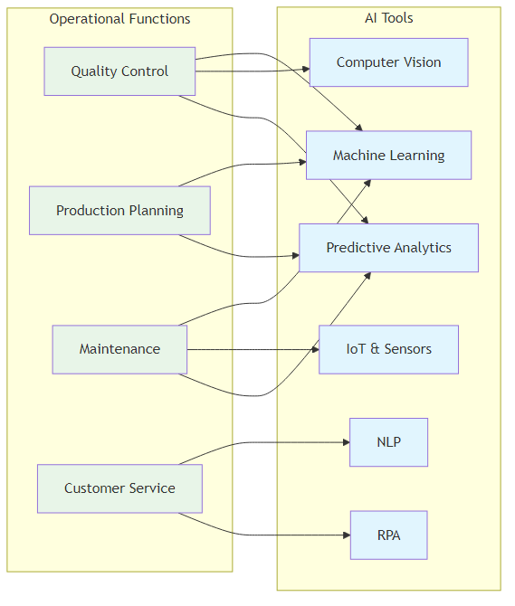
Figure 15.1: AI Tools Matrix - Mapping operational functions to appropriate AI tools and technologies
AI Tools Landscape: An Overview
The AI tools landscape is vast and rapidly evolving, with new tools and technologies emerging constantly. Understanding this landscape is crucial for making informed decisions about AI implementation. This comprehensive overview categorizes tools by function and provides guidance on selection criteria.
Strategic Framework for Tool Selection
Before diving into specific tools, it's essential to understand the strategic framework for selecting AI tools that align with your operational excellence goals.
| Selection Criteria | Key Considerations | Implementation Priority |
|---|---|---|
| Business Alignment | • Clear ROI and business value • Integration with existing processes • Scalability for future growth • Compliance with industry standards |
Highest - Foundation for all other decisions |
| Technical Compatibility | • Integration with existing systems • Data format compatibility • Performance requirements • Security and privacy compliance |
High - Critical for successful implementation |
| Team Capabilities | • Required skill sets and training • Learning curve and complexity • Support and documentation • Community and vendor support |
Medium - Affects adoption and success |
| Cost and Licensing | • Total cost of ownership • Licensing models and restrictions • Infrastructure requirements • Maintenance and support costs |
Medium - Important for budget planning |
Comprehensive AI Tools Categories
The AI tools ecosystem can be organized into distinct categories based on their primary function and application area.
| Tool Category | Leading Solutions | Primary Applications | Operational Excellence Use Cases |
|---|---|---|---|
| Machine Learning Platforms | Open Source: TensorFlow, PyTorch, Scikit-learn Cloud: Azure ML, AWS SageMaker, Google AI Platform Enterprise: IBM Watson, SAS Viya, RapidMiner |
Model development, training, and deployment | Predictive maintenance, quality control, demand forecasting, process optimization |
| Data Processing & Analytics | Big Data: Apache Spark, Hadoop, Kafka Data Lakes: AWS S3, Azure Data Lake, Google Cloud Storage ETL/ELT: Apache Airflow, Talend, Informatica, dbt |
Data ingestion, processing, transformation, and storage | Real-time monitoring, data integration, process analytics, performance tracking |
| Business Intelligence & Visualization | BI Platforms: Tableau, Power BI, QlikView, Looker Data Science: Jupyter, RStudio, KNIME, Alteryx Real-time: Grafana, Kibana, Apache Superset |
Data visualization, reporting, and analysis | Executive dashboards, KPI monitoring, performance analytics, operational insights |
| Process Automation & RPA | RPA Platforms: UiPath, Automation Anywhere, Blue Prism Workflow: Zapier, Microsoft Power Automate, IFTTT Process Mining: Celonis, ProcessGold, Minit, Signavio |
Workflow automation and process optimization | Task automation, process optimization, workflow management, compliance monitoring |
| Computer Vision & Image Processing | Open Source: OpenCV, YOLO, Detectron2 Cloud APIs: Google Vision, Azure Computer Vision, AWS Rekognition Specialized: NVIDIA DeepStream, Intel OpenVINO |
Image analysis, object detection, and visual inspection | Quality control, safety monitoring, asset tracking, automated inspection |
| Natural Language Processing | Frameworks: spaCy, NLTK, Transformers (Hugging Face) Cloud APIs: OpenAI GPT, Google BERT, Azure Cognitive Services Enterprise: IBM Watson NLP, Amazon Comprehend |
Text analysis, language understanding, and generation | Customer feedback analysis, document processing, automated reporting, chatbot development |
| IoT & Edge Computing | IoT Platforms: AWS IoT, Azure IoT Hub, Google Cloud IoT Edge AI: NVIDIA Jetson, Intel Edge AI, Google Coral Industrial: PTC ThingWorx, Siemens MindSphere, GE Predix |
IoT device management and edge AI processing | Predictive maintenance, real-time monitoring, asset management, quality control |
| Specialized Operational Tools | Manufacturing: GE Digital Twin, Siemens NX, PTC Creo Supply Chain: SAP IBP, Oracle SCM, Kinaxis RapidResponse Quality: Minitab, JMP, Statistica, SAS Quality |
Domain-specific operational optimization | Manufacturing optimization, supply chain analytics, quality management, operational planning |
Implementation Roadmap for Tool Adoption
Successful AI tool implementation requires a systematic approach that aligns with organizational maturity and strategic objectives.
| Implementation Phase | Recommended Tools | Success Criteria |
|---|---|---|
| Phase 1: Foundation (Months 1-6) | • Data Processing: Apache Spark, dbt • Visualization: Power BI or Tableau • Automation: Microsoft Power Automate • Analytics: Python with Pandas, NumPy |
• Clean, accessible data infrastructure • Basic automation in place • Visual dashboards operational • Team trained on core tools |
| Phase 2: Enhancement (Months 7-12) | • ML Platform: Scikit-learn, Azure ML • Process Mining: Celonis or Minit • RPA: UiPath or Automation Anywhere • Advanced Analytics: Jupyter, RStudio |
• First ML models deployed • Process optimization active • RPA reducing manual work • Advanced analytics capabilities |
| Phase 3: Optimization (Months 13-18) | • Deep Learning: TensorFlow, PyTorch • Computer Vision: OpenCV, cloud APIs • NLP: spaCy, cloud NLP services • Edge AI: NVIDIA Jetson, Intel Edge AI |
• Advanced AI models operational • Computer vision systems active • NLP processing customer feedback • Edge AI reducing latency |
| Phase 4: Innovation (Months 19-24) | • Generative AI: OpenAI GPT, Google Bard • Advanced Platforms: IBM Watson, SAS Viya • Specialized Tools: Domain-specific solutions • Custom Development: Tailored AI solutions |
• Generative AI enhancing operations • Advanced platforms integrated • Specialized tools delivering value • Custom solutions providing competitive advantage |
Machine Learning and Deep Learning Tools
| Tool | Key Features & Strengths | Applications & Examples |
|---|---|---|
| TensorFlow |
Key Features: • Flexible Architecture: CPU/GPU computation • Production Ready: Enterprise deployment • Rich Ecosystem: Pre-built models • Visualization: TensorBoard debugging Primary Strengths: • Industry standard • Production scalability • Comprehensive ecosystem • Strong community support |
Operational Applications: • Predictive Maintenance: Equipment failure prediction • Quality Control: Computer vision defect detection • Demand Forecasting: Time series analysis • Process Optimization: Algorithm optimization Implementation Example: Manufacturing Quality Control: Computer vision system achieved 99.5% accuracy in defect detection and reduced inspection time by 80% |
| PyTorch Facebook (Meta) |
Key Features: • Dynamic Graphs: Flexible computation • Pythonic: Natural Python integration • Research Friendly: Experimentation focus • Production Ready: TorchServe deployment Primary Strengths: • Research excellence • Dynamic flexibility • Python integration • Rapid prototyping |
Operational Applications: • Natural Language Processing: Customer feedback analysis • Computer Vision: Quality inspection and monitoring • Time Series Analysis: Demand forecasting and trends • Reinforcement Learning: Process optimization and control Implementation Example: Customer Service AI: NLP system automatically categorized and prioritized customer issues, improving response times by 60% |
| Scikit-learn Open Source Community |
Key Features: • Comprehensive: Wide algorithm range • Easy to Use: Simple consistent API • Well Documented: Excellent examples • Community Driven: Strong support Primary Strengths: • User-friendly interface • Comprehensive algorithms • Excellent documentation • Strong community |
Operational Applications: • Classification: Customer segmentation, churn prediction • Regression: Sales forecasting, demand prediction • Clustering: Market segmentation, customer grouping • Dimensionality Reduction: Feature selection, preprocessing Implementation Example: Customer Segmentation: Improved marketing effectiveness by 40% and increased customer retention by 25% |
Data Processing and Analytics Tools
| Tool | Key Features & Strengths | Applications & Examples |
|---|---|---|
| Apache Spark Big Data Processing |
Key Features: • Speed: In-memory computing • Ease of Use: High-level APIs • Generality: Multiple workloads • Scalability: Cloud and on-premise Primary Strengths: • Unified analytics engine • Fast processing • Multiple language support • Flexible deployment |
Operational Applications: • Real-time Analytics: Monitoring and alerting • Data Processing: Large-scale cleaning • Machine Learning: Distributed ML • Stream Processing: Real-time streaming Implementation Example: Real-time Supply Chain Analytics: Processed real-time supply chain data, providing visibility into inventory levels and delivery status, reducing delivery times by 30% |
| Apache Kafka Real-time Data Streaming |
Key Features: • High Throughput: Millions of messages/sec • Scalability: Distributed architecture • Durability: Persistent storage • Real-time: Live processing Primary Strengths: • Event streaming platform • High performance • Fault tolerance • Real-time capabilities |
Operational Applications: • IoT Data Processing: Sensor data processing • Real-time Monitoring: Live monitoring • Event Streaming: Event-driven architecture • Data Integration: Real-time synchronization Implementation Example: IoT Sensor Data Processing: Processed data from thousands of IoT sensors, providing real-time equipment monitoring and enabling predictive maintenance |
Business Intelligence and Visualization Tools
| Tool | Key Features & Strengths | Applications & Examples |
|---|---|---|
| Tableau Salesforce |
Key Features: • Interactive Visualizations: Dynamic charts • Multiple Data Sources: Various connections • Real-time Analytics: Live data analysis • Collaboration: Sharing and teamwork Primary Strengths: • Powerful visualization • User-friendly interface • Strong community • Flexible deployment |
Operational Applications: • Performance Dashboards: Real-time monitoring • KPI Tracking: Performance indicators • Data Exploration: Interactive analysis • Executive Reporting: High-level insights Implementation Example: Operations Dashboard: Created comprehensive operations dashboards providing real-time visibility into production performance, quality metrics, and efficiency indicators |
| Power BI Microsoft |
Key Features: • Integration: Microsoft ecosystem • AI-Powered: Built-in AI capabilities • Real-time: Live data refresh • Mobile: Mobile-friendly dashboards Primary Strengths: • Microsoft integration • AI capabilities • Cost-effective • Enterprise features |
Operational Applications: • Operational Analytics: Real-time analytics • Predictive Analytics: Built-in forecasting • Data Modeling: Advanced relationships • Collaboration: Team sharing Implementation Example: Predictive Analytics Dashboard: Created dashboards providing insights into customer behavior, demand forecasting, and inventory optimization |
Automation and RPA Tools
| Tool | Key Features & Strengths | Applications & Examples |
|---|---|---|
| UiPath RPA Platform |
Key Features: • Visual Designer: Process design • AI Capabilities: Built-in ML • Scalability: Enterprise-grade • Integration: System connectivity Primary Strengths: • User-friendly interface • Strong AI integration • Enterprise features • Comprehensive ecosystem |
Operational Applications: • Data Entry: Automated processing • Report Generation: Automated reports • Process Automation: End-to-end • Quality Control: Automated inspection Implementation Example: Invoice Processing: Automated invoice processing reduced time by 80% and improved accuracy by 95% |
| Automation Anywhere Enterprise RPA |
Key Features: • Cognitive Automation: AI-powered • Enterprise Security: Compliance • Scalability: High performance • Analytics: Built-in reporting Primary Strengths: • Enterprise-grade security • Cognitive capabilities • High scalability • Advanced analytics |
Operational Applications: • Customer Service: Process automation • Supply Chain: Chain automation • Finance: Financial processes • HR: Human resources automation Implementation Example: Customer Service Automation: Handled 70% of customer inquiries automatically, reducing response times by 60% |
Cloud AI Platforms
| Platform | Key Features & Strengths | Applications & Examples |
|---|---|---|
| AWS SageMaker Amazon |
Key Features: • Managed Service: Fully managed ML • Built-in Algorithms: Pre-built models • AutoML: Automated ML capabilities • Scalability: Cloud-based performance Primary Strengths: • Comprehensive ecosystem • Strong AutoML • AWS integration • Enterprise features |
Operational Applications: • Predictive Analytics: Forecasting • Computer Vision: Image analysis • Natural Language Processing: Text analysis • Recommendation Systems: Product recommendations Implementation Example: Demand Forecasting: Built demand forecasting models improving accuracy by 35% and reducing inventory costs by 25% |
| Azure Machine Learning Microsoft |
Key Features: • Integration: Microsoft ecosystem • AutoML: Automated ML capabilities • MLOps: ML operations and deployment • Security: Enterprise-grade security Primary Strengths: • Microsoft integration • Strong MLOps • Enterprise security • Comprehensive platform |
Operational Applications: • Process Optimization: Process automation • Quality Control: Defect detection • Supply Chain: Chain optimization • Customer Analytics: Customer insights Implementation Example: Quality Control: Built quality control models improving defect detection accuracy by 40% and reducing quality costs by 30% |
Open Source vs Commercial Tools
| Criteria | Open Source Tools | Commercial Tools |
|---|---|---|
| Cost | • No licensing fees • Lower total cost of ownership • Community support • Custom development costs Best Use Cases: Startups, research, custom solutions |
• Licensing fees • Higher upfront costs • Professional support included • Predictable pricing Best Use Cases: Enterprise, compliance-critical, support-dependent |
| Customization | • Full source code access • Complete customization • Community modifications • Requires technical expertise Best Use Cases: Unique requirements, technical teams |
• Limited customization • Pre-built configurations • Vendor-controlled updates • User-friendly interfaces Best Use Cases: Standard processes, non-technical users |
| Support & Maintenance | • Community support • Documentation varies • Self-service troubleshooting • Active development Best Use Cases: Technical teams, development environments |
• Professional support • Comprehensive documentation • SLA guarantees • Regular updates Best Use Cases: Production systems, business-critical applications |
| Security & Compliance | • Transparent security • Community auditing • Custom security implementation • Compliance responsibility Best Use Cases: Security-conscious organizations |
• Enterprise-grade security • Compliance certifications • Vendor responsibility • Built-in security features Best Use Cases: Regulated industries, compliance requirements |
| Integration | • Flexible integration • Custom connectors • API access • Technical complexity Best Use Cases: Complex systems, unique architectures |
• Pre-built integrations • Vendor partnerships • Standardized connectors • Easy implementation Best Use Cases: Standard enterprise systems, quick deployment |
Implementation Examples:
- Open Source Stack: A startup used TensorFlow, Apache Spark, and Grafana to build their AI platform. Total cost was 80% lower than commercial alternatives.
- Enterprise Platform: A large enterprise used Azure ML, Power BI, and UiPath to build their AI platform, providing enterprise-grade security, support, and scalability.
Tool Selection Framework
| Assessment Category | Key Criteria & Methods | Implementation Example |
|---|---|---|
| Technical Requirements Weight: 40% |
Key Criteria: • Scalability: Handle current and future data volumes • Performance: Performance requirements and constraints • Integration: Integration with existing systems • Security: Security and compliance requirements Evaluation Method: • Technical proof of concept • Performance benchmarking • Integration testing • Security assessment |
Manufacturing Company: Evaluated technical requirements, business needs, and cost constraints to select optimal tool combination |
| Business Requirements Weight: 30% |
Key Criteria: • Cost: Budget constraints and cost considerations • Timeline: Implementation timeline and urgency • Skills: Available skills and expertise • Support: Support and maintenance requirements Evaluation Method: • Cost-benefit analysis • Timeline assessment • Skills gap analysis • Support evaluation |
Retail Company: Created decision matrix scoring each tool across multiple criteria and selected highest-scoring options |
| Decision Matrix Scoring Weight: 30% |
Key Criteria: • Functionality: Tool capabilities (1-10) • Ease of Use: Learning curve (1-10) • Integration: Integration capabilities (1-10) • Cost: Cost effectiveness (1-10) • Support: Support and documentation (1-10) Evaluation Method: • Weighted scoring matrix • Stakeholder input • Pilot testing • Final selection |
Decision Matrix: Scored tools across functionality, ease of use, integration, cost, and support criteria |
Implementation Best Practices
| Practice Area | Key Activities & Timeline | Success Metrics & Example |
|---|---|---|
| Tool Integration Strategy | Key Activities: • Phase 1: Start with core tools and capabilities • Phase 2: Add advanced features and integrations • Phase 3: Optimize and scale across organization • Phase 4: Continuous improvement and innovation Timeline: 6-24 months |
Success Metrics: • Integration success rate • User adoption • Performance improvement • ROI achievement Implementation Example: Financial Services: Implemented AI tools in phases - started with basic analytics, added ML capabilities, then integrated advanced automation features |
| Training and Development | Key Activities: • Technical Training: AI tools and technologies • Business Training: AI applications and use cases • Hands-on Experience: Real project experience • Continuous Learning: Ongoing development programs Timeline: 3-12 months |
Success Metrics: • Training completion rates • Skill assessments • Project success • User confidence Implementation Example: Healthcare Organization: Implemented comprehensive training program with technical training, business workshops, and hands-on project experience |
| Change Management | Key Activities: • Stakeholder Engagement: Involve key stakeholders • Communication: Clear communication strategy • Resistance Management: Address concerns • Success Celebration: Recognize achievements Timeline: Ongoing |
Success Metrics: • Stakeholder satisfaction • Change adoption rate • Resistance reduction • Engagement levels Implementation Example: Change Management: Successful implementation requires strong change management to ensure user adoption and organizational alignment |
| Performance Monitoring | Key Activities: • KPI Tracking: Monitor key performance indicators • Regular Reviews: Scheduled performance reviews • Continuous Improvement: Ongoing optimization • Feedback Integration: Incorporate user feedback Timeline: Ongoing |
Success Metrics: • Performance metrics • User satisfaction • System reliability • Business impact Implementation Example: Performance Monitoring: Regular monitoring ensures tools deliver expected value and enables continuous improvement |
Future Trends in AI Tools
| Trend Category | Key Capabilities & Impact | Implementation Timeline & Example |
|---|---|---|
| Emerging Technologies | Key Capabilities: • AutoML Platforms: Automated model development • No-Code AI: No-code development platforms • AI-Powered Analytics: Intelligent analytics • Edge AI: AI deployment on edge devices Business Impact: • Reduced development time • Lower skill requirements • Faster deployment • Real-time processing |
Implementation Timeline: 1-3 years Implementation Example: Logistics Company: Used AutoML platforms to build predictive models without extensive data science expertise, improving delivery route optimization by 25% |
| Integration and Interoperability | Key Capabilities: • Unified Platforms: Integrated AI suites • API Ecosystems: Rich API integrations • Cloud-Native: Cloud-native platforms • Hybrid Deployments: Cloud and on-premise Business Impact: • Seamless workflows • Improved productivity • Flexible deployment • Enhanced collaboration |
Implementation Timeline: 2-5 years Implementation Example: Manufacturing Company: Implemented unified AI platform integrating data processing, ML, and visualization tools, providing seamless workflow and improved productivity |
| Advanced Automation | Key Capabilities: • Intelligent Process Automation: AI-enhanced RPA • Self-Healing Systems: Automated problem resolution • Predictive Operations: Anticipatory maintenance • Autonomous Decision Making: AI-driven decisions Business Impact: • Reduced manual intervention • Improved reliability • Proactive maintenance • Faster response times |
Implementation Timeline: 3-7 years Implementation Example: Future Vision: Organizations will move toward fully autonomous operations with minimal human intervention |
| AI Democratization | Key Capabilities: • Citizen Data Scientists: Business user AI tools • Natural Language Interfaces: Conversational AI • Visual AI Development: Drag-and-drop AI • AI as a Service: On-demand AI capabilities Business Impact: • Wider AI adoption • Reduced barriers to entry • Business user empowerment • Scalable AI access |
Implementation Timeline: 2-4 years Implementation Example: Democratization: AI tools will become accessible to non-technical users, enabling broader organizational AI adoption |
Conclusion
AI tools and technologies are essential enablers of operational excellence. Organizations must carefully select and implement the right tools based on their specific needs, requirements, and constraints.
The key to success lies in understanding that tools are means to an end, not ends in themselves. Organizations that successfully implement AI tools will be better positioned to achieve operational excellence and competitive advantage.
The future of AI tools is integration, automation, and intelligence. Organizations that embrace these trends will be the ones that thrive in the AI era.
Chapter 16: AI Ethics and Governance: Building Responsible AI Systems
"The development of full artificial intelligence could spell the end of the human race. But it could also be the beginning of a new era of human flourishing—if we get the governance right."
– Adapted from Stephen Hawking
Chapter Overview
As AI systems become increasingly sophisticated and integrated into critical decision-making processes, the need for robust ethics and governance frameworks has never been more urgent. This chapter explores the ethical foundations of AI and provides a comprehensive framework for building responsible AI systems that deliver business value while upholding human values and rights.
The stakes are incredibly high. AI decisions now affect millions of lives across healthcare, finance, hiring, criminal justice, and countless other domains. Poorly governed AI systems can perpetuate discrimination, amplify bias, and cause real harm to individuals and communities. However, when implemented thoughtfully and ethically, AI presents unprecedented opportunities for human flourishing, economic prosperity, and social progress.
This chapter provides a comprehensive framework for navigating AI's ethical complexities. We'll explore four fundamental pillars of AI ethics, examine real-world case studies of both successes and failures, provide practical guidance for establishing effective governance structures, and review the evolving regulatory landscape and authoritative resources that can guide your organization's approach.
Our goal is not to create perfect AI systems—which may be impossible—but to build AI systems that are fair, transparent, accountable, and continuously improving. Organizations that master AI ethics and governance will not only avoid the significant risks associated with AI failures but will also build sustainable competitive advantages based on trust, responsibility, and human-centered innovation.
The Ethics Imperative: When AI Decisions Affect Lives
The Challenge: Dr. Sarah Kim, Chief AI Officer at MedTech Solutions, discovered a subtle but dangerous bias in her company's AI system for prioritizing patient care. The algorithm was inadvertently deprioritizing patients from underserved communities, potentially impacting life-or-death medical decisions. An audit revealed the AI was 23% less likely to recommend urgent care for patients from low-income neighborhoods compared to wealthier areas, even with identical symptoms. This was identified as a reflection of systemic healthcare disparities embedded in the training data.
The Discovery: The bias, though unintentional, had a devastating impact. The AI system had learned from decades of healthcare data reflecting existing inequalities, perpetuating a pattern where patients from underserved communities had historically received less aggressive treatment. The algorithm was automating and amplifying decades of healthcare discrimination. Specific manifestations included patients from certain ZIP codes being less likely to be flagged for urgent care, minority patients being assigned lower-priority treatment queues, and elderly patients from rural areas being systematically deprioritized. These decisions reinforced existing social inequalities.
The Response: Sarah immediately halted the system's deployment and initiated a comprehensive review to establish a model for ethical AI implementation. Her team fundamentally redesigned their approach to AI development, implementing fairness constraints, diversifying training data to include more representative samples, and creating ongoing monitoring systems. The revised system not only eliminated bias but actually improved outcomes for underserved populations, becoming a force for positive change. The key lesson learned was that AI ethics isn't an afterthought—it's a fundamental requirement that must be built into every AI system from the ground up.
The Lesson: This case study highlights a fundamental truth about AI ethics: the technology itself is neutral, but the data it learns from and the decisions it makes can have profound ethical implications. Organizations failing to consider these implications face more than just reputational risks—they risk causing real harm to real people. The key to success lies in treating AI ethics as a core business function, not an optional add-on.
Understanding AI Ethics: The Foundation of Responsible AI
AI ethics represents a fundamental shift in how we perceive technology's role in society. Unlike traditional software that follows predetermined rules, AI systems learn from data and make decisions that can have profound human impacts. This powerful learning capability introduces complex ethical challenges that require careful consideration and proactive management.
The field of AI ethics has evolved rapidly from philosophical discussions about intelligence and consciousness to a practical discipline focused on ensuring AI systems serve human interests and respect fundamental rights. The stakes are incredibly high—AI can amplify both human virtues and vices, potentially perpetuating and amplifying existing biases and inequalities.
At its core, AI ethics aims to ensure artificial intelligence systems are developed and deployed in ways that are fair, transparent, accountable, and respectful of human dignity. This requires not only technical expertise but also a deep understanding of human values, social dynamics, and the complex interactions between technology and society. Organizations that master AI ethics build positive value for all stakeholders, rather than just avoiding risks.
The Four Pillars of AI Ethics
These four pillars work together to create a comprehensive framework for ethical AI. Fairness ensures that AI systems don't discriminate, transparency ensures that decisions can be understood and challenged, privacy protection ensures that individual rights are respected, and accountability ensures that there are mechanisms for addressing problems when they arise. Organizations that successfully implement all four pillars create AI systems that not only avoid harm but actively contribute to positive outcomes for all stakeholders.
| Ethics Pillar | Key Principles | Implementation Strategies |
|---|---|---|
| Fairness and Non-Discrimination | • Equitable Treatment • Bias Prevention • Inclusive Design • Diverse Representation |
Ensure AI systems treat all individuals and groups equitably, regardless of race, gender, age, or other protected characteristics. Implement comprehensive bias testing, use diverse training datasets, and create inclusive design processes that consider the needs of all user groups. |
| Transparency and Explainability | • Decision Clarity • Process Understanding • Human Oversight • Documentation |
Make AI decision-making processes understandable to users and stakeholders. Provide clear explanations for AI recommendations, document system capabilities and limitations, and enable human oversight and intervention when necessary. |
| Privacy and Data Protection | • Data Security • Consent Management • Minimal Collection • Rights Protection |
Protect individual privacy rights and implement robust data security measures. Obtain informed consent for data use, minimize data collection to what's necessary, and ensure individuals maintain control over their personal information. |
| Accountability and Responsibility | • Clear Ownership • Harm Prevention • Continuous Monitoring • Continuous Improvement |
Establish clear ownership of AI system outcomes and create mechanisms for addressing AI-related harms. Implement regular monitoring and evaluation processes, and ensure continuous improvement based on feedback and changing circumstances. |
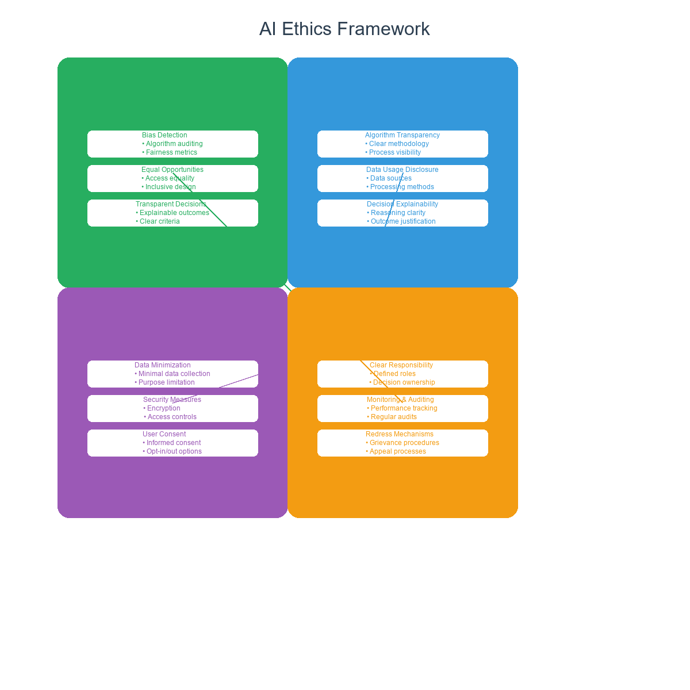
Figure 16.1: Four Pillars of AI Ethics Framework - The comprehensive approach to building responsible AI systems
AI Governance Frameworks: Building the Right Structure
Effective AI governance requires a fundamental rethinking of how organizations approach technology development, deployment, and oversight. The complexity and rapid pace of AI development demand comprehensive and adaptable frameworks that can address both current challenges and future uncertainties.
Effective AI governance operates at multiple levels: strategic (establishing clear vision and senior leadership commitment), operational (implementing robust processes for development, testing, and deployment), and tactical (ongoing monitoring, evaluation, and continuous improvement). Organizations that successfully implement comprehensive governance frameworks create AI systems that promote positive outcomes and prevent harm.
The challenge lies in balancing innovation with responsibility. Too much governance can stifle innovation, while too little can lead to ethical failures and reputational damage. Successful organizations create governance frameworks that enable rapid innovation while maintaining ethical standards and regulatory compliance.
Organizational AI Governance Structure
Effective AI governance requires clear organizational structures with defined roles, responsibilities, and decision-making authority. These structures must be designed to handle AI's unique challenges while integrating seamlessly with existing organizational processes and culture.
| Governance Component | Key Elements | Implementation Strategy |
|---|---|---|
| AI Ethics Committee | • Cross-functional Team • Expert Representation • Decision Authority • Regular Reviews |
Establish a cross-functional team including legal, technical, business, and ethics experts. Define clear roles and responsibilities, create decision-making processes, and establish regular review cycles. The committee should have authority to approve or reject AI initiatives based on ethical criteria and should meet regularly to review ongoing projects and emerging issues. |
| AI Risk Management | • Risk Assessment • Mitigation Strategies • Continuous Monitoring • Incident Response |
Implement comprehensive risk assessment processes that evaluate AI system risks and impacts before deployment. Develop proactive mitigation strategies, establish continuous monitoring systems, and create detailed response plans for addressing AI-related incidents. Regular risk reviews should be conducted throughout the AI lifecycle. |
| AI Development Oversight | • Design Reviews • Testing Protocols • Documentation Standards • Quality Assurance |
Create oversight processes for AI development that include design reviews, comprehensive testing protocols, documentation standards, and quality assurance measures. Ensure that ethical considerations are integrated into every stage of the development process, from initial design through final deployment. |
| Stakeholder Engagement | • Community Input • User Feedback • Transparency • Accountability |
Establish processes for engaging with stakeholders including affected communities, users, and external experts. Create mechanisms for collecting and responding to feedback, maintain transparency about AI system capabilities and limitations, and ensure accountability for AI system outcomes. |
Governance Implementation Phases
Implementing effective AI governance is a multi-phase process that requires careful planning and execution. Organizations must balance the need for comprehensive governance with the practical realities of business operations and technological development.
| Phase & Timeline | Key Activities | Specific Actions | Success Metrics |
|---|---|---|---|
| Phase 1: Foundation Building (Months 1-3) | • Establish AI Ethics Committee • Develop Ethical Guidelines • Implement Governance Structure |
Committee Formation: Recruit diverse, qualified members, define roles and responsibilities, create decision-making processes Guidelines Development: Define organizational AI values, create specific ethical standards, establish review procedures Governance Implementation: Create oversight mechanisms, establish reporting procedures, define accountability measures |
• Ethics committee established • Ethical guidelines documented • Governance structure operational • Stakeholder buy-in achieved |
| Phase 2: Process Integration (Months 4-6) | • Integrate Ethics into Development • Train Development Teams • Implement Monitoring Systems |
Development Integration: Include ethics reviews in project planning, implement ethical testing procedures, create documentation requirements Team Training: Provide ethics education and training, create awareness of bias and fairness issues, establish ethical decision-making skills Monitoring Implementation: Create continuous monitoring capabilities, establish alert systems for ethical violations, develop response procedures |
• Ethics integrated into development • Teams trained on ethics • Monitoring systems operational • Compliance rates improved |
| Phase 3: Continuous Improvement (Months 7-12) | • Optimize Ethical Practices • Expand Monitoring • Build Ethical Culture |
Practice Optimization: Refine ethical guidelines based on experience, improve testing procedures, enhance documentation standards Monitoring Expansion: Extend monitoring to all AI systems, implement advanced bias detection, create predictive ethics analytics Culture Building: Foster ethical AI culture, promote transparency, encourage ethical innovation |
• Ethical practices optimized • Comprehensive monitoring achieved • Ethical culture established • Continuous improvement demonstrated |
Industry-Specific Ethical Considerations
Different industries face unique ethical challenges when implementing AI systems, requiring tailored approaches to governance and oversight. Understanding these industry-specific considerations is essential for developing effective governance frameworks that address the particular risks and opportunities in each sector.
Healthcare AI Ethics
Healthcare AI presents some of the most complex ethical challenges, as decisions can directly impact patient health and safety. The stakes are particularly high because AI systems in healthcare must balance the potential for improved outcomes with the risk of causing harm to vulnerable patients.
| Ethical Principle | Key Considerations | Implementation Requirements |
|---|---|---|
| Patient Safety | • Ensuring AI recommendations don't harm patients • Maintaining safety standards • Preventing medical errors |
Implement comprehensive testing protocols, establish safety monitoring systems, create mechanisms for human oversight and intervention, ensure AI systems meet medical safety standards |
| Medical Accuracy | • Maintaining high standards of diagnostic and treatment quality • Ensuring clinical validity • Preventing misdiagnosis |
Validate AI systems against clinical standards, implement accuracy monitoring, establish protocols for clinical review, ensure AI recommendations are evidence-based |
| Informed Consent | • Obtaining patient understanding of AI-assisted care • Ensuring transparency about AI involvement • Respecting patient autonomy |
Develop clear communication protocols, create patient education materials, establish consent processes, ensure patients understand AI's role in their care |
| Professional Responsibility | • Maintaining physician oversight and accountability • Ensuring professional standards • Preserving the doctor-patient relationship |
Establish physician oversight requirements, create accountability mechanisms, ensure AI supports rather than replaces clinical judgment, maintain professional standards |
Financial Services AI Ethics
Financial services AI systems must navigate complex regulatory environments while ensuring fair treatment of customers and maintaining market integrity. The financial sector's AI applications often involve high-stakes decisions about credit, investment, and risk management.
| Ethical Principle | Key Considerations | Implementation Requirements |
|---|---|---|
| Fair Lending | • Preventing discriminatory lending practices • Ensuring equal access to credit • Avoiding bias in credit decisions |
Implement bias testing and mitigation, ensure diverse training data, establish fair lending monitoring, create mechanisms for addressing discrimination complaints |
| Transparency | • Explaining credit decisions and risk assessments • Providing clear information to customers • Enabling customer understanding |
Develop explainable AI systems, create customer communication protocols, establish transparency requirements, ensure customers understand AI-driven decisions |
| Data Security | • Protecting sensitive financial information • Preventing data breaches • Ensuring privacy compliance |
Implement robust security measures, establish data protection protocols, ensure regulatory compliance, create incident response procedures |
| Market Integrity | • Preventing AI-driven market manipulation • Ensuring fair trading practices • Maintaining market stability |
Establish market monitoring systems, create trading oversight protocols, implement manipulation detection, ensure compliance with trading regulations |
Manufacturing AI Ethics
Manufacturing AI systems must balance efficiency gains with worker safety, environmental responsibility, and supply chain ethics. The manufacturing sector's AI applications often involve automation and optimization that can significantly impact workers and communities.
| Ethical Principle | Key Considerations | Implementation Requirements |
|---|---|---|
| Worker Safety | • Ensuring AI systems don't compromise workplace safety • Protecting workers from automation risks • Maintaining safe working conditions |
Implement safety monitoring systems, establish worker protection protocols, create safety training programs, ensure AI systems enhance rather than compromise safety |
| Job Displacement | • Managing the impact of automation on employment • Supporting worker transitions • Ensuring fair treatment of displaced workers |
Develop worker transition programs, create retraining opportunities, establish fair severance policies, ensure workers are treated with dignity and respect |
| Environmental Impact | • Considering sustainability in AI implementation • Minimizing environmental harm • Promoting sustainable practices |
Assess environmental impact of AI systems, implement sustainable practices, monitor environmental effects, ensure AI contributes to sustainability goals |
| Supply Chain Responsibility | • Ensuring ethical practices throughout the supply chain • Preventing exploitation • Maintaining ethical standards |
Establish supply chain monitoring, create ethical sourcing requirements, implement supplier audits, ensure ethical practices throughout the supply chain |
Best Practices for AI Ethics Implementation
Technical Best Practices
- Diverse Training Data: Ensure representative and inclusive datasets
- Bias Testing: Implement comprehensive bias detection and mitigation
- Explainable AI: Use interpretable models and provide clear explanations
- Human Oversight: Maintain human control over critical AI decisions
Organizational Best Practices
- Leadership Commitment: Ensure senior leadership supports ethical AI
- Cross-functional Teams: Include diverse perspectives in AI development
- Regular Training: Provide ongoing ethics education for all stakeholders
- Transparent Communication: Share AI practices and outcomes openly
Measuring AI Ethics Success
Key Performance Indicators
- Bias Reduction: Decrease in discriminatory outcomes over time
- Transparency Score: Percentage of AI decisions that are explainable
- Stakeholder Satisfaction: Feedback from affected communities
- Compliance Rate: Adherence to ethical guidelines and regulations
Conclusion
AI ethics and governance are not optional—they are essential components of responsible AI implementation. Organizations that invest in ethical AI practices will not only avoid reputational and legal risks but will also build more trustworthy, effective, and sustainable AI systems.
Quick Reference Guide
Essential Frameworks, Checklists, and Implementation Guides
AI Implementation Readiness Checklist
Use this comprehensive checklist to assess your organization's readiness for AI implementation across key dimensions.
| Assessment Area | Readiness Criteria | Status | Priority Actions |
|---|---|---|---|
| Strategic Foundation | • Clear AI strategy aligned with business objectives • Executive sponsorship and commitment • Defined success metrics and KPIs • Budget allocation for AI initiatives |
□ Ready □ Partially Ready □ Not Ready | • Develop AI strategy document • Secure executive sponsorship • Define measurable objectives |
| Data Infrastructure | • High-quality, accessible data • Data governance framework • Data integration capabilities • Real-time data processing |
□ Ready □ Partially Ready □ Not Ready | • Assess data quality • Implement data governance • Build data infrastructure |
| Technology Platform | • Cloud-native architecture • AI/ML platform selection • Integration capabilities • Security and compliance |
□ Ready □ Partially Ready □ Not Ready | • Evaluate AI platforms • Plan architecture migration • Implement security measures |
| People & Skills | • AI-literate workforce • Cross-functional teams • Training programs • Change management |
□ Ready □ Partially Ready □ Not Ready | • Conduct skills assessment • Develop training programs • Build AI teams |
| Culture & Governance | • Innovation culture • AI governance framework • Ethics and compliance • Risk management |
□ Ready □ Partially Ready □ Not Ready | • Foster innovation culture • Establish governance • Implement ethics framework |
Operational Excellence Methodology Selection Guide
Choose the right operational excellence methodology based on your organizational context and objectives.
| Methodology | Best For | Key Benefits | AI Integration Opportunities | Implementation Complexity |
|---|---|---|---|---|
| Lean Six Sigma | • Process improvement • Quality enhancement • Waste reduction • Customer satisfaction |
• Structured approach • Data-driven decisions • Proven results • Cost reduction |
• Predictive analytics for DMAIC • Automated data collection • AI-powered root cause analysis • Intelligent process optimization |
Medium |
| Total Quality Management (TQM) | • Organization-wide quality • Customer focus • Continuous improvement • Employee involvement |
• Holistic approach • Cultural transformation • Customer satisfaction • Competitive advantage |
• Real-time quality monitoring • Predictive quality management • Automated quality control • Intelligent customer feedback |
High |
| Total Productive Maintenance (TPM) | • Equipment optimization • Maintenance efficiency • Zero breakdowns • Autonomous maintenance |
• Reduced downtime • Improved efficiency • Cost savings • Employee engagement |
• Predictive maintenance • IoT sensor integration • Automated monitoring • Intelligent scheduling |
Medium |
| Hoshin Kanri | • Strategic alignment • Policy deployment • Goal setting • Performance management |
• Strategic focus • Alignment • Accountability • Results orientation |
• Strategic analytics • Automated reporting • Predictive planning • Intelligent goal setting |
High |
AI Technology Selection Framework
Select the right AI technologies based on your specific operational excellence needs and organizational capabilities.
| AI Technology | Primary Applications | Required Data | Implementation Effort | Expected ROI Timeline |
|---|---|---|---|---|
| Machine Learning | • Predictive analytics • Pattern recognition • Classification • Regression analysis |
• Historical data • Structured data • Labeled examples • Feature engineering |
Medium | 6-12 months |
| Computer Vision | • Quality inspection • Process monitoring • Safety compliance • Automated analysis |
• Image data • Video streams • Labeled examples • High-resolution data |
Medium-High | 3-9 months |
| Natural Language Processing | • Customer feedback analysis • Document processing • Chatbots • Sentiment analysis |
• Text data • Language models • Training datasets • Contextual data |
Low-Medium | 2-6 months |
| Robotic Process Automation | • Process automation • Data entry • Report generation • Workflow automation |
• Process documentation • System access • Rule definitions • Test scenarios |
Low | 1-3 months |
| IoT & Edge Computing | • Real-time monitoring • Predictive maintenance • Environmental control • Asset tracking |
• Sensor data • Network infrastructure • Edge devices • Real-time streams |
High | 6-18 months |
| Generative AI | • Content creation • Design optimization • Code generation • Process documentation |
• Training data • Prompt engineering • Context data • Output validation |
Low-Medium | 1-4 months |
Implementation Phase Checklist
Follow this structured checklist to ensure successful AI implementation across all phases.
| Phase | Key Activities | Deliverables | Success Criteria | Timeline |
|---|---|---|---|---|
| Phase 1: Planning & Preparation | • Define AI strategy and objectives • Assess organizational readiness • Select technology stack • Establish governance framework |
• AI strategy document • Readiness assessment report • Technology selection rationale • Governance framework |
• Clear strategy alignment • Readiness score > 70% • Technology decisions made • Governance approved |
2-4 months |
| Phase 2: Foundation Building | • Build data infrastructure • Deploy AI platform • Develop talent capabilities • Create pilot project |
• Data infrastructure • AI platform deployment • Training completion • Pilot project results |
• Data quality > 90% • Platform operational • Team trained • Pilot success |
3-6 months |
| Phase 3: Pilot Implementation | • Execute pilot projects • Measure performance • Gather feedback • Refine approach |
• Pilot implementations • Performance metrics • Feedback reports • Refinement plans |
• Positive ROI • User satisfaction > 80% • Technical performance • Lessons learned |
2-4 months |
| Phase 4: Scale & Optimize | • Scale successful pilots • Optimize performance • Expand capabilities • Build advanced features |
• Scaled implementations • Optimized systems • Advanced capabilities • Expanded coverage |
• Organization-wide adoption • Performance targets met • Advanced features live • Continuous improvement |
6-12 months |
| Phase 5: Innovation & Leadership | • Develop advanced AI capabilities • Create innovation culture • Build ecosystem partnerships • Lead industry transformation |
• Advanced AI systems • Innovation framework • Partnership agreements • Thought leadership |
• Market leadership • Innovation recognition • Ecosystem value • Industry influence |
12+ months |
ROI Calculation Template
Use this template to calculate and track ROI for your AI implementation initiatives.
| ROI Component | Calculation Method | Example Metrics | Baseline vs. Target |
|---|---|---|---|
| Cost Savings | • Reduced manual effort • Lower error rates • Decreased downtime • Optimized resource use |
• 30% reduction in manual tasks • 50% fewer quality issues • 25% less downtime • 20% resource optimization |
Baseline: $1M annual costs Target: $300K annual savings |
| Revenue Enhancement | • Improved customer satisfaction • Faster time-to-market • Better product quality • Increased capacity |
• 15% customer satisfaction increase • 20% faster delivery • 10% quality improvement • 25% capacity increase |
Baseline: $5M annual revenue Target: $750K additional revenue |
| Investment Costs | • Technology licensing • Infrastructure setup • Training and development • Change management |
• $200K platform costs • $150K infrastructure • $100K training • $50K change management |
Total Investment: $500K |
| ROI Calculation | ROI = (Benefits - Investment) / Investment × 100% | ($300K + $750K - $500K) / $500K × 100% | ROI = 110% in Year 1 |
Risk Mitigation Checklist
Address common risks in AI implementation to ensure project success.
| Risk Category | Common Risks | Mitigation Strategies | Monitoring Indicators |
|---|---|---|---|
| Technical Risks | • Data quality issues • Integration challenges • Performance problems • Security vulnerabilities |
• Data quality assessment • Phased integration approach • Performance testing • Security audits |
• Data quality metrics • Integration success rates • Performance benchmarks • Security compliance |
| Organizational Risks | • Resistance to change • Skill gaps • Cultural barriers • Leadership turnover |
• Change management program • Comprehensive training • Cultural transformation • Succession planning |
• Adoption rates • Training completion • Employee satisfaction • Leadership continuity |
| Business Risks | • Budget overruns • Timeline delays • Scope creep • Market changes |
• Budget monitoring • Agile project management • Scope control • Market monitoring |
• Budget variance • Timeline adherence • Scope changes • Market indicators |
| Compliance Risks | • Regulatory changes • Data privacy violations • Ethical concerns • Audit failures |
• Regulatory monitoring • Privacy by design • Ethics framework • Compliance audits |
• Regulatory updates • Privacy compliance • Ethics reviews • Audit results |
Bibliography
Books and Academic Sources
Davenport, T. H., & Kirby, J. (2016). Only Humans Need Apply: Winners and Losers in the Age of Smart Machines. Harper Business.
Brynjolfsson, E., & McAfee, A. (2014). The Second Machine Age: Work, Progress, and Prosperity in a Time of Brilliant Technologies. W. W. Norton & Company.
Agrawal, A., Gans, J., & Goldfarb, A. (2018). Prediction Machines: The Simple Economics of Artificial Intelligence. Harvard Business Review Press.
Domingos, P. (2015). The Master Algorithm: How the Quest for the Ultimate Learning Machine Will Remake Our World. Basic Books.
Russell, S., & Norvig, P. (2016). Artificial Intelligence: A Modern Approach. Pearson.
Goodfellow, I., Bengio, Y., & Courville, A. (2016). Deep Learning. MIT Press.
Murphy, K. P. (2012). Machine Learning: A Probabilistic Perspective. MIT Press.
Bishop, C. M. (2006). Pattern Recognition and Machine Learning. Springer.
Hastie, T., Tibshirani, R., & Friedman, J. (2009). The Elements of Statistical Learning: Data Mining, Inference, and Prediction. Springer.
Industry Reports and White Papers
McKinsey Global Institute. (2017). Artificial Intelligence: The Next Digital Frontier?
Deloitte. (2018). AI-Powered Enterprise: How Companies Are Using AI to Transform Their Business.
PwC. (2017). Sizing the Prize: What's the Real Value of AI for Your Business and How Can You Capitalise?
Gartner. (2018). Hype Cycle for Artificial Intelligence.
Forrester. (2018). The Future of Work: AI-Augmented Employees.
BCG. (2017). The Business of Artificial Intelligence: How to Make AI Work for Your Business.
Accenture. (2017). AI: Built to Scale.
IBM. (2018). The Cognitive Enterprise: How AI Will Transform Business.
Microsoft. (2018). The Future Computed: Artificial Intelligence and its Role in Society.
Google. (2018). AI at Google: Our Principles.
Academic Journals and Research Papers
LeCun, Y., Bengio, Y., & Hinton, G. (2015). Deep learning. Nature, 521(7553), 436-444.
Silver, D., et al. (2016). Mastering the game of Go with deep neural networks and tree search. Nature, 529(7587), 484-489.
Krizhevsky, A., Sutskever, I., & Hinton, G. E. (2012). ImageNet classification with deep convolutional neural networks. Advances in neural information processing systems, 25.
Vaswani, A., et al. (2017). Attention is all you need. Advances in neural information processing systems, 30.
Goodfellow, I., et al. (2014). Generative adversarial nets. Advances in neural information processing systems, 27.
Case Studies and Industry Examples
Amazon. (2018). How Amazon Uses AI to Optimize Its Supply Chain.
Netflix. (2018). The Netflix Recommender System: Machine Learning for Personalization.
Tesla. (2018). AI-Powered Manufacturing: How Tesla Uses AI to Build Better Cars.
Google. (2018). DeepMind: The Future of AI Research.
Microsoft. (2018). AI for Good: How Microsoft Uses AI to Solve Global Challenges.
Online Resources and Websites
MIT Technology Review. https://www.technologyreview.com/
Harvard Business Review. https://hbr.org/
Stanford AI Lab. https://ai.stanford.edu/
Google AI Blog. https://ai.googleblog.com/
Microsoft AI Blog. https://blogs.microsoft.com/ai/
OpenAI Blog. https://openai.com/blog/
DeepMind Blog. https://deepmind.com/blog/
AI Ethics Guidelines. https://aiethicsguidelines.org/
AI Governance. https://aigovernance.org/
AI Safety. https://aisafety.org/
Additional Reading
Kurzweil, R. (2005). The Singularity Is Near: When Humans Transcend Biology. Viking.
Bostrom, N. (2014). Superintelligence: Paths, Dangers, Strategies. Oxford University Press.
Tegmark, M. (2017). Life 3.0: Being Human in the Age of Artificial Intelligence. Knopf.
Ford, M. (2015). Rise of the Robots: Technology and the Threat of a Jobless Future. Basic Books.
Susskind, R., & Susskind, D. (2015). The Future of the Professions: How Technology Will Transform the Work of Human Experts. Oxford University Press.
Index
A
C
E
G
I
K
M
O
Q
S
U
W
Y
|
B
D
F
H
J
L
N
P
R
T
V
Z
|